Guía de estudio de los cinco temas del bloque de teoría del riesgo: utilidad y reaseguro, modelo individual, modelo colectivo, medidas de riesgo coherentes y valores extremos. Cada tema se explica y se acompaña de las respuestas a las preguntas de repaso y debate y del ejercicio práctico en Excel, Python y R.
| Tema | Contenido | Trabajos (R = repaso, D = debate, P = práctico) |
|---|---|---|
| Tema 1 · Utilidad | Teoría de la utilidad y decisiones bajo riesgo | R · D · P |
| Tema 2 · Individual | Modelo individual del coste total de siniestralidad | R · D · P |
| Tema 3 · Colectivo | Modelo colectivo de riesgo: frecuencia, severidad y agregación | R · D · P |
| Tema 4 · VaR / TVaR | Gestión de capital y medidas coherentes de riesgo: VaR y TVaR | R · D · P |
| Tema 5 · Extremos | Teoría de valores extremos y riesgos catastróficos (POT / GPD) | R · D · P |
Por qué el valor esperado no basta para decidir bajo riesgo, cómo se formaliza la aversión al riesgo y cómo esa idea se convierte en primas, en reaseguro óptimo y en lectura regulatoria.
Un asegurado con probabilidad 0,01 de perder \(B\) pagará más de \(0{,}01\,B\) si \(B\) es grande, porque una pérdida grande compromete su solvencia. El valor de una pérdida no es solo su magnitud: depende de la riqueza que queda. La paradoja de San Petersburgo (esperanza infinita, disposición a pagar finita) dice lo mismo. Hace falta una medida de valor subjetivo del dinero: la función de utilidad.
La prima de mercado de un riesgo es su valor esperado más un recargo. Ese recargo es la forma empírica de la aversión al riesgo, y toda la sesión sirve para cuantificarlo.
Si un decisor es consistente (axiomas de orden, continuidad e independencia), existe \(u(\cdot)\) tal que prefiere la pérdida aleatoria \(X\) a \(Y\) si y solo si
\[ \mathbb{E}[u(w-X)]\;\ge\;\mathbb{E}[u(w-Y)] . \]Una decisión compleja se reduce a comparar dos números. La utilidad es única salvo transformaciones afines positivas, \(u\sim a\,u+b\) con \(a>0\); por eso se normaliza \(u(0)=0,\ u'(0)=1\), y por eso cualquier medida útil debe ser invariante a esa transformación.
Si \(u\) es lineal, el decisor es neutral al riesgo y la prima de equilibrio es la pura \(\mathbb{E}[X]\) (principio de equivalencia). Los aseguradores con ley de grandes números y capital suficiente se aproximan a ese caso.
Para \(u\) cóncava, Jensen da \(\mathbb{E}[u(w-X)]\le u(w-\mathbb{E}[X])\): el averso prefiere la pérdida cierta \(\mathbb{E}[X]\) a la aleatoria \(X\). El equivalente cierto y la prima de riesgo miden esa brecha en euros:
\[ u(CE)=\mathbb{E}[u(\widetilde W)],\qquad \pi=\mathbb{E}[\widetilde W]-CE\ \ge 0 . \]Si \(u\) es convexa (amante del riesgo), \(CE\ge\mathbb{E}[\widetilde W]\). La prima técnica de un seguro se puede leer como \(\mathbb{E}[X]+\pi\): \(\pi\) compensa al asegurador por asumir la variabilidad.
Se define la aversión absoluta \(r(w)=-u''(w)/u'(w)\) y la relativa \(\rho(w)=w\,r(w)\). Se deduce con Taylor de segundo orden alrededor de \(w-\mu\) (\(\mu=\mathbb{E}[X]\)) sobre la ecuación de equilibrio \(u(w-P^+)=\mathbb{E}[u(w-X)]\):
\[ P^+\approx\mu-\tfrac12\,\sigma^2\,\frac{u''(w-\mu)}{u'(w-\mu)}\ \Longrightarrow\ \pi\approx\tfrac12\,r(w)\,\sigma^2 . \]La prima de riesgo es, en primera aproximación, proporcional a la varianza y a la aversión local. Vale para riesgos pequeños frente a \(w\); ignora asimetría y curtosis, que dominan en catastróficos. \(r\) es invariante a \(a\,u+b\), y por eso permite comparar decisores sin normalizar.
\(u(w)=-e^{-\alpha w}/\alpha\), \(r(w)=\alpha\) constante. La ecuación de equilibrio da la prima exponencial exacta
\[ P=\frac1\alpha\ln M_X(\alpha). \]No depende de \(w\) (el factor \(e^{-\alpha w}\) se cancela). Es aditiva para riesgos independientes. Estándar en pricing de reaseguro. Aproximación: \(P\approx\mathbb{E}[X]+\tfrac12\alpha\,\mathrm{Var}[X]\).
\(u(w)=\dfrac{w^{1-\gamma}}{1-\gamma}\), \(\rho(w)=\gamma\), \(r(w)=\gamma/w\) decreciente en \(w\). Con \(\gamma=1\) queda \(\ln w\) (límite de la forma normalizada \((w^{1-\gamma}-1)/(1-\gamma)\)).
Requiere \(w>0\) en todo estado. Típico en asignación de activos: en el modelo de Merton la fracción óptima en el activo con riesgo es \(\mu/(\gamma\sigma^2)\). Valores calibrados: \(\gamma\approx1\) a \(10\).
La cuadrática (\(-(\alpha-w)^2\)) tiene saciedad y aversión creciente con la riqueza: solo sirve como aproximación media-varianza.
Supone preferencias consistentes, probabilidades objetivas, \(u\) diferenciable y decisión sobre la riqueza final. La paradoja de Allais (1953) viola la independencia; la teoría prospectiva (Kahneman–Tversky, 1979) añade efecto marco y aversión a pérdidas respecto a un punto de referencia; y exige conocer \(w\), que rara vez es observable.
El cedente paga como máximo \(P^+\) con \(u(w-P^+)=\mathbb{E}[u(w-X)]\); el reasegurador exige como mínimo \(P^-\) con \(U(W)=\mathbb{E}[U(W+P^--X)]\). Hay trato si \(P^-\le P^+\), y cualquier \(P\in[P^-,P^+]\) mejora a ambos.
Con la misma prima esperada, entre todos los contratos con \(0\le I(x)\le x\) el stop-loss \((X-M)_+\) minimiza \(\mathrm{Var}[X-I(X)]\): lleva el riesgo retenido lo más cerca posible de la constante \(M\).
Si el reasegurador tarifica por varianza, \(\mathbb{E}[I]+\lambda\,\mathrm{Var}[I]\), y el cedente fija la varianza retenida \(V\), el óptimo es \(I(X)=\beta X\) con \(\beta=1-\sqrt{V/\mathrm{Var}[X]}\).
No hay una estructura universalmente óptima: depende de qué se fije y de cómo tarifica el reasegurador. En la práctica se combinan cuota-parte y exceso de pérdida.
Respuestas, PDF, Excel, Python y R de este tema: repaso · debate · ejercicio práctico.
Cómo se describe la siniestralidad agregada de una cartera póliza a póliza, qué se puede calcular de forma exacta y cuándo (y por qué) hay que corregir la aproximación Normal con tres momentos.
Una aseguradora no gestiona pólizas aisladas: paga y provisiona el agregado de toda la cartera en un periodo. El capital depende de la cola de ese agregado, no solo de la media: ¿con qué probabilidad la siniestralidad total \(S\) supera el capital disponible? ¿cuál es su percentil 99,5 %? De \(S\) dependen la tarificación, las reservas, el reaseguro y el SCR.
Con \(n\) pólizas en un periodo (habitualmente un año), \(X_i\) es el coste total de la póliza \(i\) y
\[ S=X_1+\dots+X_n,\qquad X_i=I_i\,B_i,\quad I_i\sim\mathrm{Bernoulli}(q_i),\quad B_i\ \text{severidad con media }\mu_i\text{ y varianza }\sigma_i^2 . \]Es un esquema de «urna dentro de urna»: primero se sortea si hay siniestro y, solo si lo hay, su coste. Así se modela la masa de probabilidad en cero junto con la parte continua o discreta del coste. Las \(X_i\) son independientes (hipótesis) pero no idénticas (cada póliza tiene su \(q_i\), su capital, su perfil). Es la diferencia con el colectivo, donde \(S=Y_1+\dots+Y_N\) con \(Y_j\) i.i.d.
| Individual | Colectivo | |
|---|---|---|
| Unidad | cada póliza \(i\) | nº de siniestros \(N\) y severidad \(Y\) |
| Cálculo | convolución, De Pril, FFT | Panjer, Poisson compuesto, FFT |
| Ventaja | realismo y trazabilidad por póliza | agilidad de cálculo |
Por la fórmula de la varianza total, \(\mathrm{Var}(X_i)=\mathbb{E}[\mathrm{Var}(X_i|I_i)]+\mathrm{Var}[\mathbb{E}(X_i|I_i)]\), y por independencia entre pólizas se suman las esperanzas y las varianzas (no las desviaciones típicas):
\[ \mathbb{E}(S)=\sum_i q_i\mu_i,\qquad \mathrm{Var}(S)=\sum_i\Big[\,q_i\sigma_i^2+q_i(1-q_i)\mu_i^2\Big]. \]El primer sumando es incertidumbre de severidad; el segundo, de ocurrencia. Con severidad fija \(b_i\) (vida) queda \(\mathrm{Var}(X_i)=q_i(1-q_i)b_i^2\) y el tercer momento central \(\mu_3(X_i)=b_i^3q_i(1-q_i)(1-2q_i)\); también se suman.
Las transformadas convierten sumas en productos: \(M_S(t)=\prod_i[1-q_i+q_iM_{B_i}(t)]\), \(P_S(z)=\prod_i[1-q_i+q_iP_{B_i}(z)]\). Permiten recuperar momentos por derivación y probabilidades por inversión (FFT, recursiones).
Independencia (no capta pandemias ni catástrofes que correlacionan pólizas); a lo sumo un siniestro por póliza; necesidad de datos granulares; coste computacional del cálculo exacto.
La convolución directa es prohibitiva para \(n\) grande. La recursión de De Pril (1986) da la distribución exacta cuando las cuantías son enteras (múltiplos de una unidad), y la FFT invierte la transformada sobre cuantías discretizadas. En el ejercicio práctico se implementa la convolución recursiva \(P_k(s)=(1-q_k)P_{k-1}(s)+q_kP_{k-1}(s-u_k)\) y se usa como referencia exacta para juzgar las aproximaciones.
\(F_S(x)\approx\Phi\big((x-\mathbb{E}S)/\sqrt{\mathrm{Var}S}\big)\), válida asintóticamente si ninguna póliza domina la suma (condición de Lindeberg). Es sencilla, pero ignora la asimetría positiva \(\gamma_S=\mu_3(S)/\sigma_S^3\). El primer término de Edgeworth, \(F_S\approx\Phi(z)-\varphi(z)\tfrac{\gamma_S}{6}(z^2-1)\), es negativo para \(z>1\): la cola real es más gruesa y el cuantil verdadero, mayor que el Normal. El error se concentra justo en el nivel regulatorio.
\(S\approx k+\Gamma(\alpha,\beta)\) con la Gamma de forma \(\alpha\) y tasa \(\beta\). Una Gamma tiene asimetría \(2/\sqrt\alpha\), varianza \(\alpha/\beta^2\) y media \(\alpha/\beta\); igualando los tres momentos de \(S\):
\[ \alpha=\frac{4}{\gamma_S^2},\quad \beta=\frac{2}{\sigma_S\gamma_S},\quad k=\mathbb{E}(S)-\frac{2\sigma_S}{\gamma_S}. \]El desplazamiento \(k\) puede ser negativo y no altera ni varianza ni asimetría.
Corrige el cuantil Normal con un término proporcional a la asimetría; crece con \(z_p^2\), así que es pequeño al 90 % y grande al 99,5 %. Si \(\gamma_S=0\) recupera la Normal.
Progresión natural: Normal → Gamma → Gamma trasladada → Normal Power. Las dos últimas ajustan tres momentos y son las que mejor reproducen la cola derecha.
\(q=(0{,}01;0{,}02;0{,}03)\), \(b=(100.000;150.000;200.000)\): \(\mathbb{E}(S)=10.000\), \(\mathrm{Var}=1{,}704\cdot10^9\), \(SD\approx41.280\), \(\gamma_S\approx4{,}15\). VaR 99,5 %: Normal 116.329; Gamma trasladada 240.076; Normal Power 277.284 (las diapositivas dan 116.336 y 277.316 por redondeo de \(z\)).
Con tres pólizas \(S\) solo toma 8 valores y \(P(S=0)=0{,}94\). El percentil 99,5 % exacto es 200.000: la Normal infravalora, pero Gamma y Normal Power sobrestiman mucho. Ninguna aproximación continua es fiable en una cartera tan pequeña; ahí se usa la distribución exacta.
Caso 1 (Vida, 1.000 pólizas en 4 grupos): \(\mathbb{E}(S)=610.000\), \(\mathrm{Var}\approx1{,}172\cdot10^{11}\), \(SD\approx342.354\), VaR Normal \(\approx1.491.844\) (capital \(\approx882.000\), el 145 % de la prima de riesgo). El grupo D (50 pólizas) aporta el 38 % de la varianza con el 24,6 % de la prima esperada (la diapositiva habla del 5 %, que es su peso en número de pólizas).
Caso 2 (Accidentes, severidad \(U(0,M_i)\)): \(\mu_i=M_i/2\), \(\sigma_i^2=M_i^2/12\). \(\mathbb{E}(S)=84.500\), \(\mathrm{Var}\approx4{,}651\cdot10^8\), VaR Normal \(\approx140.049\) (VaR/E ≈ 1,66). La severidad aleatoria añade riesgo de proceso ausente en el Caso 1.
La tabla de la diapositiva de Monte Carlo (VaR ≈ 1.486.900 €, por debajo del Normal) no es reproducible: la distribución exacta y la simulación dan ≈ 1,65–1,70 M€, por encima del Normal, como la propia diapositiva comenta. Ver el ejercicio práctico.
Respuestas, PDF, Excel, Python y R de este tema: repaso · debate · ejercicio práctico.
Cómo se separa el riesgo de cuántos siniestros hay del de cuánto cuesta cada uno, qué distribuciones se usan y cómo se obtiene la distribución exacta de la siniestralidad total con Panjer y la FFT.
El modelo individual necesita \(q_i\) y la severidad de cada póliza; en carteras grandes y heterogéneas (Auto, Hogar) esa información es costosa. El colectivo modela directamente el número de siniestros de toda la cartera y, por separado, el coste unitario. Es el estándar de Seguros Generales y separa dos fuentes de riesgo: frecuencia y severidad.
\(S=X_1+\dots+X_N\) con \(N\) aleatorio (frecuencia) y \(X_i\) i.i.d. (severidad), independientes de \(N\). Por la fórmula de la varianza total (Wald / Blackwell–Girshick):
\[ \mathbb{E}(S)=\mathbb{E}(N)\,\mathbb{E}(X),\qquad \mathrm{Var}(S)=\underbrace{\mathbb{E}(N)\,\mathrm{Var}(X)}_{\text{severidad}}+\underbrace{\mathrm{Var}(N)\,\mathbb{E}(X)^2}_{\text{frecuencia}},\qquad M_S(t)=M_N\big(\ln M_X(t)\big). \]Con Poisson, \(\mathrm{Var}(S)=\lambda\,\mathbb{E}(X^2)\). Hay un tercer momento análogo: \(\mu_3(S)=\mathbb{E}(N)\mu_3(X)+3\mathrm{Var}(N)\mathbb{E}(X)\mathrm{Var}(X)+\kappa_3(N)\mathbb{E}(X)^3\). La variación relativa es \(CV_S^2=\mathrm{Var}(N)/\mathbb{E}(N)^2+CV_X^2/\mathbb{E}(N)\): el segundo sumando se diversifica con el volumen; el primero, con sobredispersión, deja un suelo.
Independencia entre \(N\) y las \(X_i\); severidades i.i.d. (hay que segmentar bien); sin dependencia entre siniestros (no recoge catástrofes sin extensiones); una mala elección de frecuencia o severidad distorsiona la cola, donde está el capital.
\(P(N=n)=e^{-\lambda}\lambda^n/n!\), \(\mathbb{E}N=\mathrm{Var}N=\lambda\) (equidispersión), \(P_N(z)=e^{\lambda(z-1)}\). Límite de muchos riesgos con probabilidad pequeña; modelo por defecto sin evidencia de sobredispersión.
\(\mathbb{E}N=r\beta\), \(\mathrm{Var}N=r\beta(1+\beta)>\mathbb{E}N\). Es una mezcla Poisson–Gamma: \(\Lambda\sim\Gamma(r,\beta)\), \(N|\Lambda\sim\mathrm{Poisson}(\Lambda)\); \(P_N(z)=(1-\beta(z-1))^{-r}\). Modela heterogeneidad no observada.
| Distribución | Media | Varianza | Cola | Uso típico |
|---|---|---|---|---|
| Gamma(α,θ) | \(\alpha\theta\) | \(\alpha\theta^2\) | ligera (exponencial) | Auto: daño propio, lunas |
| Log-normal | \(e^{\mu+\sigma^2/2}\) | \((e^{\sigma^2}-1)e^{2\mu+\sigma^2}\) | moderada | Hogar: agua, robo |
| Pareto(α,θ) | \(\theta/(\alpha-1)\), α>1 | \(\alpha\theta^2/[(\alpha-1)^2(\alpha-2)]\), α>2 | pesada (potencia) | RC, incendio, grandes siniestros |
Una Pareto tiene \(\mathbb{E}[X^k]<\infty\) solo si \(k<\alpha\): con \(\alpha\le2\) no hay varianza; con \(\alpha\le3\), no hay tercer momento.
La distribución exacta es \(P(S=x)=\sum_n P(N=n)f_X^{*n}(x)\), prohibitiva por convolución directa.
Si \(p_n=(a+b/n)p_{n-1}\) (Poisson: \(a=0,b=\lambda\); BN: \(a=\beta/(1+\beta)\), \(b=(r-1)\beta/(1+\beta)\)), con la severidad discretizada \(f_j\) en una malla \(h\):
\[ g_0=P_N(f_0),\qquad g_k=\frac{1}{1-af_0}\sum_{j=1}^{k}\Big(a+\frac{bj}{k}\Big)f_jg_{k-j}\ \ \Big(\text{Poisson: }g_k=\frac\lambda k\sum_{j=1}^kj f_jg_{k-j}\Big). \]Coste \(O(M^2)\). Pasos: elegir \(N\); hallar \(a,b\); discretizar la cuantía; calcular \(f_k\); \(g_0=P_N(f_0)\); aplicar la recursión; comprobar que suman 1; extraer momentos y cuantiles. Limitaciones: discretización, precisión según \(h\), colas muy pesadas, y underflow: con \(\lambda=1.200\), \(g_0=e^{-1200}\) desborda.
La función generatriz de \(S\) es \(P_N(\varphi_X)\): se transforma el vector de severidad, se aplica la fgp de \(N\) punto a punto y se invierte: \(g=\mathrm{IFFT}\big(P_N(\mathrm{FFT}(f))\big)\); para Poisson, \(\exp\{\lambda(\widehat f-1)\}\). Coste \(O(M\log M)\); no tiene el problema del desbordamiento. Riesgo: aliasing (si \(S\) supera la rejilla, la cola reaparece por la izquierda) → relleno de ceros hasta \(M\) suficientemente grande.
En el ejemplo \(\lambda=5\), \(\Gamma(2,300)\), \(h=10\): \(g_0=0{,}006742576\), masa hasta 15.000 € = 0,999999184, \(\mathbb{E}S=3.000\), \(\sigma_S=1.643\) y \(VaR_{99,5\%}=8.290\); Panjer y FFT coinciden (diferencia \(\sim10^{-12}\)).
Normal y Normal Power usan los mismos momentos que en el Tema 2. Funcionan con muchos siniestros esperados (TCL) y severidad ligera; fallan con Pareto (\(\alpha\le3\) para NP; \(\alpha\le2\) para la Normal), donde hay que usar Panjer/FFT o simulación. El reaseguro de exceso de pérdida trunca la severidad y mejora la fiabilidad de las aproximaciones. Medidas: VaR \(=F_S^{-1}(p)\) (SCR, \(p=99{,}5\%\)) y TVaR \(=\mathbb{E}[S\,|\,S>VaR_p]\) (SST), más sensible a la cola.
Caso 1 · Auto (Poisson 1.200; Gamma(2,450)): \(\mathbb{E}(S)=1.080.000\), \(\mathrm{Var}=\lambda\alpha\theta^2(1+\alpha)=1{,}458\cdot10^9\), \(SD=38.184\), VaR Normal 1.178.361 (capital 98.361, el 9,1 % de la media). Con la FFT, el VaR exacto es 1.180.040: la brecha sistemática es ≈1.700 € por la asimetría de la Gamma.
Caso 2 · Hogar (BN(50,3); Pareto(4,3.000)): \(\mathbb{E}N=150\), \(\mathrm{Var}N=600\), \(\mathbb{E}X=1.000\), \(\mathrm{Var}X=2\cdot10^6\), \(\mathbb{E}S=150.000\), \(\mathrm{Var}S=9\cdot10^8\), VaR Normal 227.280 (capital = 51 % de la media). VaR exacto 238.300; Normal Power 238.545.
La diapositiva dice que ambas carteras tienen \(SD/E\) «similar»: no lo es (3,5 % en Auto frente a 20 % en Hogar). Con la BN el cociente tiene un suelo \(\sqrt{1/r}=14{,}1\%\) que ningún aumento de tamaño elimina. Las tablas «ilustrativas» de R de la diapositiva (VaR Panjer ≈ 1.192.500 con el MLE de la semilla) dependen de la muestra: con los parámetros teóricos sale 1.180.040.
Respuestas, PDF, Excel, Python y R de este tema: repaso · debate · ejercicio práctico.
Qué propiedades debe tener una cifra de capital, por qué el VaR puede fallar la diversificación, por qué el TVaR no, y qué dicen Solvencia II, Basilea y el SST.
Los temas anteriores dieron la distribución de la siniestralidad agregada \(S\); falta convertirla en una cifra de capital. No cualquier función sirve: tras LTCM (1998) y 2008 se vio que el VaR, estándar de facto, podía dar señales erróneas de diversificación. Artzner, Delbaen, Eber y Heath (1999) fijaron un conjunto mínimo de propiedades: las medidas coherentes.
Sea \(X\) una pérdida y \(\rho(X)\) el capital exigido. \(\rho\) es coherente si cumple:
Consecuencias: \(\rho(0)=0\), \(\rho(c)=c\), \(\rho(X-\rho(X))=0\), \(|\rho(X)-\rho(Y)|\le\|X-Y\|_\infty\) (estabilidad) y \(\mathrm{ess\,inf}X\le\rho(X)\le\mathrm{ess\,sup}X\). El conjunto de aceptación \(\mathcal A_\rho=\{X:\rho(X)\le0\}\) es un cono convexo y \(\rho(X)=\inf\{m:X-m\in\mathcal A_\rho\}\). Con homogeneidad, subaditividad \(\Leftrightarrow\) convexidad. Solvencia II acepta si \(P(X>0)\le0{,}5\%\): ese conjunto no es convexo en general, la versión geométrica de que el VaR no es subaditivo.
\(\rho=\mathbb{E}X+k\sigma\) no es monótona: con \(Y=1\) y \(X=1\) (99 %) o −99 (1 %), \(X\le Y\) pero \(\rho(X)=9{,}95>1=\rho(Y)\).
\(\mathrm{VaR}_p(X)=\inf\{x:P(X>x)\le1-p\}=F_X^{-1}(p)\): un cuantil. Ventajas: sencillo y comunicable. Cumple monotonía, homogeneidad y traslación (prueba directa con \(P(X+c>x)=P(X>x-c)\), etc.) y es equivariante bajo funciones crecientes. No garantiza subaditividad y no ve la cola más allá del percentil: dos carteras con igual VaR pueden tener colas radicalmente distintas.
La última forma (Rockafellar–Uryasev) da la prueba de subaditividad: con \((a+b)^+\le a^++b^+\), \(\mathrm{TVaR}_p(X+Y)\le t_1+t_2+\frac{\mathbb{E}(X-t_1)^++\mathbb{E}(Y-t_2)^+}{1-p}\) y, con \(t_1=\mathrm{VaR}_p(X)\), \(t_2=\mathrm{VaR}_p(Y)\), queda \(\mathrm{TVaR}_p(X)+\mathrm{TVaR}_p(Y)\), sin hipótesis de dependencia ni de normalidad. Es coherente, \(\ge\mathrm{VaR}_p\), captura la severidad de la cola, pero es más difícil de estimar y exige más capital.
| Distribución | VaR\(_p\) | TVaR\(_p\) | TVaR/VaR (p→1) |
|---|---|---|---|
| Normal | \(\mu+\sigma z_p\) | \(\mu+\sigma\varphi(z_p)/(1-p)\) | 1 |
| Exponencial | \(-\theta\ln(1-p)\) | VaR + θ | 1 |
| Log-normal | \(e^{\mu+\sigma z_p}\) | \(e^{\mu+\sigma^2/2}\Phi(\sigma-z_p)/(1-p)\) | 1 (muy lento) |
| Pareto(\(x_m,\alpha>1\)) | \(x_m(1-p)^{-1/\alpha}\) | \(\tfrac\alpha{\alpha-1}\mathrm{VaR}_p\) | \(\alpha/(\alpha-1)\) |
Dos bonos independientes (\(q=2\%\), pérdida 100, \(p=97{,}5\%\)): \(\mathrm{VaR}(A)=\mathrm{VaR}(B)=0\) porque \(q<1-p\), pero \(P(\text{al menos un impago})=3{,}96\%>2{,}5\%\) y \(\mathrm{VaR}(A+B)=100\): el VaR no es subaditivo (efecto acantilado). TVaR: 80 cada uno, 101,6 la cartera (\(\le160\)). Con correlación \(\rho\): \(P(A{=}B{=}1)=q^2+\rho q(1-q)\); el VaR de la cartera es 100 para \(\rho<\rho^*\approx0{,}745\) y cae a 0 después (discontinuidad); \(\mathrm{TVaR}(A+B)=101{,}6+78{,}4\rho\) si \(\rho<\rho^*\) y 160 si no.
Comonotonía (\(X=f(Z)\), \(Y=g(Z)\) con \(f,g\) no decrecientes): \(\mathrm{VaR}_p\) y \(\mathrm{TVaR}_p\) son aditivos: es el capital sin diversificación (correlación 1 en la fórmula estándar). Normalidad: \(\mathrm{VaR}_p(X+Y)\le\mathrm{VaR}_p(X)+\mathrm{VaR}_p(Y)\) si \(p\ge50\%\), porque \(\sigma(X+Y)\le\sigma_X+\sigma_Y\); fórmula estándar: \(SCR=\sqrt{\sum_{ij}\mathrm{Corr}_{ij}SCR_iSCR_j}\) (con 100, 80 y \(\rho=0{,}25\): 142,83, un 20,7 % menos que 180), exacta solo bajo normalidad.
\(C_i=\mathbb{E}[X_i\,|\,S>\mathrm{VaR}_p(S)]\) cumple \(\sum_iC_i=\mathrm{TVaR}_p(S)\) por linealidad. Para una normal conjunta, \(C_i=\mu_i+\frac{\mathrm{Cov}(X_i,S)}{\sigma_S}\frac{\varphi(z_p)}{1-p}\): cada línea paga su media más su covarianza con el total, no su desviación individual. Con \(A\sim N(3;0{,}5^2)\), \(B\sim N(2;0{,}4^2)\), \(\rho=0{,}3\), \(p=99{,}5\%\): \(C_A=4{,}231\), \(C_B=2{,}874\), total 7,105. Uso: \(RORAC_i=\) beneficio\(_i/C_i\).
| Marco | Medida | Nivel | Horizonte |
|---|---|---|---|
| Solvencia II (UE) | VaR | 99,5 % | 1 año |
| SST (Suiza) | Expected Shortfall | 99 % | 1 año |
| Basilea II (mercado) | VaR | 99 % | 10 días |
| FRTB (desde 2019) | Expected Shortfall | 97,5 % | 10–120 días (liquidez) |
Solvencia II mantiene el VaR por simplicidad, comparabilidad y menor error de estimación con pocos datos; sus limitaciones: no coherente, ciego a la cola sistémica y propenso a la «optimización de cola». La banca ya hizo la transición a ES.
Caso 1 (\(S\sim N(5\text{ M€};0{,}8\text{ M€})\), \(p=99{,}5\%\)): VaR 7.060.663, TVaR 7.313.559; capital 2.060.663 frente a 2.313.559 (+12,3 %). Extensión Log-normal (misma media y varianza): \(\sigma_L^2=0{,}02528\), \(\mu_L=15{,}41231\), VaR 7.435.977, TVaR 7.827.963; capital +18,2 % (VaR) y +22,2 % (TVaR) sobre la Normal; TVaR/VaR del capital sube del 12,3 % al 16,1 %.
Caso 2 (crédito, 50 M€ cada cartera, \(q=1{,}5\%\), \(p=98\%\)): VaR 0+0 < 50; TVaR 37,5+37,5=75 ≥ 50,56 (beneficio 24,4 M€).
Se dice que con colas pesadas la brecha TVaR−VaR «aumenta con \(p\)». Es cierto para Pareto o t de Student (brecha \(\mathrm{VaR}_p/(\alpha-1)\) creciente), pero con la Log-normal suave de la extensión la brecha absoluta también decrece (452.842 al 95 % → 352.312 al 99,99 %), solo que más despacio que con la Normal.
Respuestas, PDF, Excel, Python y R de este tema: repaso · debate · ejercicio práctico.
Por qué las distribuciones clásicas no bastan en la cola, cómo se modela solo la parte extrema con la GPD, cómo se elige el umbral y por qué un cuantil por evento todavía no es un capital anual.
Gamma, Log-normal e incluso Pareto se ajustan a toda la distribución de severidad, pero eso no garantiza precisión en la cola extrema, que es donde se calcula el capital. Los riesgos catastróficos (terremotos, inundaciones, grandes siniestros industriales) son raros por definición: hay pocos datos justo en la región que importa. La EVT ajusta un modelo asintóticamente justificado solo a los datos más extremos. Hay dos enfoques: máximos por bloques (GEV) y excesos sobre un umbral (POT, GPD), foco de la sesión.
Para el máximo \(M_n\) de \(n\) observaciones independientes, \(P\big((M_n-b_n)/a_n\le x\big)\to H_\xi(x)=\exp\{-(1+\xi x)^{-1/\xi}\}\) (GEV): el análogo del TCL para máximos. Según \(\xi\): Fréchet (\(\xi>0\), cola pesada, el caso de seguros), Gumbel (\(\xi=0\)) y Weibull (\(\xi<0\), cola acotada).
Si \(\bar F(x)=x^{-\alpha}L(x)\) con \(L\) lentamente variable, \(F\in\mathrm{MDA}(\text{Fréchet})\) con \(\xi=1/\alpha\), y \(\mathbb{E}(X^k)<\infty\) solo si \(k<\alpha\Leftrightarrow\xi<1/k\): media si \(\xi<1\), varianza si \(\xi<1/2\), tercer momento si \(\xi<1/3\). Pareto(\(\alpha\)): \(\xi=1/\alpha\); Burr(\(\alpha,\gamma\)): \(1/(\alpha\gamma)\); t de Student(\(\nu\)): \(1/\nu\); Log-normal, Gamma, Exponencial: \(\xi=0\) (convergencia lenta); soporte acotado: \(\xi<0\). Así, \(\hat\xi=0{,}35\) equivale a \(\alpha\approx2{,}86\): existen media y varianza, pero no el tercer momento.
Usa el máximo de cada bloque (p. ej. el año). Menos eficiente (un dato por bloque). Preferible si solo hay máximos o el agrupamiento intra-anual es fuerte.
Usa todos los excesos sobre \(u\): más eficiente si son independientes (si llegan agrupados, hay que declusterizar). Natural para pérdidas por evento, Cat XL y capas.
Si las excedencias son Poisson(\(\lambda_u\)) con severidad GPD(\(\xi,\sigma\)), el máximo anual es GEV con el mismo \(\xi\): \(P(M\le x)=\exp\{-\lambda_u[1+\xi(x-u)/\sigma]^{-1/\xi}\}\). Regla: la unidad de observación debe coincidir con la del contrato o la métrica (por riesgo, por evento o por año): un VaR 99,5 % de severidad por reclamación o por evento no es un suceso 1-en-200 años. Las reclamaciones de un mismo evento no son independientes: hay que agrupar por evento (cláusula 72/168 h) o declusterizar (índice extremal \(\theta\); \(1/\theta\approx\) tamaño medio del cluster).
Sea \(F_u(y)=P(X-u\le y\,|\,X>u)\). El teorema de Balkema–Pickands–de Haan dice que, para \(F\) en el dominio de atracción de una GEV, \(\sup_y|F_u(y)-G_{\xi,\sigma(u)}(y)|\to0\) cuando \(u\to x_F\), con la GPD
\[ G_{\xi,\sigma}(y)=1-\Big(1+\frac{\xi y}{\sigma}\Big)^{-1/\xi}\ (\xi\ne0),\qquad G_{0,\sigma}(y)=1-e^{-y/\sigma}. \]\(\xi>0\): cola tipo Pareto (sin límite superior); \(\xi=0\): exponencial; \(\xi<0\): soporte acotado \(0\le y\le-\sigma/\xi\). Momentos: \(\mathbb{E}(Y)=\sigma/(1-\xi)\) (\(\xi<1\)), \(\mathrm{Var}(Y)=\sigma^2/[(1-\xi)^2(1-2\xi)]\) (\(\xi<1/2\)). Un \(\hat\xi\) cercano o superior a 0,5 es una señal de alerta sobre la varianza empírica.
MLE: \(\ell(\xi,\sigma)=-N_u\ln\sigma-(1+1/\xi)\sum\ln(1+\xi y_i/\sigma)\), sin solución cerrada (en R, fpot() de evd o gpd.fit() de ismev); consistente, normal y eficiente si \(\xi>-1/2\); varianza asintótica \((1/N_u)[(1+\xi)^2,\,-\sigma(1+\xi);\,-\sigma(1+\xi),\,2\sigma^2(1+\xi)]\).
Umbral: sesgo frente a varianza. Muy bajo: sesgo (no es régimen asintótico); muy alto: pocos datos y varianza. Diagnósticos: (1) exceso medio \(e(u')=[\sigma(u)+\xi(u'-u)]/(1-\xi)\): lineal en \(u'\) con pendiente \(\xi/(1-\xi)\); (2) estabilidad de \(\hat\xi\) y de la escala modificada \(\sigma^*=\hat\sigma-\hat\xi u\) (invariante al umbral porque \(\sigma(u')=\sigma(u)+\xi(u'-u)\)). Se elige el menor umbral a partir del cual ambos son compatibles con una constante.
Con \(n\) observaciones y \(N_u\) excesos, \(r=\tfrac n{N_u}(1-p)\):
\[ \mathrm{VaR}_p=u+\frac\sigma\xi\big[r^{-\xi}-1\big],\qquad \mathrm{TVaR}_p=\frac{\mathrm{VaR}_p+\sigma-\xi u}{1-\xi}\ (\xi<1),\qquad x_m=u+\frac\sigma\xi\big[(\lambda_um)^\xi-1\big],\quad \lambda_u=N_u/T. \]Para \(\xi=0\): \(\mathrm{VaR}_p=u-\sigma\ln r\), \(\mathrm{TVaR}_p=\mathrm{VaR}_p+\sigma\); numéricamente, expm1 evita la pérdida de precisión cuando \(\xi\to0\). Con \(\xi<0\) todo cuantil debe quedar por debajo del punto final \(x_F=u-\sigma/\xi\). El VaR usa la frecuencia relativa por observación (\(n/N_u\)); el nivel de retorno, la absoluta por año (\(\lambda_u\)). El factor de extrapolación \(P(X>u)/P(X>x)\) mide la distancia a los datos: hasta ≈15 el resultado se apoya en datos; por encima de 100 depende casi solo de \(\hat\xi\).
Flujo: severidad por evento \(\mathrm{GPD}(\xi,\sigma)\) sobre \(u\) + frecuencia \(N\sim\mathrm{Poisson}(\lambda_u)\) o BN si hay agrupamiento + agregación \(S=X_1+\dots+X_N\) por año con el programa de reaseguro evento a evento + simulación de \(10^5\)–\(10^6\) años (OEP = máximo, AEP = suma) + \(SCR=\mathrm{VaR}_{99,5}(S)-\mathbb{E}(S)\) (Directiva, art. 101: pérdida anual).
Caso 1 (\(\lambda_u=2\), \(\xi=0{,}35\), \(\sigma=6\), \(u=10\)): \(\mathbb{E}S=38{,}5\), \(VaR_{99,5}(S)=186\), \(SCR\approx147\) M€, OEP 1/200 ≈ 133; el VaR de severidad (28,35) es solo el 19 % del SCR. Con BN (var = 2,5·media) el SCR sube un 47 % sin cambiar la GPD; propagar la incertidumbre de \((\hat\xi,\hat\sigma)\) con \(N_u=80\) lo sube ≈ 13 %.
\(\mathbb{E}[(X-D)^+|X>u]=\frac{\sigma+\xi(D-u)}{1-\xi}[1+\xi(D-u)/\sigma]^{-1/\xi}\); \(EL_{L\,xs\,D}=\lambda_u\{\mathbb{E}[(X-D)^+]-\mathbb{E}[(X-D-L)^+]\}\). Capa 40 xs 20 (Caso 1): \(EL=5{,}08/6{,}40/7{,}76\) y prima técnica (EL + 0,25·σ_S) \(7{,}67/9{,}48/11{,}30\) M€ para \(\xi=0{,}25/0{,}35/0{,}45\): un error de ±0,10 en \(\hat\xi\) mueve la prima ±19 %; con recargo proporcional del 30 %, 8,32. La prima pura exige \(\lambda_u\), no solo la GPD.
No estacionariedad: \(\ln\lambda(t)=\beta_0+\beta_1(t-t_0)\); suponer estacionariedad infravalora el \(\lambda_u\) actual y los niveles de retorno; ampliable a \(\sigma(t)\) o \(\xi\) con covariables.
Caso 1 (terremoto), \(n/N_u=25\), \(r=0{,}125\): factor \(0{,}125^{-0{,}35}=2{,}0705\); \(\mathrm{VaR}_{99,5}=10+\tfrac6{0{,}35}(1{,}0705)=28{,}35\); \(\mathrm{TVaR}_{99,5}=47{,}46\) (+67 % sobre el VaR, frente a ≈12 % de la Normal); se supera de media cada 4 años. Caso 2 (inundación), \(r=0{,}125\): \(\mathrm{VaR}=15{,}91\), \(\mathrm{TVaR}=24{,}88\) (+56 %). Aunque el umbral, la escala y el VaR absolutos son menores, la brecha relativa sigue siendo muy alta y los intervalos de \(\hat\xi\) se solapan casi por completo: comparar carteras exige magnitud, forma de la cola e incertidumbre.
La tabla de la diapositiva de Excel se reproduce: p = 97 %: 11,82 / 22,02; 99 %: 20,71 / 35,70; 99,5 %: 28,35 / 47,46; 99,9 %: 55,20 / 88,77. El cociente TVaR/VaR decrece con \(p\) (1,86 → 1,61, límite \(1/(1-\xi)=1{,}54\)) pero la brecha absoluta crece.
Respuestas, PDF, Excel, Python y R de este tema: repaso · debate · ejercicio práctico.
Cada subbloque (repaso, debate, ejercicios prácticos) contiene un bloque por tema con las respuestas explicadas y los archivos para descargar. Los PDF están hechos en LaTeX (se descarga también el .tex); el Excel y los PDF no muestran código; los cuadernos de Python (.ipynb) y los scripts de R (.R) sí, y se pueden descargar. Autor: Luiz Luzuriaga.
Tres por tema. Se razonan con rigor: demostraciones, condiciones de validez y comprobación numérica.
Demuestra que el caso límite \(\gamma\to1\) de la utilidad potencia CRRA es la utilidad logarítmica \(u(w)=\log w\).
Matiz clave. La expresión \(w^{1-\gamma}/(1-\gamma)\) no tiene límite cuando \(\gamma\to1\) (numerador \(\to1\), denominador \(\to0\)). Como la utilidad es única salvo transformación afín, se toma la versión normalizada \(\tilde u_\gamma=(w^{1-\gamma}-1)/(1-\gamma)\), que resta la constante \(1/(1-\gamma)\) y no cambia ninguna decisión.
Prueba. Con \(\varepsilon=1-\gamma\to0\): \(\tilde u_\gamma(w)=\dfrac{e^{\varepsilon\ln w}-1}{\varepsilon}\to \ln w\) (L'Hôpital: derivada del numerador en \(\varepsilon\) es \(\ln w\,e^{\varepsilon\ln w}\to\ln w\)).
Comprobaciones. (i) \(\rho(w)=\gamma\to1=\rho_{\ln}\). (ii) El equivalente cierto \(CE_\gamma=(\mathbb{E}[W^{1-\gamma}])^{1/(1-\gamma)}\) converge a \(\exp(\mathbb{E}[\ln W])\), la media geométrica de la riqueza. En el Caso 2: \(\sqrt{12.000\cdot8.500}=10.099{,}5\); con \(\gamma=0{,}99\) y \(1{,}01\) salen 10.101,0 y 10.098,0, a ambos lados.
Para utilidad exponencial, explica por qué \(P=\tfrac1\alpha\ln M_X(\alpha)\) no depende de \(w\) y para CRRA sí. ¿Qué implica para el pricing de reaseguro?
CARA. En \(u(w-P)=\mathbb{E}[u(w-X)]\) aparece \(e^{-\alpha w}\) como factor común a ambos lados (la exponencial convierte sumas en productos) y se cancela: \(e^{\alpha P}=M_X(\alpha)\). CRRA. \((w-x)^{1-\gamma}\) no separa \(w\) de \(x\): \(P(w)=w-(\mathbb{E}[(w-X)^{1-\gamma}])^{1/(1-\gamma)}\).
Ejemplo. \(X=5.000\) con prob. 0,2: CARA (\(\alpha=2\cdot10^{-4}\)) da 1.477,0 para cualquier \(w\); CRRA (\(\gamma=2\)) da 3.000 (con \(w=6.000\)), 1.667 (\(w=10.000\)), 1.250 (\(20.000\)) y 1.087 (\(50.000\)): decrece hacia la pura 1.000.
Implicación. En reaseguro \(w\) no es observable ni estable: CARA solo necesita la distribución y un \(\alpha\), y es aditiva (\(P(X+Y)=P(X)+P(Y)\)) e iterativa. Su límite: ignora que más capital reduce la aversión (hay que recalibrar \(\alpha\)) y no existe con colas pesadas (\(M_X=\infty\)). CRRA queda para inversión y capital como % del balance.
Un cedente con \(\alpha_C\) y un reasegurador con \(\alpha_R<\alpha_C\): razona sin calcular por qué \([P^-,P^+]\) es no vacía y qué pasa con su anchura si \(\alpha_R\to0\).
Ambas primas son \(\Pi(\alpha)=K_X(\alpha)/\alpha\) con \(K_X=\ln M_X\) convexa y \(K_X(0)=0\). Para \(0<a<b\), convexidad da \(K_X(a)\le\tfrac ab K_X(b)\), o sea \(\Pi(a)\le\Pi(b)\): \(\Pi\) es creciente (pendiente de la cuerda desde el origen). Luego \(P^-=\Pi(\alpha_R)<\Pi(\alpha_C)=P^+\) para todo riesgo no degenerado.
Como \(K_X'(0)=\mathbb{E}[X]\), si \(\alpha_R\to0\) entonces \(P^-\to\mathbb{E}[X]\) y la zona se ensancha hasta \([\mathbb{E}[X],P^+]\). En el Caso 1: anchura 105,5 con \(\alpha_R=3\cdot10^{-4}\) y 188,9 (el 18,9 % de \(\mathbb{E}[X]\)) en el límite. Nota: el reparto Pareto-óptimo con exponenciales es proporcional a las tolerancias \(1/\alpha_i\) (Borch): aquí el reasegurador asumiría 2/3.
¿Por qué las \(X_i\) son independientes pero no idénticamente distribuidas? ¿Qué implica para \(\mathrm{Var}(S)\)?
No idénticas: cada póliza trae su propio \((q_i,\mu_i,\sigma_i^2)\) o capital \(b_i\). Independientes: hipótesis de modelización (condicionada a lo conocido de cada póliza).
Implicaciones. (1) Se suman varianzas: \(\mathrm{Var}(S)=\sum\mathrm{Var}(X_i)\), y \(\sqrt{\sum\mathrm{Var}}\ll\sum SD\) es toda la ganancia de diversificación. (2) No hay fórmula \(n\,\mathrm{Var}(X)\): se calcula póliza a póliza o por grupos homogéneos. (3) La varianza se concentra en los capitales altos (entra \(b^2\)): la póliza 8 del taller aporta el 41,1 % de la prima pura pero el 54,5 % de la varianza. (4) Con una correlación \(\rho\) constante, \(\mathrm{Var}(S)=(1-\rho)\sum\mathrm{Var}(X_i)+\rho(\sum SD_i)^2\): con \(\rho=0{,}001\) en el Caso 1 la varianza se multiplica por 1,67 y el VaR Normal pasa de 1,49 a 1,75 M€. (5) El TCL requiere Lindeberg, no solo i.i.d.
Explica con tus palabras por qué la aproximación Normal tiende a infravalorar el capital necesario.
El capital se mide en la cola derecha (99,5 %) y la Normal es simétrica, mientras que \(S\) tiene asimetría positiva \(\gamma_S>0\). El término de Edgeworth \(-\varphi(z)\tfrac{\gamma_S}{6}(z^2-1)\) hace que la distribución real deje más masa a la derecha; invirtiendo, el cuantil real excede al Normal en \(\sigma_S\tfrac{\gamma_S}{6}(z_p^2-1)\) (Cornish–Fisher).
Caso 1: la corrección es 0,589 desviaciones típicas = +201.630 €. Normal 1.491.844; Normal Power 1.693.480; Gamma trasladada 1.690.793; exacto 1.700.000. La Normal queda un 12,2 % corta y la probabilidad real de superar su «VaR 99,5 %» es 1,50 %, tres veces la nominal. Se suman: valores negativos con probabilidad positiva, discretización con pocas pólizas, convergencia lenta (\(\gamma\sim1/\sqrt n\)) y la dependencia, que engorda aún más la cola.
Si solo hay datos agregados de siniestralidad, ¿individual o colectivo? Justifica.
Colectivo. El individual necesita \(q_i\) y la severidad por póliza; el colectivo solo necesita un modelo de frecuencia \(N\) y de cuantía \(Y\) estimables con datos por siniestro. Si solo hay totales anuales, habría que ajustar directamente una distribución a \(S\) con credibilidad.
Para \(q_i\) pequeñas son casi equivalentes: la varianza colectiva excede a la individual en \(\sum q_i^2\mu_i^2\) (+0,68 % en el Caso 1; +5,3 % en el Caso 2), así que el Poisson compuesto es algo más conservador. Se pierde la heterogeneidad de la cartera y la capacidad de decidir por póliza; solución habitual: individual para grandes riesgos y colectivo para el resto.
¿Por qué \(\mathrm{Var}(S)\) tiene dos términos (\(\mathbb{E}(N)\mathrm{Var}(X)\) y \(\mathrm{Var}(N)\mathbb{E}(X)^2\)) y qué mide cada uno?
Varianza total con \(\mathbb{E}[S|N]=N\mathbb{E}X\) y \(\mathrm{Var}(S|N)=N\mathrm{Var}X\): \(\mathrm{Var}S=\mathbb{E}[N]\mathrm{Var}X+\mathrm{Var}(N)\mathbb{E}X^2\). El primer término es el riesgo de severidad (aunque supiéramos cuántos siniestros hay, cada uno cuesta distinto); el segundo, el de frecuencia (aunque todos costaran lo mismo, cambia cuántos hay).
Numéricamente, en Auto \(4{,}86\cdot10^8+9{,}72\cdot10^8\) y en Hogar \(3\cdot10^8+6\cdot10^8\): dos tercios de la varianza vienen de la frecuencia. Además \(CV_S^2=\mathrm{Var}N/\mathbb{E}N^2+CV_X^2/\mathbb{E}N\): el segundo sumando se diversifica con el volumen, el primero deja un suelo con BN (Hogar: \(\sqrt{1/50}=14{,}1\%\)).
¿Por qué la Binomial Negativa se interpreta como una mezcla Poisson–Gamma y qué papel juega en la sobredispersión?
Si \(\Lambda\sim\Gamma(r,\beta)\) y \(N|\Lambda\sim\mathrm{Poisson}(\Lambda)\), integrando resulta \(P(N=n)=\frac{\Gamma(n+r)}{n!\Gamma(r)}(\tfrac1{1+\beta})^r(\tfrac\beta{1+\beta})^n\); su fgp es \((1-\beta(z-1))^{-r}\). Por varianza total, \(\mathrm{Var}N=\mathbb{E}\Lambda+\mathrm{Var}\Lambda=r\beta(1+\beta)>\mathbb{E}N\): la sobredispersión es la varianza de la tasa aleatoria.
Representa heterogeneidad no observada (los asegurados tienen distinta tasa), correlación entre siniestros del mismo asegurado (bonus-malus) y factores comunes de año (no diversificables). Ignorarla subestima el capital: en Hogar, con Poisson de la misma media, el VaR Normal baja de 227.275 a 204.642 (−10 %).
Si el MLE de severidad arroja una Pareto con α = 1,8, ¿qué implica para el capital y para la Normal Power?
\(\mathbb{E}X\) existe (\(1{,}25\theta\)) pero \(\mathrm{Var}X=\infty\) y \(\mu_3=\infty\): ni Normal ni Normal Power son aplicables; la varianza muestral no converge (3,7·10⁶ con n=100 → 7,2·10⁷ con n=10⁵). Hay que usar Panjer/FFT, simulación o EVT.
El capital lo fija un solo siniestro: \(VaR_p\approx F_X^{-1}(1-(1-p)/\mathbb{E}N)+\mathbb{E}S\) (con \(\theta=800\), E(N)=150: 394.886, 2,6 veces la media). Es hipersensible a \(\alpha\) (VaR 249.750 con α=3; 337.500 con α=2; 633.750 con α=1,5) y el TVaR es mucho mayor que el VaR. Respuesta: Pareto generalizada sobre umbral (Tema 5), reaseguro de exceso de pérdida, límites de póliza y márgenes por incertidumbre de α.
Enuncia los cuatro axiomas de Artzner y explica el papel de cada uno en la gestión de capital.
Monotonía: si una cartera pierde siempre más, no puede exigir menos capital (\(E+k\sigma\) la viola). Subaditividad: diversificar no aumenta el capital; permite medir el beneficio de diversificación y evita incentivar la fragmentación. Homogeneidad positiva: el capital escala con la posición (supuesto fuerte: ignora iliquidez). Traslación: da sentido de «capital»: \(\rho(X-\rho(X))=0\).
Consecuencias: \(\rho(0)=0\), \(\rho(c)=c\), Lipschitz \(|\rho(X)-\rho(Y)|\le\|X-Y\|_\infty\), cotas por \(\mathrm{ess\,inf}\) y \(\mathrm{ess\,sup}\), y conjunto de aceptación convexo. El VaR cumple tres; el TVaR, los cuatro.
¿Por qué los dos bonos independientes rompen la subaditividad del VaR pero no la del TVaR?
Cada bono tiene \(q=2\%<1-p=2{,}5\%\): el VaR por separado es 0. Pero \(P(\text{algún impago})=3{,}96\%>2{,}5\%\): al combinar, el evento cruza el umbral y \(\mathrm{VaR}(A+B)=100\) (efecto acantilado). El VaR es un punto de la distribución y no ve lo que hay bajo ni sobre el percentil.
El TVaR promedia la cola (\(\tfrac1{1-p}\int_p^1\mathrm{VaR}_u\,du\)): 80 + 80 = 160 \(\ge\) 101,6. Matemáticamente, la desigualdad \((a+b)^+\le a^++b^+\) con la fórmula de Rockafellar–Uryasev prueba la subaditividad sin hipótesis de dependencia. El VaR de la cartera cae a 0 para \(\rho\ge0{,}745\) (más dependencia, menos capital: absurdo).
¿Qué le aconsejarías a un regulador sobre migrar de VaR a TVaR?
A favor del TVaR: coherencia; sensibilidad a la cola (dos carteras con igual VaR pueden tener TVaR de 7,3 y 25,4 M€); precedente de FRTB y SST; capital +12 % (Normal) a +16 % (Log-normal). A favor del VaR: el ES se estima peor (error típico 25 % frente a 21 % con 250 datos de una t₄), no existe con α≤1, es menos contrastable (elicitabilidad), y toda la fórmula estándar está calibrada al VaR 99,5 %.
Recomendación: no migrar de golpe; mantener el VaR 99,5 % como capital y exigir TVaR (99 % y 99,5 %), cociente TVaR/VaR y análisis de cola en el ORSA y en modelos internos; estudio de impacto para una eventual convergencia al ES 99 % (SST); vigilar la fragmentación del grupo. No hay un nivel equivalente único (p′ de 98,7 % a 98,0 % según la cola).
Identifica tres fuentes de riesgo de modelo en un ajuste POT–GPD y propón una prueba de sensibilidad para cada una.
Umbral (sesgo/varianza): reajustar en una rejilla y examinar \(\hat\xi(u)\), \(\sigma^*(u)\), VaR y TVaR; con la muestra de la práctica, el VaR 99,5 % es robusto (27,1–28,7) y el TVaR varía (39–43). Método: contrastar MLE, PWM, Hill y Pickands (0,26 / 0,26 / 0,41 / 0,16 frente a 0,33 verdadero). Parámetros: Wald, perfil y bootstrap (IC de \(\hat\xi\): [0,05; 0,47]; del TVaR: [30; 56]).
Estacionariedad: contraste LR de tendencia en \(\ln\lambda(t)\) (LR = 7,47, p = 0,006; \(\lambda\) actual 3,62 frente a 2,25). Datos: inflación, exposición, franquicias, límites; con un límite en 30 M€, ignorar la censura da \(\hat\xi=0{,}02\) y VaR −10,5 %, y la verosimilitud censurada lo corrige (0,24; 27,11). Dependencia: cláusula horaria/declustering (\(\theta\)); BN frente a Poisson sube el SCR un 47 %.
¿Qué diferencia hay entre GEV (bloques) y POT/GPD? ¿Cuál usarías para dimensionar el reaseguro anual de una cartera catastrófica?
GEV modela el máximo de cada bloque (1 dato por año); POT, todos los excesos sobre \(u\) (más eficiente, exige independencia o declustering). Con excedencias Poisson(\(\lambda_u\)) y GPD, el máximo anual es GEV con el mismo \(\xi\), \(\mu=u+\sigma(\lambda_u^\xi-1)/\xi\), \(\sigma_G=\sigma\lambda_u^\xi\): en el Caso 1, \(\mu=14{,}71\), \(\sigma_G=7{,}65\), y el nivel 1-en-200 es 132,3 (GEV) frente a 132,4 (POT).
Para el reaseguro anual: POT por evento (Cat XL, OEP, capas, con \(\lambda_u\)) y simulación anual de frecuencia × severidad, aplicando el programa evento a evento (SCR 147 M€; OEP 1/200 ≈ 133). La GEV se usa como contraste o si solo hay máximos anuales.
Si el ajuste arroja \(\hat\xi=0{,}6\), ¿qué implica para la varianza muestral de los grandes siniestros y qué hacer?
\(\alpha=1/\xi=1{,}67\): la media existe (\(\xi<1\)), la varianza no (\(\xi>1/2\)) ni el tercer momento. La varianza muestral no converge: con GPD(0,6) la mediana de \(s^2\) pasa de 19 (n=100) a 156 (n=10⁵) y el máximo llega a 456.768 con n=1.000; el TCL no aplica (ley estable de índice 1,67).
Qué hacer: no usar medidas basadas en varianza (desviación típica, Normal/NP, primas por varianza); usar cuantiles, TVaR (\(\to\!\mathrm{VaR}/(1-\xi)\): ×2,5) y primas por capas; cuantificar la incertidumbre de \(\hat\xi\) (el intervalo puede incluir \(\xi\ge1\)); acotar la cola con reaseguro y límites; y revisar si \(\hat\xi=0{,}6\) es un artefacto (umbral, datos sin homogeneizar, mezcla de fenómenos).
Respuestas argumentadas con visión actuarial: modelo, cifras del caso y lectura regulatoria.
¿Por qué un reasegurador global, muy diversificado y capitalizado, puede ofrecer primas más bajas que una aseguradora local? Relaciónalo con Arrow–Pratt.
Porque su aversión \(\alpha_R\) es menor y \(\pi\approx\tfrac12 r\sigma^2\): con \(\mathrm{Var}[X]=500.000\), el recargo aproximado es 150 (cedente) frente a 75 (reasegurador); exactos, 18,9 % y 8,3 %. La aversión es tolerancia inversa (\(\tau=1/\alpha\)): más capital, más tolerancia.
Matiz. Con CARA la prima de un riesgo independiente no depende del resto de la cartera (aditividad). La diversificación abarata si hay dependencia o si se lee el reasegurador como pool de \(m\) inversores, donde la aversión del grupo es \(\alpha/m\). Y no siempre es más barato: gastos, coste de capital (6 % del SCR futuro en el margen de riesgo), riesgo de contraparte, correlación de colas y mercado duro tras grandes eventos.
Si el apetito de riesgo declarado en el ORSA no es coherente con la aversión implícita, ¿qué riesgos de gobernanza y supervisión se generan?
La aversión implícita es la que reproduce el precio realmente aceptado. Si la cedente declara \(\alpha=3\cdot10^{-4}\) pero paga 1.150 por ceder el 100 %, \(\alpha_{\rm impl}\approx5\cdot10^{-4}\): un 66 % más. Esa razón \(\alpha_{\rm impl}/\alpha_{\rm decl}\) es un indicador monitorizable.
En el Caso 2, ¿cómo cambiaría la decisión si \(\gamma\) bajase a 1? ¿Qué perfil tendría ese \(\gamma\)?
Con \(\gamma=1\): \(CE=\sqrt{12.000\cdot8.500}=10.099{,}5>10.000\) y \(\pi=150{,}5<250\). Acepta (con \(\gamma=3\) rechazaba, \(CE=9.809{,}3\)). El umbral es \(\gamma^*\approx1{,}668\): aceptan \(\gamma<1{,}67\).
Perfil: inversores de horizonte largo y muy capitalizados (fondos soberanos, grandes fondos de pensiones, endowments), criterio de Kelly; o una mesa propietaria con tolerancia explícita. No bancos regulados ni vida con garantías. Ojo: con Merton, bajar \(\gamma\) de 3 a 1 triplica la exposición deseada.
El modelo asume que solo importa la riqueza final. ¿En qué situaciones de gestión de solvencia es más cuestionable?
Cuando importa el camino: (1) liquidez y ventas forzadas (marzo 2020, fondos LDI del Reino Unido en 2022); (2) barreras regulatorias (SCR/MCR 100 %: la utilidad salta al cruzar el umbral; en el Caso 2 un límite de pérdida en 9.000 rechaza la posición para cualquier \(\gamma\)); (3) horizonte: Solvencia II mide a un año 99,5 %, pero las obligaciones son de 30 años; (4) dependencia de una referencia y aversión a pérdidas (Kahneman–Tversky); (5) resultados intermedios en NIIF 17; (6) cláusulas de rating o cross-default.
Corrección práctica: utilidad con barrera o restricción de ruina \(\Pr[W<L]\le\varepsilon\) (lo que hace el VaR), modelos multiperíodo (Epstein–Zin) y stress tests de liquidez.
¿Qué ocurre con la validez del modelo individual si aparece una pandemia o catástrofe que correlaciona las \(X_i\)?
Deja de medir el riesgo: aparecen \(n(n-1)\) covarianzas y la desviación relativa no baja como \(1/\sqrt n\). Con un factor común de mortalidad \(\Theta\) (media 1, desv. \(\tau\)): \(\mathrm{Var}(S)\approx\mathrm{Var}_{ind}+\tau^2\mathbb{E}[S]^2\). Con \(\tau=0{,}3\) la varianza sube ×1,29 y el VaR Normal +7,9 %; con \(\tau=0{,}5\), +20 %.
La diversificación mata el riesgo idiosincrático, no el sistémico. A ×1.000 pólizas el capital independiente es 27,9 M€ (4,6 % de la media) mientras la catástrofe de mortalidad de Solvencia II (+0,15 pp) es 210 M€: 7,5 veces más. Con 1.000 pólizas ocurre lo contrario (210.000 frente a 881.844). Soluciones: factor común explícito (Poisson–Gamma, Binomial Negativa), módulo de catástrofe con correlaciones, reaseguro catastrófico y bonos de mortalidad.
¿Cómo cambiaría el capital si sustituyéramos el modelo individual por el colectivo en la misma cartera?
Casi nada si \(q\) es pequeña: \(\mathrm{Var}_{col}-\mathrm{Var}_{ind}=\sum q_i^2\mu_i^2\). Caso 1: +0,68 % en varianza y +0,20 % en VaR Normal (1.491.844 → 1.494.826). Caso 2 (\(q\) 5–8 %): +5,3 % y +1,0 %. Lo que sí mueve el capital es la sobredispersión: con \(\mathrm{Var}(N)=1{,}5\lambda\) el VaR sube un 12 %; con \(2\lambda\), un 22 %. El modelo debe elegirse por la información y el uso (Panjer y FFT son más ágiles), no por el capital.
¿Qué papel juega el reaseguro en reducir la asimetría de \(S\) y por qué importa para la fiabilidad de las aproximaciones?
Menos de lo que parece. La cuota-parte deja \(\gamma_S\) invariante (solo reescala). El exceso de pérdida por riesgo con retención \(d\) reduce el capital pero la asimetría solo baja de 0,63 a 0,52 (d = 100.000) y el error de la Normal sigue en el 6–12 %. La razón: la asimetría de esta cartera viene de la baja frecuencia (\(\lambda=3{,}6\) siniestros esperados), y su suelo es \(1/\sqrt\lambda=0{,}527\). Solo más volumen o un stop-loss agregado la reducen de verdad.
Importa porque el error de la Normal es del orden \(\gamma_S(z_p^2-1)/6\) desviaciones típicas; con tres momentos el error queda en torno al 1 % si \(S\) no es demasiado discreta. Reasegurar no sustituye a usar una aproximación que capte la asimetría; además tiene coste y riesgo de contraparte.
Ante datos escasos de severidad en capitales elevados, ¿qué compromisos hay entre individual y colectivo?
Sesgo frente a varianza: el individual tiene poco sesgo pero mucha varianza de estimación con pocos datos; el colectivo agrupa (poca varianza) pero sesga a la baja la cola de los capitales altos. En vida con capital fijo no hay problema (\(b_i\) conocido). La incertidumbre de parámetros pesa tanto como la elección de modelo: con \(q_D\times1{,}2\) el VaR sube 62.513 € (+4,2 %) y con todas las \(q\) un 20 % más altas, +13,8 %.
Práctica: modelo híbrido (individual para grandes riesgos, colectivo para el resto), credibilidad de Bühlmann, cola con Pareto generalizada (Tema 5), análisis bayesiano de la incertidumbre de parámetros y reaseguro de cola. La Directiva exige datos apropiados, completos y exactos (art. 82) y márgenes de prudencia documentados.
¿Cómo detectarías si la frecuencia tiene sobredispersión y requiere Binomial Negativa en lugar de Poisson?
(1) Normalizar por exposición (offset). (2) Índice de dispersión \(s^2/\bar y\) (≈1 si Poisson; \(=1+\beta\) en BN). (3) Contraste \(\chi^2\) de dispersión, o test de Cameron–Trivedi en regresión. (4) Razón de verosimilitudes Poisson vs BN (en la frontera: mezcla \(\tfrac12\chi^2_0+\tfrac12\chi^2_1\)). (5) AIC/BIC y recuentos observados frente a esperados.
Ejemplo (20.000 pólizas con tasa Gamma): media 0,1514, varianza 0,2024, índice 1,337, \(\chi^2=26.738\) (p≈10⁻²⁰⁵), \(LR=587\), AIC 18.409 (Poisson) frente a 17.824 (BN); con 3 siniestros hay 82 pólizas observadas frente a 10 esperadas por Poisson y 74 por la BN. Después se investiga la causa (variables tarifarias, siniestros agrupados, factores de año, exceso de ceros).
En Hogar, ¿qué estructura de reaseguro de exceso de pérdida recomendarías para reducir la asimetría de S?
XL por riesgo con prioridad ≈5.000–10.000 € (5–10 veces la media) más cat XL por evento. Con la cartera de Hogar (exacto por FFT): d=5.000 baja el VaR de 238.300 a 218.400 (−8 %), pero \(\gamma_S\) solo de 0,40 a 0,31, porque la asimetría viene sobre todo de la frecuencia. Con carga 30 % y coste de capital 6 %, la carga máxima rentable es 10,8 % (d=1.500), 15,1 % (d=5.000), 23,8 % (d=10.000) y 48,6 % (d=20.000): solo prioridades altas compensan.
El XL por riesgo no protege contra acumulación (tormenta con miles de siniestros pequeños): hace falta cat XL o stop-loss. La cuota-parte deja \(\gamma_S\) invariante.
¿Qué riesgos asume quien usa la Normal con severidad Pareto de cola muy pesada (α cercano a 1)?
Con α≤2 la Normal no existe (varianza infinita) y con α≤3 tampoco la Normal Power. Un estimador de varianza muestral es inestable y arbitrario. El capital exacto se dispara (VaR/E−1 = 56 % con α=5, 80 % con 2,5, 125 % con 2, 323 % con 1,5) mientras la Normal permanece casi plana: infracapitalización silenciosa. El VaR está dominado por un solo siniestro (\(P(S>x)\approx\mathbb{E}N\,P(X>x)\); con α=1,5, 632.245 frente a 633.750 exacto), la diversificación es ilusoria y el TVaR es varias veces el VaR (1,42 M€ frente a 0,63 M€). Hay que usar Panjer/FFT, EVT y reaseguro de cola, con márgenes por incertidumbre de α.
¿Cuándo sería más adecuado el modelo individual en una cartera grande de Generales?
Cuando fallan las hipótesis del colectivo o se necesitan decisiones por póliza: grandes riesgos identificables con capital y límite propios; severidad acotada por póliza (capital fijo); un solo siniestro posible por póliza (con \(q\) no pequeña el Poisson sobrestima la varianza en \(\sum q_i^2\mu_i^2\)); decisiones de suscripción, recargos y reaseguro por riesgo; y calibraciones por póliza (GLM) con trazabilidad.
Matiz: la heterogeneidad por sí sola no justifica el individual con frecuencia Poisson, porque la suma de Poisson compuestos independientes es Poisson compuesto con severidad mezcla (en la hoja de los cuatro segmentos, \(\mathrm{Var}=1{,}715\cdot10^9\) por ambos caminos). Pierde información con sobredispersión o si cambia la composición. Práctica habitual: modelo híbrido (colectivo para la cartera atritional, individual para riesgos singulares).
¿Por qué crees que Solvencia II mantiene el VaR 99,5 % mientras la banca migró al ES (FRTB)?
Los argumentos del VaR pesan más en seguros: datos (un dato por año frente a series diarias; error del ES 25,2 % frente a 21,2 % del VaR con 250 observaciones), contrastación (el VaR es elicitable), calibración de toda la fórmula estándar y los modelos internos, y comparabilidad (el ICS de la IAIS usa VaR 99,5 %). A favor del ES: coherencia (en el crédito del banco el VaR «crea» 50 M€ al consolidar), información de cola y menos incentivo a optimizarla.
Relativiza el debate que \(\mathrm{TVaR}_{p'}=\mathrm{VaR}_{99,5}\) para \(p'\) entre 98,7 % (Normal) y 98,0 % (Pareto α=2): pasar a ES 99 % cambia el capital un 3 % (Normal) a un 41 % (Pareto α=2). Vía razonable: VaR como capital y TVaR obligatorio en ORSA.
Dos carteras con el mismo VaR 99,5 % pero una con una pequeña probabilidad de pérdidas catastróficas: ¿mismo capital?
No. Ejemplo: \(X\sim N(5;0{,}8^2)\) M€ y \(Y\) con una parte normal \(N(5;0{,}667^2)\) más una catástrofe de 30 M€ con probabilidad 0,4 % (< 0,5 %), ajustada para igual VaR 99,5 % = 7,06 M€. Pero \(\mathrm{TVaR}_{99,5}\): 7,31 frente a 25,45 M€ (×3,5); \(\mathrm{VaR}_{99,6}\): 7,12 frente a 10,75; \(\mathrm{VaR}_{99,9}\): 7,47 frente a 30; incluso el VaR 99 % de \(Y\) (6,67) es menor que el de \(X\) (6,86).
Métricas adicionales: TVaR/ES a varios niveles y su cociente con el VaR; curva VaR\(_p\) en un rango de \(p\); índice de cola (EVT, Tema 5); escenarios extremos y pérdida máxima; medidas espectrales; neto de reaseguro.
¿Qué riesgos de gobernanza o incentivos surgen si se usa el VaR para decidir cómo estructurar filiales?
Arbitraje regulatorio. Con \(n\) bonos independientes (\(q=2\%\), \(p=97{,}5\%\)): en \(n\) filiales el capital por VaR es 0; consolidado, 100 (n=2) a 500 (n=100). Con TVaR, fragmentar (8.000) cuesta más que consolidar (582,8). Optimización de cola: añadir una pérdida de 1.000 o 10.000 con probabilidad 0,4 % deja el VaR 97,5 % en 0 pero sube el TVaR de 96 a 256 y 1.696.
Riesgos: estructura guiada por capital, retribución ligada a RoC/RORAC, información engañosa al Consejo y al supervisor, riesgo sistémico si todos lo hacen, riesgo legal. Mitigación: medida coherente (o complementaria) a nivel de grupo, supervisión de grupo, ORSA con TVaR y límites de concentración en cola, retribución ajustada por riesgo de cola y diferida.
¿Es razonable la homogeneidad positiva para posiciones muy grandes y poco líquidas? ¿Qué extensión del marco abordaría esto?
No siempre: con impacto de liquidación creciente, \(\rho_{liq}(\lambda)=\lambda\rho+\kappa\lambda^2>\lambda\rho\) (con \(\kappa=5\%\rho\): ×1,10 a escala 2, ×1,50 a escala 10). Extensión: medidas de riesgo convexas (Föllmer–Schied; Frittelli–Rosazza Gianin), que sustituyen homogeneidad y subaditividad por convexidad (diversificar sigue sin aumentar el riesgo, pero el riesgo puede crecer más que proporcionalmente con el tamaño), y medidas con liquidez (Acerbi–Scandolo; Çetin–Jarrow–Protter), que miden sobre el valor neto del coste de liquidación.
La medida entrópica \(\rho_a(X)=\tfrac1a\ln\mathbb{E}e^{aX}\) es convexa y no homogénea (con \(a=10^{-6}\): escala 2, 11,28 M€ frente a 10,64 M€; escala 10, +54 %): la utilidad exponencial del Tema 1 convertida en capital. El FRTB lo incorpora con horizontes de liquidez de 10 a 120 días.
¿Qué consecuencias tendría, en capital, elegir el umbral demasiado bajo o demasiado alto en el Caso 1?
Demasiado bajo: sesgo (\(\hat\xi\) subestimado: 0,21 con \(u=5\) frente a 0,33 verdadero; TVaR 35,7 frente a 42,7, −16 %) con intervalos estrechos: falsa precisión e infracapitalización de la cola. Demasiado alto: pocos excesos (\(N_u=24\)): \(\hat\xi\) con IC [−0,22; 0,82], TVaR ruidoso (30–73); capital impredecible.
El VaR 99,5 % varía ≈5 % entre umbrales (está cerca de los datos); el TVaR hasta un 24 %; y el SCR anual mucho más: con \(\xi=0{,}21/0{,}28/0{,}35/0{,}41/0{,}45\) el SCR simulado es 105/122/147/177/205 M€ (−17 %/+20 % por ±0,07 en \(\xi\)). Solución: MRL, estabilidad de \(\hat\xi\) y \(\sigma^*\), sensibilidad documentada y IC siempre.
Si \(N_u=80\) y \(60\) procedieran de solo 15 años (en lugar de 40 y 30), ¿cómo cambiarían \(\lambda_u\), el nivel 1-en-200 y tu confianza?
\(\lambda_u=N_u/T\) pasa de 2 a 5,33 (Caso 1) y a 4 (Caso 2); el VaR por evento no cambia (28,35) pero el nivel 1-en-200 sube de 132,4 a 189,6 (+43 %) y de 60,6 a 74,1 (+22 %); el periodo de retorno del VaR de severidad baja de 4 a 1,5 años.
Confianza menor: si el mismo proceso diera solo \(N_u=30\), la desviación típica de \(\hat\xi\) pasa de 0,16 a 0,29 y el IC 90 % del nivel 1-en-200 de [60; 272] a [39; 438]; el factor de extrapolación sube de 5 a 13 veces el historial (200/15) y 15 años no permiten diagnosticar estacionariedad. Reforzar con datos externos, priors informativos o agrupación de carteras y márgenes de prudencia.
Si la frecuencia de inundación crece ≈25 % por década, ¿qué parámetros harías depender del tiempo y cómo afectaría al SCR?
\(\lambda_u(t)\) con \(\ln\lambda(t)=\beta_0+\beta_1(t-t_0)\) (\(\beta_1=0{,}0223\); en la simulación, LR = 7,47, p = 0,006); \(\sigma(t)\) solo con covariables físicas (gpd.fit(ydat, sigl)); \(\xi\) constante (difícil de estimar, sobreajuste). Separar exposición (as-if) de peligro.
SCR (Caso 2: \(u=5\), \(\xi=0{,}25\), \(\sigma=4\)): con \(\lambda_u\) estacionario 2,25 → 74,4 M€; con la tendencia a 2025 (\(\lambda_u=3{,}62\)) → 90,2 (+21 %); niveles 1-en-100 y 1-en-200: 51,0 → 58,8 y 62,7 → 72,0 (+15 %). Suponer estacionariedad infravalora el requerimiento actual casi un 20 %.
¿Qué papel puede jugar la EVT en el diseño de un programa XL por capas para una cartera catastrófica?
Tres: dónde colocar las prioridades (periodos de retorno: 0,5, 1,9, 9 y 52 años para atacar en 10, 20, 40 y 80 M€), cuánto cuesta cada capa (\(EL=\lambda_u\{E[(X-D)^+]-E[(X-D-L)^+]\}\), prima = EL + 0,25 σ_S) y cuánta incertidumbre tiene cada precio: la prima varía ±2 % en 10 xs 10, ±15 % en 20 xs 20, −34/+37 % en 40 xs 40 y −49/+63 % en 60 xs 80 (ξ = 0,35 ± 0,10).
Torre 10 a 140 M€ (cubre el 1-en-200: 132,4); recargo y valor para el capital (coste ≈6 %); riesgo de base, cláusula horaria y reinstalaciones; validación con IC y contraste con modelos cat. Las capas altas dependen casi solo de \(\hat\xi\): hay que tarificarlas con intervalo y prudencia.
El mismo ejercicio resuelto en Excel, Python y R, con resultados idénticos. Se explica el planteamiento, se muestra el código de Python y R, y el Excel se describe sin código.
El taller pide construir las curvas CRRA/CARA para tres perfiles de aversión cada una y calcular el equivalente cierto y la prima de riesgo del Caso 2 (\(w=10.000\); \(+2.000\) o \(-1.500\) con \(p=0{,}5\)). El mismo cálculo se hace en Excel, Python y R con idénticos resultados, y se amplía con el Caso 1, los umbrales y la comparación con Arrow–Pratt.
| Perfil | Familia | Parámetro | CE | Prima π | ¿Acepta? | π Arrow–Pratt |
|---|---|---|---|---|---|---|
| Agresivo CRRA | CRRA | γ = 0,5 | 10.174,8 | 75,2 | Sí | 74,7 |
| Moderado CRRA | CRRA | γ = 2 | 9.951,2 | 298,8 | No | 298,8 |
| Conservador CRRA | CRRA | γ = 5 | 9.556,5 | 693,5 | No | 747,0 |
| Agresivo CARA | CARA | α = 0,0001 | 10.097,7 | 152,3 | Sí | 153,1 |
| Moderado CARA | CARA | α = 0,0003 | 9.810,3 | 439,7 | No | 459,4 |
| Conservador CARA | CARA | α = 0,0006 | 9.462,7 | 787,3 | No | 918,7 |
Los CE salen en miles de euros. Nota de verificación: las cifras de la diapositiva de la tabla de Excel difieren ligeramente de estos valores exactos en algunos perfiles (p. ej. CRRA \(\gamma=5\): 9.554,9 en la diapositiva frente a 9.556,5 exacto; CARA conservador: 9.463,0 frente a 9.462,7). El caso del enunciado (\(\gamma=3\)) sí coincide: 9.809,3 y \(\pi\approx440{,}7\). Excel, R y Python dan los valores de esta tabla.
Lectura. \(\pi\) crece con la aversión y el punto de decisión separa a los perfiles agresivos (aceptan) de los conservadores (rechazan una posición de valor esperado positivo: +250). La aproximación de Arrow–Pratt acierta para riesgos pequeños y se degrada cuando el riesgo pesa (error del +17 % en CARA conservador): para riesgos grandes hay que usar la prima exacta. Los dos programas y el libro de Excel coinciden.
Sin código visible: se descarga el libro con fórmulas vivas.
Cinco hojas con fórmulas vivas (celdas amarillas = entradas): Datos (parámetros y nombres definidos), Caso2_Perfiles (CE, \(\pi\), aceptación y Arrow–Pratt por perfil, con gráfico), Caso1_Reaseguro (\(P^+\), \(P^-\), recargos y sensibilidad a \(\alpha_R\)), Umbrales (CE frente a \(\gamma\) y \(\alpha\), con interpolación del cruce) y Curvas (utilidades de los seis perfiles, normalizadas, con gráficos). Se puede cambiar \(w\), el reparto o los parámetros y todo se recalcula. Las 845 fórmulas del libro se verificaron contra el cálculo en Python.
# %% [markdown]
# # Tema 1 · Teoría de la utilidad y decisiones bajo riesgo — Ejercicio práctico (Python)
# **Luiz Luzuriaga** · Máster en Ciencias Actuariales y Financieras · Matemática Actuarial de la Estabilidad y Solvencia
#
# Contenido: (A) curvas CRRA/CARA, (B) Caso 2 por perfil de aversión, (C) umbrales de aceptación,
# (D) Caso 1: zona de acuerdo cedente–reasegurador, (E) Arrow–Pratt frente a la prima exacta.
# %%
import numpy as np, pandas as pd, matplotlib.pyplot as plt
from scipy.optimize import brentq
def u_crra(w, gamma):
w = np.asarray(w, float)
return np.log(w) if gamma == 1 else w**(1 - gamma) / (1 - gamma)
def u_cara(w, alpha):
return -np.exp(-alpha * np.asarray(w, float)) / alpha
perfiles = pd.DataFrame({
"perfil": ["Agresivo CRRA", "Moderado CRRA", "Conservador CRRA",
"Agresivo CARA", "Moderado CARA", "Conservador CARA"],
"tipo": ["CRRA"] * 3 + ["CARA"] * 3,
"param": [0.5, 2, 5, 1e-4, 3e-4, 6e-4]})
# %% [markdown]
# ## (A) Curvas de utilidad normalizadas
# Se normaliza cada curva a [0, 1] para comparar solo la **curvatura** (la utilidad es única salvo transformación afín positiva).
# %%
w_grid = np.arange(500, 20001, 500)
fig, ax = plt.subplots(1, 2, figsize=(11, 3.8), sharey=True)
for _, f in perfiles.iterrows():
u = u_crra(w_grid, f.param) if f.tipo == "CRRA" else u_cara(w_grid, f.param)
un = (u - u.min()) / (u.max() - u.min())
ax[0 if f.tipo == "CRRA" else 1].plot(w_grid, un, label=f"{f.perfil} ({f.param:g})")
for a, t in zip(ax, ["CRRA u = w^(1-γ)/(1-γ)", "CARA u = -exp(-αw)/α"]):
a.set_title(t); a.set_xlabel("Riqueza w"); a.legend(fontsize=8)
ax[0].set_ylabel("Utilidad normalizada"); plt.tight_layout(); plt.show()
# %% [markdown]
# ## (B) Caso 2 — mesa de tesorería: equivalente cierto y prima de riesgo
# Posición: $+2.000$ con $p=0{,}5$ y $-1.500$ con $p=0{,}5$, riqueza $w=10.000$ (miles €), $E[W]=10.250$.
# Se resuelve $u(CE)=E[u(w+X)]$ de forma cerrada en cada familia:
# $CE_{CRRA}=\big(E[W^{1-\gamma}]\big)^{1/(1-\gamma)}$ ($\gamma\neq1$), $CE_{\log}=\exp E[\ln W]$ y $CE_{CARA}=-\tfrac1\alpha\ln E[e^{-\alpha W}]$.
# %%
w, up, dn, p = 10_000.0, 2_000.0, -1_500.0, 0.5
W = np.array([w + up, w + dn]); pr = np.array([p, 1 - p]); EW = pr @ W
def ce_posicion(tipo, k):
if tipo == "CRRA":
return float(np.exp(pr @ np.log(W))) if k == 1 else float((pr @ W**(1 - k))**(1 / (1 - k)))
return float(-np.log(pr @ np.exp(-k * W)) / k)
res = perfiles.copy()
res["CE"] = [ce_posicion(t, k) for t, k in zip(res.tipo, res.param)]
res["E[W]"] = EW
res["prima_pi"] = EW - res.CE
res["acepta"] = res.CE > w
res.round(2)
# %% [markdown]
# **Lectura.** La prima de riesgo crece monótonamente con la aversión. Aceptan solo los perfiles agresivos (γ=0,5 y α=10⁻⁴);
# el resto rechaza una posición de valor esperado **positivo** (+250) porque $\pi>250$ o, equivalentemente, $CE<w$.
# %% [markdown]
# ## (C) Umbrales críticos de aversión
# Máxima aversión que aún acepta la posición: raíz de $CE(\theta)=w$. Es el tipo de output que usaría un comité de riesgos para fijar límites por mesa.
# %%
g_star = brentq(lambda g: ce_posicion("CRRA", g) - w, 1.01, 6, xtol=1e-12)
a_star = brentq(lambda a: ce_posicion("CARA", a) - w, 1e-6, 1e-3, xtol=1e-14)
print(f"γ* = {g_star:.4f} α* = {a_star:.6f}")
print(f"Caso logarítmico (γ=1): CE = {ce_posicion('CRRA', 1):.1f} π = {EW - ce_posicion('CRRA', 1):.1f}")
gs = np.linspace(0.1, 6, 300)
plt.figure(figsize=(7, 3.6))
plt.plot(gs, [ce_posicion("CRRA", g) for g in gs], color="#1559a6")
plt.axhline(w, ls="--", c="k", lw=.8); plt.axvline(g_star, ls=":", c="r")
plt.text(g_star + .08, 10150, f"γ* = {g_star:.3f}", color="r")
plt.xlabel("γ"); plt.ylabel("CE"); plt.title("Caso 2: CE frente a γ (CRRA)"); plt.tight_layout(); plt.show()
# %% [markdown]
# ## (D) Caso 1 — zona de acuerdo en un contrato exponencial
# $X=\theta Y$, $Y\sim\Gamma(n,1)$ con $n=2$, $\theta=500$ ⇒ $M_X(t)=(1-\theta t)^{-n}$ para $t<1/\theta=0{,}002$. Prima exponencial: $P(\alpha)=\ln M_X(\alpha)/\alpha$.
# %%
n, theta = 2, 500.0
def prima_exp(alpha):
assert alpha < 1 / theta, "M_X(α) no existe: riesgo no asegurable con esa aversión"
return -n * np.log(1 - theta * alpha) / alpha
P_mas, P_menos = prima_exp(6e-4), prima_exp(3e-4)
print(f"P+ = {P_mas:.2f} P- = {P_menos:.2f} anchura = {P_mas - P_menos:.2f}")
print(f"Recargo cedente = {100*(P_mas/1000-1):.1f}% recargo reasegurador = {100*(P_menos/1000-1):.1f}%")
print(f"Límite α_R→0: P- → {prima_exp(1e-9):.2f} (anchura máxima {P_mas - prima_exp(1e-9):.2f})")
al = np.linspace(1e-5, 1.9e-3, 300)
plt.figure(figsize=(7, 3.6))
plt.plot(al, [prima_exp(a) for a in al], color="#9a5b12")
plt.axhline(1000, ls="--", c="k", lw=.8, label="E[X]=1000")
plt.axvline(1 / theta, ls=":", c="r", label="α=1/θ (no asegurable)")
plt.xlabel("α"); plt.ylabel("P(α)"); plt.legend(); plt.title("La prima exponencial crece con α"); plt.tight_layout(); plt.show()
# %% [markdown]
# ## (E) Arrow–Pratt frente a la prima exacta
# $\pi\approx\tfrac12\,r(\bar w)\,\sigma^2$ con $\bar w=E[W]$, $r=\gamma/\bar w$ (CRRA) o $r=\alpha$ (CARA), $\sigma^2=\mathrm{Var}[X]=\big(p(1-p)\big)(2000+1500)^2$.
# %%
var_x = p * (1 - p) * (up - dn)**2
r_loc = np.where(res.tipo == "CRRA", res.param / EW, res.param)
res["pi_AP"] = 0.5 * r_loc * var_x
res["error_%"] = 100 * (res.pi_AP / res.prima_pi - 1)
res[["perfil", "prima_pi", "pi_AP", "error_%"]].round(2)
# %% [markdown]
# **Lectura.** La aproximación local falla cuanto mayor es la aversión (error ≈ +17 % para CARA conservador): el riesgo ya no es «pequeño»
# frente a la riqueza y pesan los momentos de orden superior. Para riesgos grandes hay que usar la prima exacta.
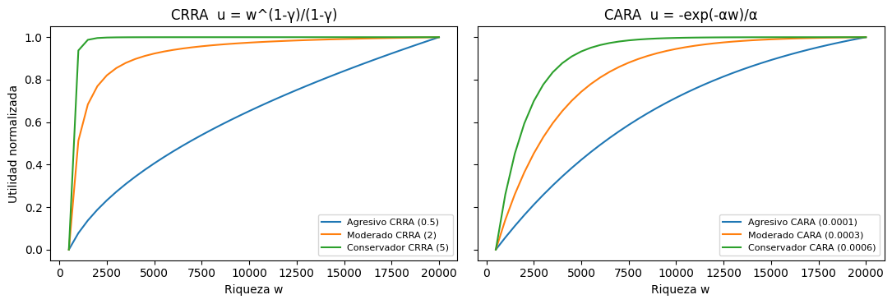
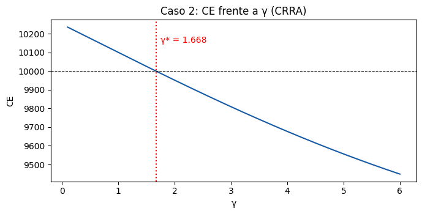
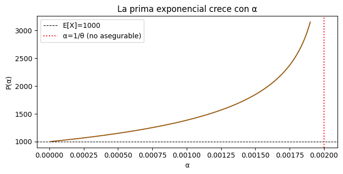
# =====================================================================
# Tema 1 - Teoria de la utilidad y decisiones bajo riesgo
# Ejercicio practico (taller) en R - Luiz Luzuriaga
# Master en Ciencias Actuariales y Financieras - Matematica Actuarial de la
# Estabilidad y Solvencia de la Actividad Aseguradora
# Contenido: (A) curvas CRRA/CARA, (B) Caso 2 por perfil (CE y prima),
# (C) umbrales de aceptacion, (D) Caso 1 zona de acuerdo,
# (E) Arrow-Pratt frente a la prima exacta.
# =====================================================================
suppressPackageStartupMessages({ library(ggplot2); library(tidyr) })
# ---- (A) Funciones de utilidad ---------------------------------------
u_crra <- function(w, gamma) if (gamma == 1) log(w) else w^(1 - gamma) / (1 - gamma)
u_cara <- function(w, alpha) -exp(-alpha * w) / alpha
perfiles <- data.frame(
perfil = c("Agresivo CRRA", "Moderado CRRA", "Conservador CRRA",
"Agresivo CARA", "Moderado CARA", "Conservador CARA"),
tipo = c("CRRA", "CRRA", "CRRA", "CARA", "CARA", "CARA"),
param = c(0.5, 2, 5, 1e-4, 3e-4, 6e-4),
stringsAsFactors = FALSE
)
w_grid <- seq(500, 20000, by = 500)
curvas <- sapply(seq_len(nrow(perfiles)), function(i)
if (perfiles$tipo[i] == "CRRA") u_crra(w_grid, perfiles$param[i]) else u_cara(w_grid, perfiles$param[i]))
colnames(curvas) <- perfiles$perfil
# ---- (B) Caso 2: CE y prima de riesgo por perfil ---------------------
w <- 10000; Xup <- 2000; Xdown <- -1500; p <- 0.5
EW <- w + p * Xup + (1 - p) * Xdown # 10.250
ce_prima <- function(tipo, param, w = 10000, up = 2000, dn = -1500, p = 0.5) {
W <- c(w + up, w + dn); pr <- c(p, 1 - p)
CE <- if (tipo == "CRRA") {
if (param == 1) exp(sum(pr * log(W))) else (sum(pr * W^(1 - param)))^(1 / (1 - param))
} else -log(sum(pr * exp(-param * W))) / param
EWl <- sum(pr * W)
data.frame(CE = CE, EW = EWl, prima = EWl - CE, acepta = CE > w)
}
resultado <- cbind(perfil = perfiles$perfil, do.call(rbind, Map(ce_prima, perfiles$tipo, perfiles$param)))
rownames(resultado) <- NULL
cat("\n== Caso 2: equivalente cierto y prima de riesgo por perfil ==\n")
print(resultado, digits = 7)
# ---- (C) Umbrales: aversion maxima que aun acepta la posicion --------
g_star <- uniroot(function(g) ce_prima("CRRA", g)$CE - w, c(1.01, 6), tol = 1e-12)$root
a_star <- uniroot(function(a) ce_prima("CARA", a)$CE - w, c(1e-6, 1e-3), tol = 1e-14)$root
cat(sprintf("\nUmbral CRRA gamma* = %.4f | Umbral CARA alpha* = %.6f\n", g_star, a_star))
cat(sprintf("Caso log (gamma = 1): CE = %.1f, prima = %.1f\n",
ce_prima("CRRA", 1)$CE, ce_prima("CRRA", 1)$prima))
# ---- (D) Caso 1: zona de acuerdo cedente-reasegurador ----------------
mgf_gamma <- function(alpha, n = 2, theta = 500) (1 - theta * alpha)^(-n) # valida si alpha < 1/theta
prima_exp <- function(alpha, n = 2, theta = 500) log(mgf_gamma(alpha, n, theta)) / alpha
P_mas <- prima_exp(0.0006) # cedente
P_menos <- prima_exp(0.0003) # reasegurador
cat(sprintf("\nCaso 1: P+ = %.2f | P- = %.2f | anchura = %.2f\n", P_mas, P_menos, P_mas - P_menos))
cat(sprintf("Recargo cedente = %.1f %% | recargo reasegurador = %.1f %% sobre E[X]=1000\n",
100 * (P_mas / 1000 - 1), 100 * (P_menos / 1000 - 1)))
# Limite alpha_R -> 0: la prima minima tiende a la prima pura E[X] = n*theta
cat(sprintf("Limite alpha_R -> 0: P- -> %.2f ; anchura maxima = %.2f\n", prima_exp(1e-9), P_mas - prima_exp(1e-9)))
# ---- (E) Arrow-Pratt: pi ~ 1/2 r(E[W]) Var[X] frente a la prima exacta
varX <- p * (1 - p) * (Xup - Xdown)^2
r_loc <- ifelse(perfiles$tipo == "CRRA", perfiles$param / EW, perfiles$param)
resultado$pi_AP <- 0.5 * r_loc * varX
resultado$error_AP_pct <- 100 * (resultado$pi_AP / resultado$prima - 1)
cat("\n== Aproximacion de Arrow-Pratt frente a la prima exacta ==\n")
print(resultado[, c("perfil", "prima", "pi_AP", "error_AP_pct")], digits = 5)
# ---- Graficos --------------------------------------------------------
norm_minmax <- function(x) (x - min(x)) / (max(x) - min(x))
df <- data.frame(w = w_grid, apply(curvas, 2, norm_minmax), check.names = FALSE)
df <- pivot_longer(df, -w, names_to = "perfil", values_to = "u")
df$familia <- ifelse(grepl("CRRA", df$perfil), "CRRA", "CARA")
g1 <- ggplot(df, aes(w, u, color = perfil)) + geom_line(linewidth = 1) +
facet_wrap(~familia) + labs(title = "Curvas de utilidad normalizadas por perfil", x = "Riqueza (w)", y = "u(w) normalizada") +
theme_minimal(base_size = 12)
ggsave("t1_R_curvas.png", g1, width = 9, height = 4, dpi = 130)
grid_g <- seq(0.1, 6, length.out = 300)
dfg <- data.frame(gamma = grid_g, CE = sapply(grid_g, function(g) ce_prima("CRRA", g)$CE))
g2 <- ggplot(dfg, aes(gamma, CE)) + geom_line(linewidth = 1, color = "#1559a6") +
geom_hline(yintercept = w, linetype = "dashed") + geom_vline(xintercept = g_star, linetype = "dotted") +
annotate("text", x = g_star + 0.1, y = 10150, hjust = 0, label = sprintf("gamma* = %.3f", g_star)) +
labs(title = "Caso 2: equivalente cierto frente a gamma (CRRA)", x = "gamma", y = "CE") + theme_minimal(base_size = 12)
ggsave("t1_R_umbral.png", g2, width = 7, height = 4, dpi = 130)
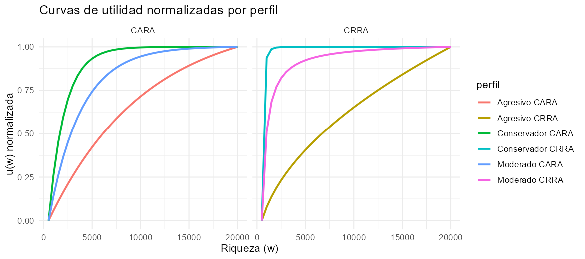
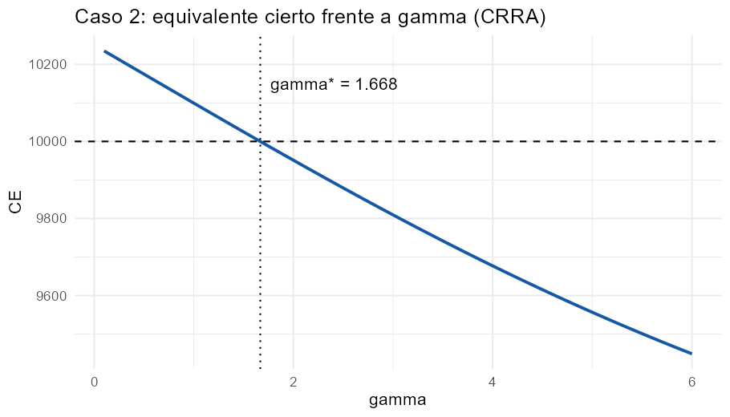
El taller de Excel pide calcular, para una cartera de 8 pólizas de vida, esperanza, varianza, asimetría y el capital al 99,5 % con Normal, Gamma trasladada y Normal Power. Aquí se hace lo mismo en Excel, Python y R y se amplía: se añade la distribución exacta (convolución) y Monte Carlo (100.000 escenarios) para los Casos 1 y 2, el ejemplo de 3 pólizas y un estudio de cuándo converge la Normal.
| Cartera | Pólizas | E(S) | SD | γ | Normal | Gamma tras. | Normal Power | Exacto | Monte Carlo |
|---|---|---|---|---|---|---|---|---|---|
| 8 pólizas (taller) | 8 | 5.840 | 36.194 | 6,953 | 99.071 | 238.949 | 335.411 | 300.000 | — |
| Caso 1 · Vida | 1.000 | 610.000 | 342.354 | 0,627 | 1.491.844 | 1.690.793 | 1.693.480 | 1.700.000 | 1.650.000 |
| Caso 2 · Accidentes | 350 | 84.500 | 21.565 | 0,295 | 140.049 | 146.003 | 146.028 | — | 145.107 (Py) · 146.038 (R) |
| Ejemplo 3 pólizas | 3 | 10.000 | 41.280 | 4,152 | 116.329 | 240.076 | 277.284 | 200.000 | — |
VaR 99,5 % en euros. Los valores de la diapositiva (116.336 y 277.316 en el ejemplo de 3 pólizas; 1.491.780 en el Caso 1) difieren de estos en la tercera cifra porque usan \(z=2{,}576\) redondeado; aquí \(z=2{,}5758\). La rejilla exacta de la cartera de 8 pólizas es de 10.000 € y la del Caso 1 de 50.000 €, por lo que el exacto y la simulación caen en escalones contiguos. La fila de Monte Carlo de la diapositiva (≈1.486.900) no es reproducible (queda por debajo del Normal, y la diapositiva dice lo contrario).
Lectura. En carteras pequeñas y asimétricas la Normal se queda corta (−12 % en el Caso 1, −67 % en la de 8 pólizas) y las correcciones de tres momentos recuperan casi todo, salvo cuando \(S\) es muy discreta (8 y 3 pólizas), donde ninguna aproximación continua es fiable y hay que usar la distribución exacta. En el Caso 2 (severidad uniforme y 350 pólizas) las tres aproximaciones son parecidas. La Normal solo se justifica con muchas pólizas y baja asimetría, bajo independencia.
Sin código visible: se descarga el libro con fórmulas vivas.
Siete hojas con fórmulas vivas: Datos (nivel \(p\) y \(z_p\)), Cartera8 (taller: \(E\), \(\mathrm{Var}\), \(\mu_3\), \(\gamma\), Normal, Gamma trasladada con GAMMAINV, Normal Power y comparación con gráfico), Exacta8 (convolución recursiva en 130 filas × 8 columnas y VaR exacto con COUNTIF), Caso1_Vida y Caso2_Accidentes (momentos por grupo, aproximaciones y aportación de cada grupo a la varianza), Ejemplo3 y Escala (error frente al tamaño). Los valores exactos y de Monte Carlo de los Casos 1 y 2 vienen de Python/R y están en azul. Las 1.710 fórmulas se verificaron contra Python.
# %% [markdown]
# # Tema 2 · Modelo individual del coste total de siniestralidad — Ejercicio práctico (Python)
# **Luiz Luzuriaga** · Máster en Ciencias Actuariales y Financieras · Matemática Actuarial de la Estabilidad y Solvencia
#
# Contenido: (A) cartera de 8 pólizas del taller de Excel, (B) Caso 1 (Vida, 1.000 pólizas), (C) Caso 2 (Accidentes, severidad uniforme),
# (D) ejemplo de 3 pólizas, (E) cuándo funciona la Normal: la misma cartera a escala creciente.
# Se compara siempre **Normal**, **Gamma trasladada** y **Normal Power** con la distribución **exacta** (convolución) y con **Monte Carlo**.
# %%
import numpy as np, pandas as pd, matplotlib.pyplot as plt
from scipy import stats
from scipy.signal import fftconvolve
P_NIVEL = 0.995
Z = stats.norm.ppf(P_NIVEL)
def momentos_degenerada(n, q, b):
"""Momentos de S con severidad fija b: n pólizas iguales por grupo (modelo individual)."""
n, q, b = map(lambda x: np.asarray(x, float), (n, q, b))
E = n*q*b; V = n*q*(1-q)*b**2; m3 = n*b**3*q*(1-q)*(1-2*q)
return E, V, m3
def aproximaciones(E, V, m3, p=P_NIVEL):
sd = np.sqrt(V); g = m3/sd**3; z = stats.norm.ppf(p)
a, beta, k = 4/g**2, 2/(sd*g), E - 2*sd/g # Gamma trasladada: S ≈ k + Γ(a, tasa=beta)
return dict(SD=sd, asimetria=g, Normal=E + z*sd,
Gamma_tras=k + stats.gamma.ppf(p, a, scale=1/beta),
Normal_Power=E + sd*(z + g/6*(z**2 - 1)), alpha=a, beta=beta, k=k)
def pmf_exacta(n, q, b, unit):
"""Distribución exacta de S = Σ b_g·Bin(n_g,q_g) por convolución sobre la rejilla `unit`."""
P = np.ones(1)
for ng, qg, bg in zip(n, q, b):
u = int(round(bg/unit)); pm = stats.binom.pmf(np.arange(int(ng)+1), int(ng), qg)
arr = np.zeros(int(ng)*u + 1); arr[::u] = pm; P = fftconvolve(P, arr); P = np.clip(P, 0, None)
return P/P.sum()
def var_exacto(P, unit, p=P_NIVEL):
return unit*int(np.searchsorted(np.cumsum(P), p))
# %% [markdown]
# ## (A) Cartera de 8 pólizas de vida (taller de Excel)
# Severidad degenerada: $X_i=I_i\,b_i$ con $I_i\sim\text{Bernoulli}(q_i)$. Por póliza:
# $E(X_i)=q_ib_i$, $\mathrm{Var}(X_i)=q_i(1-q_i)b_i^2$, $\mu_3(X_i)=b_i^3q_i(1-q_i)(1-2q_i)$; al ser independientes, **se suman** esperanzas, varianzas y terceros momentos centrales.
# %%
pol = pd.DataFrame({"q": [.0015, .002, .0025, .003, .004, .005, .006, .008],
"b": [120e3, 150e3, 100e3, 200e3, 80e3, 250e3, 90e3, 300e3]}, index=range(1, 9))
pol["E"], pol["Var"], pol["mu3"] = momentos_degenerada(1, pol.q, pol.b)
tot = pol[["E", "Var", "mu3"]].sum()
print(pol.assign(**{"E": pol.E.round(1), "Var": pol.Var.round(0), "mu3": pol.mu3.round(0)}).to_string())
print("\nTotales:", tot.round(1).to_dict())
ap8 = aproximaciones(tot.E, tot.Var, tot.mu3)
P8 = pmf_exacta(np.ones(8), pol.q, pol.b, 10_000); VaR8 = var_exacto(P8, 10_000)
res8 = pd.DataFrame({"VaR 99,5 %": [ap8["Normal"], ap8["Gamma_tras"], ap8["Normal_Power"], VaR8]},
index=["Normal (TCL)", "Gamma trasladada", "Normal Power", "Exacta (convolución)"])
res8["Capital = VaR − E(S)"] = res8["VaR 99,5 %"] - tot.E
print(f"\nSD(S) = {ap8['SD']:.1f} asimetría = {ap8['asimetria']:.4f} Gamma: α = {ap8['alpha']:.4f}, β = {ap8['beta']:.3e}, k = {ap8['k']:.1f}")
res8.round(1)
# %% [markdown]
# **Lectura.** Con 8 pólizas y asimetría ≈ 7 la Normal ni se acerca a la cola: el capital que da es una tercera parte del exacto.
# La Gamma trasladada (239.000 €) queda por debajo y la Normal Power (335.000 €) por encima del valor exacto (300.000 €): son aproximaciones continuas de una variable que solo toma valores en una rejilla
# de 10.000 € y cuyo percentil 99,5 % cae en un **salto** (la probabilidad de 1 siniestro grande es relevante; la de 2 o más, mínima).
# %% [markdown]
# ## (B) Caso 1 — cartera de Vida de 1.000 pólizas (4 grupos homogéneos)
# Dentro de un grupo, $\sum b\,I_j=b\cdot\text{Bin}(n,q)$. Se calcula (i) la Normal del enunciado, (ii) Gamma/NP, (iii) la distribución **exacta** por convolución de las 4 binomiales y (iv) **Monte Carlo** (100.000 escenarios, semilla 123).
# %%
g1 = pd.DataFrame({"grupo": list("ABCD"), "n": [500, 300, 150, 50], "q": [.002, .004, .006, .010], "b": [1e5, 1.5e5, 2e5, 3e5]}).set_index("grupo")
g1["E"], g1["Var"], g1["mu3"] = momentos_degenerada(g1.n, g1.q, g1.b)
g1["%Var"] = 100*g1.Var/g1.Var.sum(); g1["%E"] = 100*g1.E/g1.E.sum()
t1 = g1[["E", "Var", "mu3"]].sum(); ap1 = aproximaciones(t1.E, t1.Var, t1.mu3)
print(g1.round(1).to_string()); print("\nE(S) = %.0f Var(S) = %.0f SD = %.0f asimetría = %.4f" % (t1.E, t1.Var, ap1["SD"], ap1["asimetria"]))
P1 = pmf_exacta(g1.n, g1.q, g1.b, 50_000); VaR1 = var_exacto(P1, 50_000)
rng = np.random.default_rng(123); n_sim = 100_000
S = sum(rng.binomial(int(n), q, n_sim)*b for n, q, b in zip(g1.n, g1.q, g1.b))
mc = dict(media=S.mean(), sd=S.std(ddof=1), var995=np.quantile(S, P_NIVEL))
# error típico del cuantil MC por bootstrap de las 100.000 simulaciones
ee = np.std([np.quantile(rng.choice(S, n_sim), P_NIVEL) for _ in range(200)])
res1 = pd.DataFrame({"VaR 99,5 %": [ap1["Normal"], ap1["Gamma_tras"], ap1["Normal_Power"], VaR1, mc["var995"]]},
index=["Normal (enunciado)", "Gamma trasladada", "Normal Power", "Exacta (convolución)", "Monte Carlo (100.000)"])
res1["Capital = VaR − E(S)"] = res1["VaR 99,5 %"] - t1.E; res1["Capital / E(S) %"] = 100*res1["Capital = VaR − E(S)"]/t1.E
print(f"\nMonte Carlo: media {mc['media']:.0f}, SD {mc['sd']:.0f}; error típico del VaR MC ≈ {ee:.0f}")
res1.round(1)
# %% [markdown]
# **Lectura.** La Normal da ≈ 1,49 M€ (capital ≈ 0,88 M€, el 145 % de la prima de riesgo), pero la distribución exacta y la simulación sitúan el percentil 99,5 % en **≈ 1,65–1,70 M€** (la simulación cae en uno de los dos escalones contiguos de la rejilla de 50.000 €; su error típico es ≈ 21.000 €).
# Con asimetría 0,63 la cola derecha pesa más de lo que supone la simetría de la Normal; la Normal Power y la Gamma trasladada recuperan casi todo ese déficit.
# El grupo D (50 pólizas, el 5 % del número de pólizas y el 24,6 % de la prima esperada) aporta el 38 % de la varianza: la severidad entra al cuadrado.
# %%
fig, ax = plt.subplots(1, 2, figsize=(12, 3.8))
x = np.arange(len(P1))*50_000/1e6
ax[0].bar(x, P1, width=0.045, color="#1559a6"); ax[0].set_xlim(0, 2.6)
for nombre, v, c, ls in [("Normal", ap1["Normal"], "#b3261e", "--"), ("Exacto", VaR1, "k", "-"), ("E(S)", t1.E, "#57667a", ":")]:
ax[0].axvline(v/1e6, color=c, ls=ls, label=f"{nombre}: {v/1e6:.2f} M€")
ax[0].set_title("Distribución exacta de S (Caso 1)"); ax[0].set_xlabel("S (millones €)"); ax[0].legend(fontsize=8)
ax[1].hist(S/1e6, bins=60, color="#1b2a4a", edgecolor="white", density=True)
for nombre, v, c, ls in [("VaR MC", mc["var995"], "#9a5b12", "-"), ("VaR Normal", ap1["Normal"], "#b3261e", "--")]:
ax[1].axvline(v/1e6, color=c, ls=ls, lw=2, label=f"{nombre}: {v/1e6:.2f} M€")
ax[1].set_title("Monte Carlo (100.000 escenarios)"); ax[1].set_xlabel("S (millones €)"); ax[1].legend(fontsize=8)
plt.tight_layout(); plt.show()
# %% [markdown]
# ## (C) Caso 2 — Accidentes: severidad $B_i\sim U(0,M_i)$
# Ahora $\mu_i=M_i/2$ y $\sigma_i^2=M_i^2/12$. Para $X=I\,B$ los momentos crudos son $E[X^k]=q\,M^k/(k+1)$, de donde
# $E(X)=q\mu$, $\mathrm{Var}(X)=q\sigma^2+q(1-q)\mu^2$ y $\mu_3(X)=E[X^3]-3E[X]E[X^2]+2E[X]^3$.
# %%
g2 = pd.DataFrame({"seg": [1, 2, 3], "n": [100, 200, 50], "q": [.05, .06, .08], "M": [5e3, 8e3, 12e3]}).set_index("seg")
m1, m2, m3c = g2.q*g2.M/2, g2.q*g2.M**2/3, g2.q*g2.M**3/4 # E[X], E[X²], E[X³] por póliza
g2["E"] = g2.n*m1; g2["Var"] = g2.n*(m2 - m1**2); g2["mu3"] = g2.n*(m3c - 3*m1*m2 + 2*m1**3)
t2 = g2[["E", "Var", "mu3"]].sum(); ap2 = aproximaciones(t2.E, t2.Var, t2.mu3)
rng = np.random.default_rng(123)
S2 = np.zeros(n_sim)
for n, q, M in zip(g2.n, g2.q, g2.M):
k = rng.binomial(int(n), q, n_sim) # nº de siniestros del segmento
S2 += np.array([rng.uniform(0, M, kk).sum() if kk else 0.0 for kk in k])
res2 = pd.DataFrame({"VaR 99,5 %": [ap2["Normal"], ap2["Gamma_tras"], ap2["Normal_Power"], np.quantile(S2, P_NIVEL)]},
index=["Normal (enunciado)", "Gamma trasladada", "Normal Power", "Monte Carlo (100.000)"])
res2["VaR / E(S)"] = res2["VaR 99,5 %"]/t2.E
print(g2.round(1).to_string()); print("\nE(S) = %.0f Var(S) = %.0f SD = %.0f asimetría = %.4f" % (t2.E, t2.Var, ap2["SD"], ap2["asimetria"]))
res2.round(2)
# %% [markdown]
# **Lectura.** $E(S)=84.500$, $\mathrm{Var}(S)=465{,}06\cdot10^6$, $VaR_{99,5\%}^{Normal}\approx140.054$ (VaR/E ≈ 1,66). Aquí la asimetría es mucho menor (≈ 0,3) porque la severidad uniforme está acotada y repartida;
# la Normal queda un 3,5 % por debajo de la simulación (140.049 frente a 145.107) y Gamma/NP (146.003 / 146.028) la reproducen, a diferencia del Caso 1.
# %% [markdown]
# ## (D) Ejemplo de 3 pólizas: la Normal infravalora, pero Gamma y NP sobrestiman
# $q=(0{,}01;0{,}02;0{,}03)$, $b=(100.000;150.000;200.000)$.
# %%
q3, b3 = np.array([.01, .02, .03]), np.array([1e5, 1.5e5, 2e5])
E3, V3, m33 = momentos_degenerada(1, q3, b3); E3, V3, m33 = E3.sum(), V3.sum(), m33.sum()
P3 = pmf_exacta(np.ones(3), q3, b3, 50_000)
tab = []
for p in (.90, .95, .995):
a = aproximaciones(E3, V3, m33, p); tab.append([p, a["Normal"], a["Gamma_tras"], a["Normal_Power"], var_exacto(P3, 50_000, p)])
d3 = pd.DataFrame(tab, columns=["p", "Normal", "Gamma tras.", "Normal Power", "Exacto"]).set_index("p")
print(f"E(S) = {E3:.0f} Var(S) = {V3:.0f} SD = {V3**.5:.0f} asimetría = {m33/V3**1.5:.3f} P(S=0) = {P3[0]:.4f}")
d3.round(0)
# %% [markdown]
# **Lectura.** Con 3 pólizas $S$ es una variable de 8 valores; $P(S=0)=0{,}94$. El percentil 99,5 % exacto es 200.000 €, la Normal da 116.329 € y la Gamma/NP 240.076 / 277.284 €.
# Ninguna aproximación continua es fiable: para carteras diminutas se usa la distribución exacta (convolución, De Pril).
# %% [markdown]
# ## (E) ¿Cuándo funciona la Normal? La cartera del Caso 1 a escala $k$
# Si se multiplica el número de pólizas de cada grupo por $k$, $E$ y $\mathrm{Var}$ crecen como $k$ y la asimetría decrece como $1/\sqrt{k}$ (Lindeberg/TCL).
# %%
filas = []
for k in (1, 2, 5, 10, 25, 50):
nk = g1.n*k; E, V, m3 = momentos_degenerada(nk, g1.q, g1.b); E, V, m3 = E.sum(), V.sum(), m3.sum()
a = aproximaciones(E, V, m3); v = var_exacto(pmf_exacta(nk, g1.q, g1.b, 50_000), 50_000)
filas.append([k, int(nk.sum()), a["asimetria"], (a["Normal"]/v - 1)*100, (a["Normal_Power"]/v - 1)*100, (a["Gamma_tras"]/v - 1)*100])
esc = pd.DataFrame(filas, columns=["k", "nº pólizas", "asimetría", "error Normal %", "error NP %", "error Gamma tras. %"]).set_index("k")
esc.round(2)
# %%
plt.figure(figsize=(6.6, 3.6))
plt.plot(esc["nº pólizas"], esc["error Normal %"], "o-", color="#b3261e", label="Normal")
plt.plot(esc["nº pólizas"], esc["error NP %"], "s-", color="#1559a6", label="Normal Power")
plt.plot(esc["nº pólizas"], esc["error Gamma tras. %"], "^-", color="#9a5b12", label="Gamma trasladada")
plt.axhline(0, color="k", lw=.8); plt.xscale("log"); plt.xlabel("nº de pólizas (escala log)"); plt.ylabel("error del VaR 99,5 % frente al exacto (%)")
plt.legend(); plt.title("El error de la Normal cae lentamente con el tamaño"); plt.tight_layout(); plt.show()
# %% [markdown]
# **Lectura.** La Normal subestima el VaR 99,5 % en un 12,2 % con 1.000 pólizas, un 2,3 % con 10.000 y aún un 0,6 % con 50.000: converge despacio porque la asimetría solo cae como $1/\sqrt{n}$.
# Las correcciones de tres momentos dejan el error por debajo del 1 % desde el primer tamaño. Todo ello bajo el supuesto de **independencia**: ninguna aproximación ve el riesgo de acumulación.
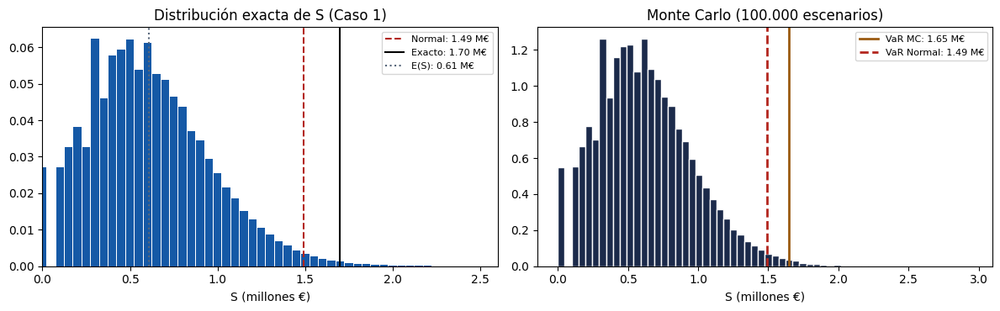
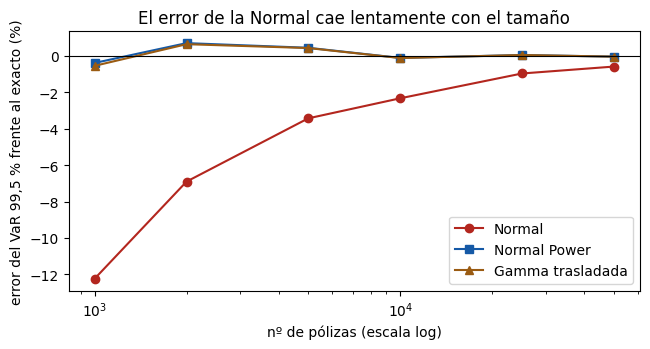
# =====================================================================
# Tema 2 - Modelo individual del coste total de siniestralidad
# Ejercicio practico en R (base R + ggplot2) - Luiz Luzuriaga
# Master en Ciencias Actuariales y Financieras - Matematica Actuarial de la
# Estabilidad y Solvencia de la Actividad Aseguradora
# (A) 8 polizas, (B) Caso 1 Vida, (C) Caso 2 Accidentes, (D) 3 polizas,
# (E) la Normal frente a la escala de la cartera.
# Nota: la diapositiva usa library(distr); aqui se usa rbinom() de base R,
# que genera exactamente la misma Binomial(n, q) sin depender del paquete.
# =====================================================================
suppressPackageStartupMessages(library(ggplot2))
P_NIVEL <- 0.995; Z <- qnorm(P_NIVEL)
# ---- funciones --------------------------------------------------------
momentos_degenerada <- function(n, q, b) # severidad fija b, n polizas iguales
list(E = n * q * b, V = n * q * (1 - q) * b^2, m3 = n * b^3 * q * (1 - q) * (1 - 2 * q))
aproximaciones <- function(E, V, m3, p = P_NIVEL) {
E <- unname(E); V <- unname(V); m3 <- unname(m3) # quita nombres para que c() devuelva etiquetas limpias
sd <- sqrt(V); g <- m3 / sd^3; z <- qnorm(p)
a <- 4 / g^2; beta <- 2 / (sd * g); k <- E - 2 * sd / g # Gamma trasladada: S ~ k + Gamma(a, tasa = beta)
c(SD = sd, asimetria = g, Normal = E + z * sd,
Gamma_tras = k + qgamma(p, shape = a, rate = beta),
Normal_Power = E + sd * (z + g / 6 * (z^2 - 1)), alpha = a, beta = beta, k = k)
}
conv <- function(a, b) pmax(convolve(a, rev(b), type = "open"), 0)
pmf_exacta <- function(n, q, b, unit) { # convolucion de b_g * Bin(n_g, q_g) en rejilla `unit`
P <- 1
for (g in seq_along(n)) {
u <- round(b[g] / unit); pm <- dbinom(0:n[g], n[g], q[g])
arr <- numeric(n[g] * u + 1); arr[seq(1, length(arr), by = u)] <- pm
P <- conv(P, arr)
}
P / sum(P)
}
var_exacto <- function(P, unit, p = P_NIVEL) unit * (which(cumsum(P) >= p)[1] - 1)
# ---- (A) Cartera de 8 polizas -----------------------------------------
pol <- data.frame(q = c(.0015, .002, .0025, .003, .004, .005, .006, .008),
b = c(120e3, 150e3, 100e3, 200e3, 80e3, 250e3, 90e3, 300e3))
m <- momentos_degenerada(1, pol$q, pol$b); pol$E <- m$E; pol$Var <- m$V; pol$mu3 <- m$m3
cat("== (A) 8 polizas ==\n"); print(pol, digits = 10)
tot <- colSums(pol[, c("E", "Var", "mu3")]); print(tot)
ap8 <- aproximaciones(tot["E"], tot["Var"], tot["mu3"])
P8 <- pmf_exacta(rep(1, 8), pol$q, pol$b, 10000); VaR8 <- var_exacto(P8, 10000)
res8 <- data.frame(metodo = c("Normal (TCL)", "Gamma trasladada", "Normal Power", "Exacta (convolucion)"),
VaR995 = c(ap8["Normal"], ap8["Gamma_tras"], ap8["Normal_Power"], VaR8))
res8$capital <- res8$VaR995 - tot["E"]
cat(sprintf("\nSD = %.1f asimetria = %.4f alpha = %.4f beta = %.3e k = %.1f\n", ap8["SD"], ap8["asimetria"], ap8["alpha"], ap8["beta"], ap8["k"]))
print(res8, digits = 7)
# ---- (B) Caso 1: Vida, 1.000 polizas ----------------------------------
g1 <- data.frame(grupo = LETTERS[1:4], n = c(500, 300, 150, 50), q = c(.002, .004, .006, .010), b = c(1e5, 1.5e5, 2e5, 3e5))
m <- momentos_degenerada(g1$n, g1$q, g1$b); g1$E <- m$E; g1$Var <- m$V; g1$mu3 <- m$m3
g1$pctVar <- 100 * g1$Var / sum(g1$Var); g1$pctE <- 100 * g1$E / sum(g1$E)
cat("\n== (B) Caso 1 ==\n"); print(g1, digits = 8)
t1 <- colSums(g1[, c("E", "Var", "mu3")]); ap1 <- aproximaciones(t1["E"], t1["Var"], t1["mu3"])
P1 <- pmf_exacta(g1$n, g1$q, g1$b, 50000); VaR1 <- var_exacto(P1, 50000)
set.seed(123); n_sim <- 100000
S <- numeric(n_sim)
for (g in 1:nrow(g1)) S <- S + rbinom(n_sim, g1$n[g], g1$q[g]) * g1$b[g]
res1 <- data.frame(metodo = c("Normal (enunciado)", "Gamma trasladada", "Normal Power", "Exacta (convolucion)", "Monte Carlo (100.000)"),
VaR995 = c(ap1["Normal"], ap1["Gamma_tras"], ap1["Normal_Power"], VaR1, quantile(S, P_NIVEL, names = FALSE)))
res1$capital <- res1$VaR995 - t1["E"]; res1$capital_sobre_E_pct <- 100 * res1$capital / t1["E"]
cat(sprintf("\nE(S) = %.0f Var = %.0f SD = %.0f asimetria = %.4f\n", t1["E"], t1["Var"], ap1["SD"], ap1["asimetria"]))
cat(sprintf("Monte Carlo: media %.0f, SD %.0f\n", mean(S), sd(S))); print(res1, digits = 8)
# ---- (C) Caso 2: Accidentes, severidad Uniforme(0, M) -----------------
g2 <- data.frame(n = c(100, 200, 50), q = c(.05, .06, .08), M = c(5e3, 8e3, 12e3))
m1 <- g2$q * g2$M / 2; m2 <- g2$q * g2$M^2 / 3; m3c <- g2$q * g2$M^3 / 4
g2$E <- g2$n * m1; g2$Var <- g2$n * (m2 - m1^2); g2$mu3 <- g2$n * (m3c - 3 * m1 * m2 + 2 * m1^3)
t2 <- colSums(g2[, c("E", "Var", "mu3")]); ap2 <- aproximaciones(t2["E"], t2["Var"], t2["mu3"])
set.seed(123); S2 <- numeric(n_sim)
for (g in 1:nrow(g2)) {
k <- rbinom(n_sim, g2$n[g], g2$q[g])
S2 <- S2 + vapply(k, function(kk) if (kk > 0) sum(runif(kk, 0, g2$M[g])) else 0, numeric(1))
}
res2 <- data.frame(metodo = c("Normal (enunciado)", "Gamma trasladada", "Normal Power", "Monte Carlo (100.000)"),
VaR995 = c(ap2["Normal"], ap2["Gamma_tras"], ap2["Normal_Power"], quantile(S2, P_NIVEL, names = FALSE)))
res2$VaR_sobre_E <- res2$VaR995 / t2["E"]
cat("\n== (C) Caso 2 ==\n"); print(g2, digits = 10)
cat(sprintf("E(S) = %.0f Var = %.0f SD = %.0f asimetria = %.4f\n", t2["E"], t2["Var"], ap2["SD"], ap2["asimetria"])); print(res2, digits = 8)
# ---- (D) 3 polizas ------------------------------------------------------
q3 <- c(.01, .02, .03); b3 <- c(1e5, 1.5e5, 2e5); m <- momentos_degenerada(1, q3, b3)
E3 <- sum(m$E); V3 <- sum(m$V); m33 <- sum(m$m3); P3 <- pmf_exacta(rep(1, 3), q3, b3, 50000)
d3 <- do.call(rbind, lapply(c(.90, .95, .995), function(p) {
a <- aproximaciones(E3, V3, m33, p)
data.frame(p = p, Normal = a["Normal"], Gamma_tras = a["Gamma_tras"], Normal_Power = a["Normal_Power"], Exacto = var_exacto(P3, 50000, p))
}))
cat(sprintf("\n== (D) 3 polizas == E = %.0f Var = %.0f asimetria = %.3f P(S=0) = %.4f\n", E3, V3, m33 / V3^1.5, P3[1])); print(d3, digits = 7, row.names = FALSE)
# ---- (E) Escala de la cartera -------------------------------------------
esc <- do.call(rbind, lapply(c(1, 2, 5, 10, 25, 50), function(k) {
nk <- g1$n * k; mm <- momentos_degenerada(nk, g1$q, g1$b)
a <- aproximaciones(sum(mm$E), sum(mm$V), sum(mm$m3)); v <- var_exacto(pmf_exacta(nk, g1$q, g1$b, 50000), 50000)
data.frame(k = k, polizas = sum(nk), asimetria = a["asimetria"],
err_Normal = 100 * (a["Normal"] / v - 1), err_NP = 100 * (a["Normal_Power"] / v - 1), err_Gamma = 100 * (a["Gamma_tras"] / v - 1))
}))
cat("\n== (E) Error del VaR 99,5% frente al exacto segun el tamano (%) ==\n"); print(esc, digits = 4, row.names = FALSE)
# ---- Graficos -----------------------------------------------------------
dfx <- data.frame(S = (0:(length(P1) - 1)) * 50000 / 1e6, p = P1)
g_a <- ggplot(dfx, aes(S, p)) + geom_col(width = 0.045, fill = "#1559a6") + coord_cartesian(xlim = c(0, 2.6)) +
geom_vline(xintercept = ap1["Normal"] / 1e6, colour = "#b3261e", linetype = "dashed") +
geom_vline(xintercept = VaR1 / 1e6, colour = "black") +
labs(title = "Caso 1: distribucion exacta de S (negro = VaR exacto, rojo = Normal)", x = "S (millones EUR)", y = "probabilidad") + theme_minimal(base_size = 12)
ggsave("t2_R_exacta.png", g_a, width = 8, height = 3.8, dpi = 130)
g_b <- ggplot(data.frame(S = S / 1e6), aes(S)) + geom_histogram(bins = 60, fill = "#1b2a4a", colour = "white") +
geom_vline(xintercept = quantile(S, P_NIVEL) / 1e6, colour = "#9a5b12", linewidth = 1) +
geom_vline(xintercept = ap1["Normal"] / 1e6, colour = "#b3261e", linetype = "dashed", linewidth = 1) +
labs(title = "Monte Carlo (100.000): VaR simulado (ocre) frente a Normal (rojo)", x = "S (millones EUR)", y = "frecuencia") + theme_minimal(base_size = 12)
ggsave("t2_R_mc.png", g_b, width = 8, height = 3.8, dpi = 130)
g_c <- ggplot(esc, aes(polizas)) + geom_line(aes(y = err_Normal, colour = "Normal")) + geom_point(aes(y = err_Normal, colour = "Normal")) +
geom_line(aes(y = err_NP, colour = "Normal Power")) + geom_point(aes(y = err_NP, colour = "Normal Power")) +
geom_line(aes(y = err_Gamma, colour = "Gamma trasladada")) + geom_point(aes(y = err_Gamma, colour = "Gamma trasladada")) +
scale_x_log10() + geom_hline(yintercept = 0) + labs(x = "numero de polizas", y = "error VaR 99,5% (%)", colour = "", title = "El error de la Normal cae lentamente con el tamano") +
theme_minimal(base_size = 12)
ggsave("t2_R_escala.png", g_c, width = 7, height = 3.8, dpi = 130)
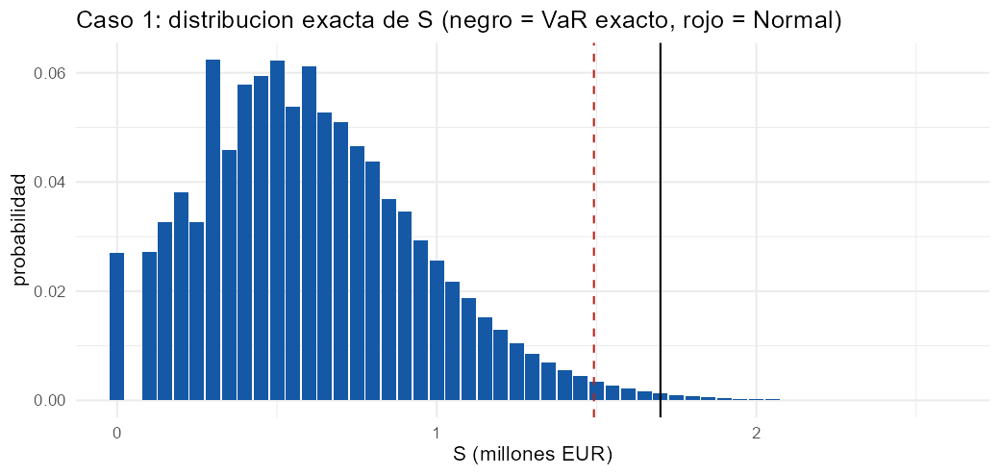
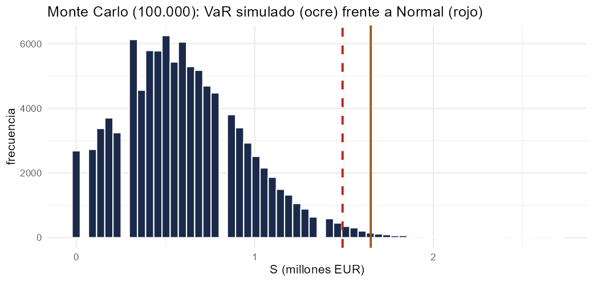
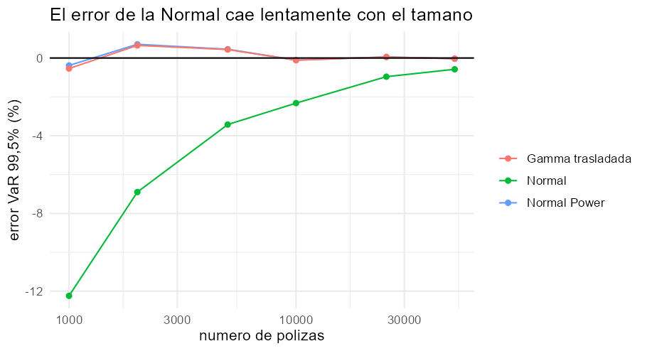
El taller de Excel pide la recursión de Panjer de uno de los cuatro segmentos de Auto y la agregación por aditividad del Poisson compuesto; el de R, el ajuste MLE de la severidad (Gamma frente a Pareto) y la agregación exacta por Panjer y FFT. Se resuelve todo en Excel, Python y R y se amplía con el Caso 2 de Hogar (Binomial Negativa–Pareto), un test de sobredispersión y un estudio de la cola al bajar \(\alpha\).
| Cartera | Método | E(S) | SD | VaR 99,5 % Normal | VaR 99,5 % Normal Power | VaR 99,5 % exacto |
|---|---|---|---|---|---|---|
| Ejemplo teórico (λ=5, Γ(2,300)) | Panjer = FFT | 3.000 | 1.643 | 7.232 | — | 8.290 |
| Caso 1 · Auto (Poisson 1.200, Γ(2,450)) | FFT | 1.080.000 | 38.184 | 1.178.355 | 1.180.045 | 1.180.040 |
| Caso 2 · Hogar (BN(50,3), Pareto(4,3.000)) | FFT = Panjer(BN) | 150.000 | 30.000 | 227.275 | 238.545 | 238.300 |
| Cuatro segmentos de Auto | FFT | 1.134.500 | 41.418 | 1.241.185 | 1.243.165 | 1.243.150 |
VaR en euros, con \(z=2{,}5758\). La diapositiva usa \(z=2{,}576\): 1.178.361 y 227.280. TVaR 99,5 % del Caso 2: 252.671. Las muestras aleatorias (MLE, Monte Carlo, test de sobredispersión) difieren entre Python y R porque sus generadores son distintos, y por eso las cifras de ajuste pueden variar ligeramente; los resultados analíticos y exactos coinciden en las tres herramientas. Con el ajuste MLE de cada muestra, el VaR exacto pasa de 1,18 M€ (parámetros teóricos) a 1,19 M€ (Python) y 1,11 M€ (R): esa es la incertidumbre de parámetros con 500 siniestros.
Lectura. Con 1.200 siniestros esperados y severidad ligera, la Normal es casi suficiente (diferencia de 1.700 € sobre 1,18 M€). Con frecuencia BN y Pareto, la Normal se queda un 4,6 % corta y la Normal Power funciona porque \(\alpha=4>3\). Al engordar la cola el capital exacto se dispara y la Normal ni siquiera existe: es el momento de pasar a Panjer/FFT, EVT y reaseguro de cola. Python, R y Excel coinciden en todo lo analítico.
Sin código visible: se descarga el libro con fórmulas vivas.
Cinco hojas con fórmulas vivas: Caso1_Auto y Caso2_Hogar (momentos de frecuencia y severidad, \(\mathbb{E}S\), \(\mathrm{Var}S\), \(\mu_3(S)\), asimetría, VaR Normal y Normal Power con las fórmulas de Wald y de cumulantes), Segmentos (taller: los cuatro segmentos Poisson–Gamma, suma de medias y varianzas, severidad mezcla y comprobación \(\mathrm{Var}=\lambda E[X^2]\)) y Panjer: la recursión completa con 1.001 filas (\(h=10\), hasta 10.000 €), con GAMMADIST para discretizar, la columna auxiliar «\(g_k\) invertida» para alinear \(\sum jf_jg_{k-j}\) con SUMPRODUCT, \(F_S\), \(\mathbb{E}S\), \(\mathrm{Var}S\), VaR 90/95/99,5 % y gráficos. Los valores exactos de los Casos 1 y 2 vienen de Python/R (en azul). Las 7.113 fórmulas se verificaron contra Python.
# %% [markdown]
# # Tema 3 · Modelo colectivo de riesgo — Ejercicio práctico (Python)
# **Luiz Luzuriaga** · Máster en Ciencias Actuariales y Financieras · Matemática Actuarial de la Estabilidad y Solvencia
#
# Contenido: (A) ejemplo de Panjer de la teoría (λ=5, Gamma(2,300)), (B) Caso 1 Auto (Poisson–Gamma, λ=1.200),
# (C) ajuste MLE de severidad (Gamma frente a Pareto), (D) Caso 2 Hogar (Binomial Negativa–Pareto),
# (E) los cuatro segmentos del taller de Excel (aditividad del Poisson compuesto), (F) test de sobredispersión.
# Se calcula siempre la distribución **exacta** (Panjer/FFT) y se compara con la aproximación **Normal** y **Normal Power**.
# %%
import numpy as np, pandas as pd, matplotlib.pyplot as plt
from scipy import stats, optimize
Z = stats.norm.ppf(0.995)
def discretizar(cdf, h, K):
"""Discretización central: f0=F(h/2), fj=F((j+½)h)−F((j−½)h); se renormaliza (como en la diapositiva)."""
j = np.arange(K); f = np.empty(K)
f[0] = cdf(h/2); f[1:] = cdf((j[1:] + .5)*h) - cdf((j[1:] - .5)*h)
return f/f.sum()
def panjer_poisson(f, lam, K):
"""Recursión de Panjer, clase (a,b,0) con a=0, b=λ: g_k = (λ/k) Σ_{j=1}^{k} j f_j g_{k-j}."""
g = np.zeros(K + 1); g[0] = np.exp(-lam*(1 - f[0])); jv = np.arange(len(f))*f
for k in range(1, K + 1):
m = min(k, len(f) - 1); j = np.arange(1, m + 1)
g[k] = lam/k*np.sum(jv[j]*g[k - j])
return g
def panjer_nb(f, r, beta, K):
"""Panjer para Binomial Negativa: a=β/(1+β), b=(r−1)β/(1+β); g0 = P_N(f0) = (1−β(f0−1))^−r."""
a, b = beta/(1 + beta), (r - 1)*beta/(1 + beta)
g = np.zeros(K + 1); g[0] = (1 - beta*(f[0] - 1))**(-r)
for k in range(1, K + 1):
m = min(k, len(f) - 1); j = np.arange(1, m + 1)
g[k] = (1/(1 - a*f[0]))*np.sum((a + b*j/k)*f[j]*g[k - j])
return g
def agg_fft(f, M, fgp):
"""g = IFFT( P_N(FFT(f)) ) con relleno de ceros hasta M puntos (evita el aliasing)."""
fp = np.zeros(M); fp[:len(f)] = f
return np.clip(np.fft.ifft(fgp(np.fft.fft(fp))).real, 0, None)
def cuantiles(g, h, ps):
F = np.cumsum(g); return {p: h*int(np.searchsorted(F, p)) for p in ps}
def tvar(g, h, p):
s = h*np.arange(len(g)); F = np.cumsum(g); v = np.searchsorted(F, p)
# E[S | S >= VaR] con el reparto proporcional de la masa en el escalón del VaR
exceso = F[v] - p
return (np.sum(s[v+1:]*g[v+1:]) + s[v]*exceso)/(1 - p)
# %% [markdown]
# ## (A) Ejemplo de Panjer de las diapositivas
# $N\sim\text{Poisson}(5)$, $X\sim\Gamma(\alpha=2,\theta=300)$, malla $h=10$ €. Se aplica la recursión (clase $(a,b,0)$) y la FFT, y se comparan con los controles teóricos.
# %%
lam, alp, th, h = 5, 2, 300, 10
K = 1500
f = discretizar(lambda x: stats.gamma.cdf(x, alp, scale=th), h, 2048) # m = 2048 puntos: soporte 0..20.470 €
g = panjer_poisson(f, lam, K)
Eth, Vth = lam*alp*th, lam*alp*th**2*(1 + alp)
s = h*np.arange(K + 1)
print(f"f0 = {f[0]:.9f} g0 = {g[0]:.9f} (diapositiva: 0,000137355 y 0,006742576)")
print(f"masa hasta {h*K} €: {g.sum():.9f}")
print(f"E[S] Panjer = {np.sum(s*g):.4f} teórico = {Eth}")
print(f"Var[S] Panjer = {np.sum(s**2*g) - np.sum(s*g)**2:.2f} teórico = {Vth}")
q = cuantiles(g, h, (.5, .9, .95, .99, .995)); print("Cuantiles Panjer:", q)
gf = agg_fft(f, 2048, lambda z: np.exp(lam*(z - 1)))
print("FFT: máx |g_FFT − g_Panjer| =", np.max(np.abs(gf[:K+1] - g)), " cuantiles:", cuantiles(gf, h, (.5, .9, .95, .99, .995)))
# %% [markdown]
# **Lectura.** La recursión y la FFT dan la misma distribución (discrepancia ~10⁻¹²) y reproducen la diapositiva: VaR 99,5 % = **8.290 €**. $g_0$ es algo mayor que $e^{-5}$
# porque los siniestros inferiores a 5 € se redondean a cero.
# %% [markdown]
# ## (B) Caso 1 — Auto: Poisson(1.200) y Gamma(2, 450)
# $E(S)=1.080.000$, $\mathrm{Var}(S)=\lambda\alpha\theta^2(1+\alpha)=1{,}458\cdot10^9$. Con $\lambda=1.200$ la recursión directa desborda ($e^{-1200}=0$ en coma flotante); la FFT no tiene ese problema.
# %%
lam1, a1, t1, h1 = 1200, 2, 450, 10
M = 2**18
f1 = discretizar(lambda x: stats.gamma.cdf(x, a1, scale=t1), h1, 20000)
g1 = agg_fft(f1, M, lambda z: np.exp(lam1*(z - 1)))
E1, V1 = lam1*a1*t1, lam1*a1*t1**2*(1 + a1)
m3 = lam1*a1*(a1 + 1)*(a1 + 2)*t1**3 # μ3(S) = λ·E[X³] (Poisson compuesto)
sd1 = V1**.5; gam1 = m3/sd1**3
normal = E1 + Z*sd1; npw = E1 + sd1*(Z + gam1/6*(Z**2 - 1)); var_ex = cuantiles(g1, h1, (.995,))[.995]
tab = pd.DataFrame({"VaR 99,5 %": [normal, npw, var_ex]}, index=["Normal", "Normal Power", "Exacta (FFT)"])
tab["Capital = VaR − E(S)"] = tab["VaR 99,5 %"] - E1; tab["Capital / E(S) %"] = 100*tab["Capital = VaR − E(S)"]/E1
s1 = h1*np.arange(M)
print(f"E(S) = {np.sum(s1*g1):.1f} (teórico {E1}) Var = {np.sum(s1**2*g1) - np.sum(s1*g1)**2:.0f} (teórico {V1:.0f}) asimetría = {gam1:.4f}")
print(f"Suma g = {g1.sum():.12f} P(S > soporte) ≈ {1 - g1.sum():.2e}")
tab.round(1)
# %% [markdown]
# **Lectura.** Con 1.200 siniestros esperados el TCL funciona y la Normal queda cerca (capital ≈ 98.000 €, 9 % de la prima de riesgo), pero persiste un déficit sistemático de unos 1.700 € respecto a la distribución exacta por la asimetría de la Gamma.
# %% [markdown]
# ## (C) Ajuste MLE de la severidad: Gamma frente a Pareto (Lomax)
# Muestra simulada de 500 siniestros $\Gamma(2,450)$ (semilla 123). Se ajustan por máxima verosimilitud una Gamma y una Pareto de dos parámetros (Lomax, $\theta$ escala, $\alpha$ forma) y se comparan por AIC.
# %%
rng = np.random.default_rng(123)
x = rng.gamma(2, 450, 500)
pg = stats.gamma.fit(x, floc=0); ll_g = np.sum(stats.gamma.logpdf(x, *pg)); aic_g = 2*2 - 2*ll_g
pp = stats.lomax.fit(x, floc=0); ll_p = np.sum(stats.lomax.logpdf(x, *pp)); aic_p = 2*2 - 2*ll_p
print(f"Gamma : forma = {pg[0]:.3f} escala = {pg[2]:.1f} logL = {ll_g:.2f} AIC = {aic_g:.2f}")
print(f"Pareto: forma α = {pp[0]:.2f} escala θ = {pp[2]:.0f} logL = {ll_p:.2f} AIC = {aic_p:.2f}")
if pp[0] > 1e6: print(" (la Pareto degenera hacia la exponencial: α→∞, sin evidencia de cola pesada)")
print("Mejor ajuste por AIC:", "Gamma" if aic_g < aic_p else "Pareto")
# Agregación con la Gamma estimada (λ = 1.200)
fg = discretizar(lambda z: stats.gamma.cdf(z, pg[0], scale=pg[2]), 10, 20000)
gg = agg_fft(fg, M, lambda z: np.exp(1200*(z - 1)))
Em = np.sum(s1*gg); Vm = np.sum(s1**2*gg) - Em**2
print(f"Con el ajuste MLE: E(S) = {Em:,.0f} SD = {Vm**.5:,.0f} VaR 99,5 % exacto = {cuantiles(gg, 10, (.995,))[.995]:,.0f}")
# %% [markdown]
# **Lectura.** Los datos provienen de una Gamma y el AIC lo confirma (la Pareto de dos parámetros pierde por mucho). Con una muestra de 500 siniestros el error de estimación de los parámetros ya mueve el capital:
# ese es un componente de **incertidumbre de parámetros** que el modelo de la diapositiva no incorpora.
# %% [markdown]
# ## (D) Caso 2 — Hogar: Binomial Negativa(50, 3) y Pareto(4, 3.000)
# $E(N)=r\beta=150$, $\mathrm{Var}(N)=r\beta(1+\beta)=600$. Pareto (Lomax): $E(X)=\theta/(\alpha-1)=1.000$, $\mathrm{Var}(X)=2\cdot10^6$, $E[X^3]$ existe porque $\alpha=4>3$ pero **no existe el cuarto momento**.
# $\mathrm{Var}(S)=E(N)\mathrm{Var}(X)+\mathrm{Var}(N)E(X)^2$ y $\mu_3(S)=E(N)\mu_3(X)+3\mathrm{Var}(N)E(X)\mathrm{Var}(X)+\mu_3(N)E(X)^3$.
# %%
r, beta, al, thp = 50, 3, 4, 3000
EN, VN = r*beta, r*beta*(1 + beta); k3N = r*beta*(1 + beta)*(1 + 2*beta)
EX = thp/(al - 1); VX = al*thp**2/((al - 1)**2*(al - 2))
EX2 = 2*thp**2/((al - 1)*(al - 2)); EX3 = 6*thp**3/((al - 1)*(al - 2)*(al - 3)); m3X = EX3 - 3*EX*EX2 + 2*EX**3
ES2 = EN*EX; VS2 = EN*VX + VN*EX**2; m3S = EN*m3X + 3*VN*EX*VX + k3N*EX**3
sd2 = VS2**.5; gam2 = m3S/sd2**3
h2, M2 = 100, 2**13
f2 = discretizar(lambda z: stats.lomax.cdf(z, al, scale=thp), h2, M2)
g2 = agg_fft(f2, M2, lambda z: (1 - beta*(z - 1))**(-r))
gP = panjer_nb(f2, r, beta, 4000)
s2 = h2*np.arange(M2); F2 = np.cumsum(g2)
normal2 = ES2 + Z*sd2; np2 = ES2 + sd2*(Z + gam2/6*(Z**2 - 1)); var2 = cuantiles(g2, h2, (.995,))[.995]
rng = np.random.default_rng(123); n_sim = 100_000
Nsim = rng.negative_binomial(r, 1/(1 + beta), n_sim) # NB con media rβ
Ssim = np.array([stats.lomax.rvs(al, scale=thp, size=n, random_state=rng).sum() if n else 0 for n in Nsim[:20000]])
tab2 = pd.DataFrame({"VaR 99,5 %": [normal2, np2, var2, np.quantile(Ssim, .995)]}, index=["Normal", "Normal Power", "Exacta (FFT)", "Monte Carlo (20.000)"])
tab2["VaR / E(S) − 1 %"] = 100*(tab2["VaR 99,5 %"]/ES2 - 1)
print(f"E(S) = {ES2:.0f} Var(S) = {VS2:.0f} SD = {sd2:.0f} asimetría = {gam2:.4f} SD/E = {sd2/ES2:.3f} (Caso 1: SD/E = {sd1/E1:.3f})")
print(f"Panjer(NB) = FFT: máx |g_P − g_FFT| = {np.max(np.abs(gP[:4001] - g2[:4001])):.2e}")
print(f"E(S) exacta = {np.sum(s2*g2):.0f} TVaR 99,5 % = {tvar(g2, h2, .995):,.0f}")
tab2.round(1)
# %% [markdown]
# **Lectura.** Aunque la diapositiva afirma que ambas carteras tienen $SD/E$ «similar», no lo es: **3,5 % en Auto frente a 20 % en Hogar**.
# La Normal da 227.275 (capital = 51 % de la media) y queda un 4,6 % corta del VaR exacto 238.300; la Normal Power (238.545) acierta casi de lleno porque con α=4 el tercer momento existe. La advertencia de la diapositiva se ve al bajar α (apartado G).
# %%
fig, ax = plt.subplots(1, 2, figsize=(12, 3.8))
xs = np.arange(E1 - 4*sd1, E1 + 5*sd1, 100); i0 = (xs/h1).astype(int)
ax[0].plot(xs/1e6, np.cumsum(g1)[i0], color="#1b2a4a", label="exacta (FFT)")
ax[0].plot(xs/1e6, stats.norm.cdf((xs - E1)/sd1), color="#b3261e", ls="--", label="Normal"); ax[0].set_title("Caso 1 Auto: F(x)")
ax[0].set_xlabel("S (millones €)"); ax[0].legend(fontsize=8)
xs2 = np.arange(100000, 600000, 2000); sf = 1 - F2
ax[1].plot(xs2/1e3, sf[(xs2/h2).astype(int)], color="#1b2a4a", label="exacta (FFT)")
ax[1].plot(xs2/1e3, stats.norm.sf((xs2 - ES2)/sd2), color="#b3261e", ls="--", label="Normal")
yy = -3/gam2 + np.sqrt(9/gam2**2 + 1 + 6*((xs2 - ES2)/sd2)/gam2); ax[1].plot(xs2/1e3, stats.norm.sf(yy), color="#9a5b12", ls=":", label="Normal Power")
ax[1].set_yscale("log"); ax[1].set_ylim(1e-6, .5); ax[1].set_title("Caso 2 Hogar: P(S > x), escala log"); ax[1].set_xlabel("S (miles €)"); ax[1].legend(fontsize=8)
plt.tight_layout(); plt.show()
# %% [markdown]
# ## (G) ¿Qué pasa cuando la cola de la severidad engorda? Pareto con $E(X)=1.000$ fija y $lpha$ decreciente
# Misma frecuencia que el Caso 2 (Binomial Negativa(50,3)); se fija la media $ heta=1000(lpha-1)$ para aislar el efecto de la cola. La Normal exige varianza finita ($lpha>2$) y la Normal Power, tercer momento ($lpha>3$).
# %%
filas = []
for al_ in (5, 4, 3.5, 3, 2.5, 2, 1.5):
th_ = 1000*(al_ - 1); hG, MG = 250, 2**17
fG = discretizar(lambda z: stats.lomax.cdf(z, al_, scale=th_), hG, MG)
gG = agg_fft(fG, MG, lambda z: (1 - beta*(z - 1))**(-r)); EG = EN*1000
vG = cuantiles(gG, hG, (.995,))[.995]
VG = EN*al_*th_**2/((al_ - 1)**2*(al_ - 2)) + VN*1000**2 if al_ > 2 else np.nan
nG = EG + Z*VG**.5 if al_ > 2 else np.nan
if al_ > 3:
EX2g = 2*th_**2/((al_ - 1)*(al_ - 2)); EX3g = 6*th_**3/((al_ - 1)*(al_ - 2)*(al_ - 3)); m3g = EX3g - 3*1000*EX2g + 2*1000**3
VXg = EX2g - 1000**2; m3Sg = EN*m3g + 3*VN*1000*VXg + k3N*1000**3; npG = EG + VG**.5*(Z + m3Sg/VG**1.5/6*(Z**2 - 1))
else: npG = np.nan
filas.append([al_, th_, vG, vG/EG - 1, nG, npG, tvar(gG, hG, .995)])
cola = pd.DataFrame(filas, columns=["α", "θ", "VaR 99,5 % exacto", "VaR/E(S)−1", "Normal", "Normal Power", "TVaR 99,5 %"]).set_index("α")
cola["error Normal %"] = 100*(cola["Normal"]/cola["VaR 99,5 % exacto"] - 1)
cola.round(2)
# %% [markdown]
# **Lectura.** A igual media, el capital exacto crece de forma explosiva al engordar la cola: de +50 % de la media con α=5 a varias veces la media con α=1,5. La Normal da cifras que apenas cambian (y no existe con α≤2),
# la Normal Power solo es aplicable con α>3. Con α cercano a 1 la media de S existe pero el capital está dominado por un único siniestro extremo: hay que usar Panjer/FFT, simulación o teoría de valores extremos (Tema 5).
# %% [markdown]
# ## (E) Cuatro segmentos de Auto (taller de Excel): aditividad del Poisson compuesto
# Segmento $j$: $\lambda_j$, $\Gamma(\alpha_j,\theta_j)$. La suma de Poisson compuestos independientes es Poisson compuesto con $\lambda=\sum\lambda_j$ y severidad **mezcla** ponderada por $\lambda_j$; basta sumar medias y varianzas.
# %%
seg = pd.DataFrame({"lam": [300, 250, 400, 250], "alpha": [2.0, 2.5, 1.8, 2.2], "theta": [400, 500, 350, 600]}, index=[1, 2, 3, 4])
seg["E[X]"] = seg.alpha*seg.theta; seg["E[X²]"] = seg.alpha*(seg.alpha + 1)*seg.theta**2; seg["E[X³]"] = seg.alpha*(seg.alpha + 1)*(seg.alpha + 2)*seg.theta**3
seg["E(S)"] = seg.lam*seg["E[X]"]; seg["Var(S)"] = seg.lam*seg["E[X²]"]; seg["μ3(S)"] = seg.lam*seg["E[X³]"]
T = seg[["E(S)", "Var(S)", "μ3(S)"]].sum(); sdT = T["Var(S)"]**.5; gT = T["μ3(S)"]/sdT**3
hh, MM = 50, 2**16 # soporte hasta 3,3 M€ (E(S) = 1,13 M€)
fseg = [discretizar(lambda z, a=a, t=t: stats.gamma.cdf(z, a, scale=t), hh, MM) for a, t in zip(seg.alpha, seg.theta)]
lamT = seg.lam.sum(); mezcla = sum(l*fk for l, fk in zip(seg.lam, fseg))/lamT
gT_ = agg_fft(mezcla, MM, lambda z: np.exp(lamT*(z - 1)))
# comprobación: producto de las 4 FFT de Poisson compuestos independientes
prod = np.ones(MM, complex)
for l, fk in zip(seg.lam, fseg):
fp = np.zeros(MM); fp[:len(fk)] = fk; prod *= np.exp(l*(np.fft.fft(fp) - 1))
gprod = np.clip(np.fft.ifft(prod).real, 0, None)
print(seg.round(1).to_string()); print("\nTotales:", T.round(0).to_dict(), f" SD = {sdT:,.0f} asimetría = {gT:.4f}")
print(f"λ total = {lamT} max |g_mezcla − g_producto| = {np.max(np.abs(gT_ - gprod)):.2e}")
v995 = cuantiles(gT_, hh, (.995,))[.995]; nrm = T['E(S)'] + Z*sdT; npw_ = T['E(S)'] + sdT*(Z + gT/6*(Z**2 - 1))
pd.DataFrame({"VaR 99,5 %": [nrm, npw_, v995]}, index=["Normal", "Normal Power", "Exacta (FFT)"]).round(0)
# %% [markdown]
# **Lectura.** La mezcla con $\lambda=1.200$ y el producto de las cuatro transformadas coinciden (aditividad). Con tantos siniestros esperados la Normal es casi suficiente; la corrección de la Normal Power y la exacta difieren muy poco.
# %% [markdown]
# ## (F) ¿Poisson o Binomial Negativa? Test de sobredispersión
# Se simula una cartera de 20.000 pólizas con heterogeneidad no observada (tasa individual Gamma de media 0,15 y varianza 0,0225 · 2, es decir una mezcla Poisson–Gamma) y se contrasta frente a una Poisson.
# %%
rng = np.random.default_rng(7); npol = 20_000
tasa = rng.gamma(shape=0.5, scale=0.3, size=npol) # media 0,15; varianza 0,045
y = rng.poisson(tasa)
m, v = y.mean(), y.var(ddof=1); disp = v/m
chi2 = (npol - 1)*disp; pval = stats.chi2.sf(chi2, npol - 1)
ll_pois = stats.poisson.logpmf(y, m).sum()
def nll(p): rr, mu = np.exp(p); return -stats.nbinom.logpmf(y, rr, rr/(rr + mu)).sum()
op = optimize.minimize(nll, [0., np.log(m)]); rhat, muhat = np.exp(op.x); ll_nb = -op.fun
LR = 2*(ll_nb - ll_pois); p_LR = 0.5*stats.chi2.sf(LR, 1) # contraste en la frontera: mezcla ½χ²₀+½χ²₁
print(f"media = {m:.4f} varianza = {v:.4f} índice de dispersión = {disp:.3f} χ² = {chi2:.0f} p = {pval:.2e}")
print(f"NB (MLE): r = {rhat:.3f} media = {muhat:.4f} Var = {muhat + muhat**2/rhat:.4f}")
print(f"logL Poisson = {ll_pois:.1f} logL NB = {ll_nb:.1f} LR = {LR:.1f} p ≈ {p_LR:.1e} AIC: Poisson {2 - 2*ll_pois:.1f} vs NB {4 - 2*ll_nb:.1f}")
obs = np.bincount(y)[:6]; esp_p = npol*stats.poisson.pmf(np.arange(6), m); esp_n = npol*stats.nbinom.pmf(np.arange(6), rhat, rhat/(rhat + muhat))
pd.DataFrame({"observado": obs, "Poisson": esp_p.round(0), "Bin. Negativa": esp_n.round(0)}, index=range(6))
# %% [markdown]
# **Lectura.** El índice de dispersión $\mathrm{Var}/\mathrm{media}\approx1{,}3$ (frente a 1 si fuera Poisson), el contraste χ² y la razón de verosimilitudes rechazan la Poisson con p ≈ 0; la Binomial Negativa reproduce los recuentos observados.
# Ignorar esa sobredispersión subestima $\mathrm{Var}(S)$: el término $\mathrm{Var}(N)E(X)^2$ crece justo en proporción.
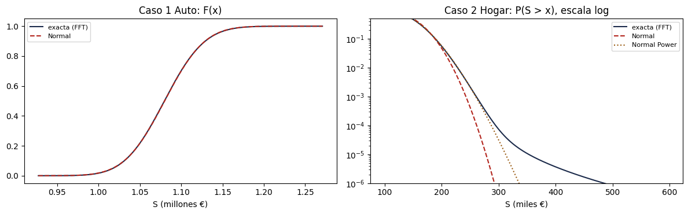
# =====================================================================
# Tema 3 - Modelo colectivo de riesgo: frecuencia, severidad y agregacion
# Ejercicio practico en R (base R + actuar + MASS + ggplot2) - Luiz Luzuriaga
# Master en Ciencias Actuariales y Financieras - Matematica Actuarial de la
# Estabilidad y Solvencia de la Actividad Aseguradora
# (A) Panjer de la teoria, (B) Caso 1 Auto, (C) MLE Gamma vs Pareto,
# (D) Caso 2 Hogar, (E) cuatro segmentos, (F) sobredispersion, (G) cola de la Pareto.
# Nota: fitdistrplus no esta instalado; se usa MASS::fitdistr y optim() (mismo MLE).
# =====================================================================
suppressPackageStartupMessages({ library(actuar); library(MASS); library(ggplot2) })
Z <- qnorm(0.995)
# ---- funciones ----------------------------------------------------------
discretizar <- function(cdf, h, K) { # discretizacion central, renormalizada
f <- numeric(K); f[1] <- cdf(h / 2)
j <- 1:(K - 1); f[j + 1] <- cdf((j + .5) * h) - cdf((j - .5) * h)
f / sum(f)
}
panjer_poisson <- function(f, lam, K) { # clase (a,b,0): a = 0, b = lambda
g <- numeric(K + 1); g[1] <- exp(-lam * (1 - f[1]))
for (k in 1:K) { j <- 1:min(k, length(f) - 1); g[k + 1] <- lam / k * sum(j * f[j + 1] * g[k - j + 1]) }
g
}
panjer_nb <- function(f, r, beta, K) { # a = beta/(1+beta), b = (r-1) beta/(1+beta)
a <- beta / (1 + beta); b <- (r - 1) * beta / (1 + beta)
g <- numeric(K + 1); g[1] <- (1 - beta * (f[1] - 1))^(-r)
for (k in 1:K) { j <- 1:min(k, length(f) - 1); g[k + 1] <- 1 / (1 - a * f[1]) * sum((a + b * j / k) * f[j + 1] * g[k - j + 1]) }
g
}
agg_fft <- function(f, M, fgp) { fp <- c(f, rep(0, M - length(f))); pmax(Re(fft(fgp(fft(fp)), inverse = TRUE)) / M, 0) }
cuantil <- function(g, h, p) h * (which(cumsum(g) >= p)[1] - 1)
tvar <- function(g, h, p) {
s <- h * (seq_along(g) - 1); F <- cumsum(g); v <- which(F >= p)[1]
(sum(s[(v + 1):length(g)] * g[(v + 1):length(g)]) + s[v] * (F[v] - p)) / (1 - p)
}
# ---- (A) Ejemplo de Panjer: lambda = 5, Gamma(2, 300), h = 10 -------------
cat("== (A) Panjer de la teoria ==\n")
lam <- 5; alp <- 2; th <- 300; h <- 10; K <- 1500
f <- discretizar(function(x) pgamma(x, alp, scale = th), h, 2048)
g <- panjer_poisson(f, lam, K); s <- h * (0:K)
cat(sprintf("f0 = %.9f g0 = %.9f masa hasta %d = %.9f\n", f[1], g[1], h * K, sum(g)))
cat(sprintf("E[S] = %.4f (3000) Var[S] = %.2f (2.700.000)\n", sum(s * g), sum(s^2 * g) - sum(s * g)^2))
print(sapply(c(.5, .9, .95, .99, .995), function(p) cuantil(g, h, p)))
gf <- agg_fft(f, 2048, function(z) exp(lam * (z - 1)))
cat(sprintf("FFT: max|g_FFT - g_Panjer| = %.2e\n", max(abs(gf[1:(K + 1)] - g))))
# Comparacion con actuar::aggregateDist (recursion de Panjer del paquete)
Fx <- aggregateDist("recursive", model.freq = "poisson", model.sev = f, lambda = lam, x.scale = h, maxit = 100000, tol = 1e-12)
cat("actuar::aggregateDist VaR 99,5%:", quantile(Fx, .995), "\n")
# ---- (B) Caso 1: Auto, Poisson(1200) y Gamma(2, 450) ----------------------
cat("\n== (B) Caso 1 Auto ==\n")
lam1 <- 1200; a1 <- 2; t1 <- 450; h1 <- 10; M <- 2^18
f1 <- discretizar(function(x) pgamma(x, a1, scale = t1), h1, 20000)
g1 <- agg_fft(f1, M, function(z) exp(lam1 * (z - 1)))
E1 <- lam1 * a1 * t1; V1 <- lam1 * a1 * t1^2 * (1 + a1); m3 <- lam1 * a1 * (a1 + 1) * (a1 + 2) * t1^3
sd1 <- sqrt(V1); gam1 <- m3 / sd1^3
res1 <- data.frame(metodo = c("Normal", "Normal Power", "Exacta (FFT)"),
VaR995 = c(E1 + Z * sd1, E1 + sd1 * (Z + gam1 / 6 * (Z^2 - 1)), cuantil(g1, h1, .995)))
res1$capital <- res1$VaR995 - E1; res1$capital_pct <- 100 * res1$capital / E1
s1 <- h1 * (0:(M - 1))
cat(sprintf("E(S) = %.1f Var = %.0f (teorico %.0f) asimetria = %.4f\n", sum(s1 * g1), sum(s1^2 * g1) - sum(s1 * g1)^2, V1, gam1)); print(res1, digits = 8)
# ---- (C) MLE de la severidad: Gamma frente a Pareto -----------------------
cat("\n== (C) MLE Gamma vs Pareto ==\n")
set.seed(123); x <- rgamma(500, shape = 2, scale = 450)
fg <- fitdistr(x, "gamma"); ll_g <- as.numeric(logLik(fg)); aic_g <- 4 - 2 * ll_g
nllp <- function(p) -sum(dpareto(x, shape = exp(p[1]), scale = exp(p[2]), log = TRUE))
op <- optim(c(log(3), log(1000)), nllp, control = list(maxit = 2000, reltol = 1e-12)); ll_p <- -op$value; aic_p <- 4 - 2 * ll_p
cat(sprintf("Gamma : forma = %.3f escala = %.1f logL = %.2f AIC = %.2f\n", fg$estimate["shape"], 1 / fg$estimate["rate"], ll_g, aic_g))
cat(sprintf("Pareto: alpha = %.3g theta = %.3g logL = %.2f AIC = %.2f\n", exp(op$par[1]), exp(op$par[2]), ll_p, aic_p))
cat("Mejor ajuste por AIC:", if (aic_g < aic_p) "Gamma" else "Pareto", "\n")
fgm <- discretizar(function(z) pgamma(z, fg$estimate["shape"], rate = fg$estimate["rate"]), 10, 20000)
gg <- agg_fft(fgm, M, function(z) exp(1200 * (z - 1)))
Em <- sum(s1 * gg); Vm <- sum(s1^2 * gg) - Em^2
cat(sprintf("Con MLE: E(S) = %.0f SD = %.0f VaR 99,5%% exacto = %.0f\n", Em, sqrt(Vm), cuantil(gg, 10, .995)))
# ---- (D) Caso 2: Hogar, BN(50, 3) y Pareto(4, 3000) -----------------------
cat("\n== (D) Caso 2 Hogar ==\n")
r <- 50; beta <- 3; al <- 4; thp <- 3000
EN <- r * beta; VN <- r * beta * (1 + beta); k3N <- r * beta * (1 + beta) * (1 + 2 * beta)
EX <- thp / (al - 1); VX <- al * thp^2 / ((al - 1)^2 * (al - 2))
EX2 <- 2 * thp^2 / ((al - 1) * (al - 2)); EX3 <- 6 * thp^3 / ((al - 1) * (al - 2) * (al - 3)); m3X <- EX3 - 3 * EX * EX2 + 2 * EX^3
ES2 <- EN * EX; VS2 <- EN * VX + VN * EX^2; m3S <- EN * m3X + 3 * VN * EX * VX + k3N * EX^3
sd2 <- sqrt(VS2); gam2 <- m3S / sd2^3
h2 <- 100; M2 <- 2^13
f2 <- discretizar(function(z) ppareto(z, al, scale = thp), h2, M2)
g2 <- agg_fft(f2, M2, function(z) (1 - beta * (z - 1))^(-r))
gP <- panjer_nb(f2, r, beta, 4000)
set.seed(123); Ns <- rnbinom(20000, size = r, prob = 1 / (1 + beta))
Ssim <- vapply(Ns, function(n) if (n > 0) sum(rpareto(n, al, scale = thp)) else 0, numeric(1))
res2 <- data.frame(metodo = c("Normal", "Normal Power", "Exacta (FFT)", "Monte Carlo (20.000)"),
VaR995 = c(ES2 + Z * sd2, ES2 + sd2 * (Z + gam2 / 6 * (Z^2 - 1)), cuantil(g2, h2, .995), quantile(Ssim, .995, names = FALSE)))
res2$VaR_sobre_E_menos1_pct <- 100 * (res2$VaR995 / ES2 - 1)
cat(sprintf("E(S) = %.0f Var = %.0f SD = %.0f asimetria = %.4f SD/E = %.3f (Caso 1: %.3f)\n", ES2, VS2, sd2, gam2, sd2 / ES2, sd1 / E1))
cat(sprintf("Panjer(NB) vs FFT: max|dif| = %.2e TVaR 99,5%% = %.0f\n", max(abs(gP[1:4001] - g2[1:4001])), tvar(g2, h2, .995))); print(res2, digits = 8)
# ---- (E) Cuatro segmentos: aditividad del Poisson compuesto ----------------
cat("\n== (E) Cuatro segmentos ==\n")
seg <- data.frame(lam = c(300, 250, 400, 250), alpha = c(2, 2.5, 1.8, 2.2), theta = c(400, 500, 350, 600))
seg$EX <- seg$alpha * seg$theta; seg$EX2 <- seg$alpha * (seg$alpha + 1) * seg$theta^2; seg$EX3 <- seg$alpha * (seg$alpha + 1) * (seg$alpha + 2) * seg$theta^3
seg$ES <- seg$lam * seg$EX; seg$VS <- seg$lam * seg$EX2; seg$m3 <- seg$lam * seg$EX3
tot <- colSums(seg[, c("ES", "VS", "m3")]); sdT <- sqrt(tot["VS"]); gT <- tot["m3"] / sdT^3
hh <- 50; MM <- 2^16
fseg <- lapply(1:4, function(i) discretizar(function(z) pgamma(z, seg$alpha[i], scale = seg$theta[i]), hh, MM))
lamT <- sum(seg$lam); mezcla <- Reduce(`+`, Map(function(l, fk) l * fk, seg$lam, fseg)) / lamT
gT_ <- agg_fft(mezcla, MM, function(z) exp(lamT * (z - 1)))
prod <- Reduce(`*`, Map(function(l, fk) exp(l * (fft(fk) - 1)), seg$lam, fseg)); gprod <- pmax(Re(fft(prod, inverse = TRUE)) / MM, 0)
cat(sprintf("E = %.0f Var = %.0f SD = %.0f asimetria = %.4f lambda total = %d\n", tot["ES"], tot["VS"], sdT, gT, lamT))
cat(sprintf("max|g_mezcla - g_producto| = %.2e\n", max(abs(gT_ - gprod))))
print(data.frame(metodo = c("Normal", "Normal Power", "Exacta (FFT)"),
VaR995 = c(tot["ES"] + Z * sdT, tot["ES"] + sdT * (Z + gT / 6 * (Z^2 - 1)), cuantil(gT_, hh, .995))), digits = 8, row.names = FALSE)
# ---- (F) Sobredispersion ---------------------------------------------------
cat("\n== (F) Test de sobredispersion ==\n")
set.seed(7); npol <- 20000; tasa <- rgamma(npol, shape = 0.5, scale = 0.3); y <- rpois(npol, tasa)
m <- mean(y); v <- var(y); disp <- v / m; chi2 <- (npol - 1) * disp
ll_pois <- sum(dpois(y, m, log = TRUE))
nll <- function(p) -sum(dnbinom(y, size = exp(p[1]), mu = exp(p[2]), log = TRUE))
opn <- optim(c(0, log(m)), nll, control = list(reltol = 1e-12)); rhat <- exp(opn$par[1]); muhat <- exp(opn$par[2]); ll_nb <- -opn$value
LR <- 2 * (ll_nb - ll_pois)
cat(sprintf("media = %.4f var = %.4f indice dispersion = %.3f chi2 = %.0f p = %.2e\n", m, v, disp, chi2, pchisq(chi2, npol - 1, lower.tail = FALSE)))
cat(sprintf("NB: r = %.3f mu = %.4f | logL Poisson = %.1f logL NB = %.1f LR = %.1f | AIC Poisson %.1f vs NB %.1f\n", rhat, muhat, ll_pois, ll_nb, LR, 2 - 2 * ll_pois, 4 - 2 * ll_nb))
# ---- (G) La cola engorda: Pareto con E(X)=1000 y alpha decreciente ---------
cat("\n== (G) Cola de la Pareto ==\n")
cola <- do.call(rbind, lapply(c(5, 4, 3.5, 3, 2.5, 2, 1.5), function(a) {
tt <- 1000 * (a - 1); hG <- 250; MG <- 2^17
fG <- discretizar(function(z) ppareto(z, a, scale = tt), hG, MG)
gG <- agg_fft(fG, MG, function(z) (1 - beta * (z - 1))^(-r)); EG <- EN * 1000
VG <- if (a > 2) EN * a * tt^2 / ((a - 1)^2 * (a - 2)) + VN * 1000^2 else NA
nG <- if (a > 2) EG + Z * sqrt(VG) else NA
npG <- NA
if (a > 3) { E2 <- 2 * tt^2 / ((a - 1) * (a - 2)); E3 <- 6 * tt^3 / ((a - 1) * (a - 2) * (a - 3)); m3g <- E3 - 3 * 1000 * E2 + 2 * 1000^3
VXg <- E2 - 1000^2; m3Sg <- EN * m3g + 3 * VN * 1000 * VXg + k3N * 1000^3; npG <- EG + sqrt(VG) * (Z + m3Sg / VG^1.5 / 6 * (Z^2 - 1)) }
data.frame(alpha = a, theta = tt, VaR_exacto = cuantil(gG, hG, .995), VaR_sobre_E_menos1 = cuantil(gG, hG, .995) / EG - 1,
Normal = nG, Normal_Power = npG, TVaR = tvar(gG, hG, .995))
}))
print(cola, digits = 7, row.names = FALSE)
# ---- Graficos ---------------------------------------------------------------
xs <- seq(E1 - 4 * sd1, E1 + 5 * sd1, by = 100); i0 <- as.integer(xs / h1) + 1
d1 <- rbind(data.frame(x = xs / 1e6, F = cumsum(g1)[i0], tipo = "exacta (FFT)"), data.frame(x = xs / 1e6, F = pnorm((xs - E1) / sd1), tipo = "Normal"))
ggsave("t3_R_auto.png", ggplot(d1, aes(x, F, colour = tipo, linetype = tipo)) + geom_line(linewidth = 1) + labs(title = "Caso 1 Auto: F(x)", x = "S (millones EUR)", y = "F(x)", colour = "", linetype = "") + theme_minimal(base_size = 12), width = 7, height = 3.8, dpi = 130)
xs2 <- seq(100000, 600000, by = 2000); sf <- 1 - cumsum(g2)
yy <- -3 / gam2 + sqrt(9 / gam2^2 + 1 + 6 * ((xs2 - ES2) / sd2) / gam2)
d2 <- rbind(data.frame(x = xs2 / 1e3, p = sf[as.integer(xs2 / h2) + 1], tipo = "exacta (FFT)"), data.frame(x = xs2 / 1e3, p = pnorm((xs2 - ES2) / sd2, lower.tail = FALSE), tipo = "Normal"),
data.frame(x = xs2 / 1e3, p = pnorm(yy, lower.tail = FALSE), tipo = "Normal Power"))
ggsave("t3_R_hogar.png", ggplot(d2, aes(x, p, colour = tipo, linetype = tipo)) + geom_line(linewidth = 1) + scale_y_log10(limits = c(1e-6, .5)) + labs(title = "Caso 2 Hogar: P(S > x), escala log", x = "S (miles EUR)", y = "P(S > x)", colour = "", linetype = "") + theme_minimal(base_size = 12), width = 7, height = 3.8, dpi = 130)
ggsave("t3_R_cola.png", ggplot(cola, aes(alpha, VaR_sobre_E_menos1)) + geom_line(colour = "#1559a6", linewidth = 1) + geom_point() + scale_x_reverse() +
labs(title = "Capital relativo (VaR/E - 1) al engordar la cola", x = "alpha de la Pareto (media fija 1000)", y = "VaR 99,5% / E(S) - 1") + theme_minimal(base_size = 12), width = 7, height = 3.6, dpi = 130)
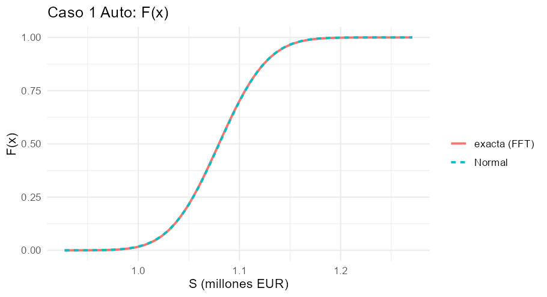
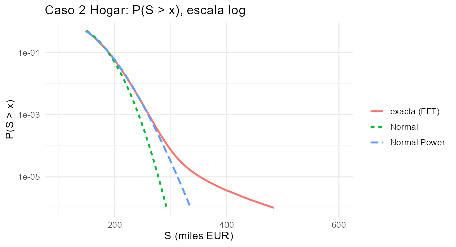
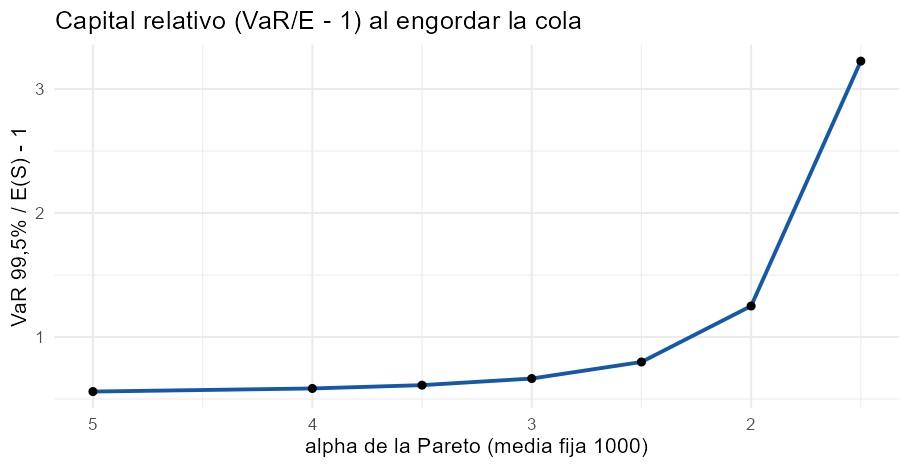
El taller de Excel pide tabular VaR y TVaR de una Normal(5 M€; 0,8 M€) para \(p=95\%\), 99 %, 99,5 % y 99,9 %; el de R, calcular VaR y ES con PerformanceAnalytics sobre una serie de cola pesada y reproducir por simulación la no-subaditividad del VaR. Se resuelve en Excel, Python y R y se amplía con la Log-normal y la t de Student, los bonos y el crédito, la asignación de Euler, la fórmula estándar frente a cópulas y el error de estimación.
PerformanceAnalytics.| Resultado | Normal | Log-normal | t₄ (misma media y sd) |
|---|---|---|---|
| VaR 99,5 % | 7.060.663 | 7.435.977 | 7.604.469 |
| TVaR 99,5 % | 7.313.559 | 7.827.963 | 8.577.865 |
| Capital VaR | 2.060.663 | 2.435.977 | 2.604.469 |
| Capital TVaR | 2.313.559 | 2.827.963 | 3.577.865 |
| TVaR/VaR − 1 (capital) | 12,3 % | 16,1 % | 37,4 % |
| Brecha TVaR − VaR al 95 % → 99,9 % | 334.287 → 221.486 (decrece) | 452.842 → 370.544 (decrece, lento) | 605.862 → 1.421.588 (crece) |
Bonos (\(p=97{,}5\%\)): \(\rho=0\): VaR(A+B)=100, TVaR=101,6; \(\rho=0{,}5\): 100 y 140,8; \(\rho=0{,}75\): 0 y 160; suma de TVaR individuales = 160 y suma de VaR = 0. Crédito (p=98 %): VaR 0+0 < 50; TVaR 75 ≥ 50,5625. Simulación (semilla 456, 100.000 escenarios): \(0{,}5\mathrm{VaR}(A)+0{,}5\mathrm{VaR}(B)\approx0{,}003\) frente a \(\mathrm{VaR}(0{,}5A+0{,}5B)\approx0{,}50\); ES: 0,75–0,76 frente a 0,51. Los valores simulados cambian ligeramente entre Python y R por usar generadores distintos.
Lectura. El TVaR cuesta un 12 % más de capital que el VaR con la Normal y un 16–37 % con colas más pesadas; la brecha absoluta decrece con \(p\) en la Normal y crece con la t₄. El VaR falla la subaditividad en los bonos y el crédito y la simulación lo confirma. La fórmula estándar acierta a unos pocos puntos (−8 % a +5 %) según la asimetría y la dependencia en la cola. El ES se estima peor que el VaR con pocos datos.
Sin código visible: se descarga el libro con fórmulas vivas.
Seis hojas con fórmulas vivas: Caso1_Normal (\(z_p\), \(\varphi\), VaR, TVaR, brecha, control con NORMINV, capitales y gráfico), Lognormal_t (extensión con NORMSDIST, TINV y GAMMALN para la densidad de la t), Bonos (21 valores de \(\rho\), VaR y TVaR con IF, \(\rho^*\), rango admisible y dos gráficos), Credito (Caso 2 del banco), Euler (contribuciones y comprobación \(\sum C_i=\mathrm{TVaR}\)) y SCR_agregacion (matriz de correlaciones tipo Solvencia II). La verificación detectó un error real de precedencia de Excel (-z^2 se evalúa como \((-z)^2\)), corregido con -(z^2); las 365 fórmulas finales coinciden con Python.
# %% [markdown]
# # Tema 4 · Gestión de capital y medidas coherentes de riesgo (VaR / TVaR) — Ejercicio práctico (Python)
# **Luiz Luzuriaga** · Máster en Ciencias Actuariales y Financieras · Matemática Actuarial de la Estabilidad y Solvencia
#
# Contenido: (A) Caso 1 Normal y tabla VaR/TVaR por nivel (taller de Excel), (B) extensión Log-normal y distribuciones de cola pesada,
# (C) bonos correlacionados: no-subaditividad del VaR (Caso 2 de crédito), (D) demostración por simulación (taller de R),
# (E) asignación de capital de Euler, (F) agregación de la fórmula estándar frente a la distribución conjunta,
# (G) VaR frente a TVaR: error de estimación y equivalencia de niveles.
# %%
import numpy as np, pandas as pd, matplotlib.pyplot as plt
from scipy import stats, optimize, integrate
def var_tvar_normal(p, mu, sd):
z = stats.norm.ppf(p); return mu + sd*z, mu + sd*stats.norm.pdf(z)/(1 - p)
def var_tvar_lognormal(p, E, sd):
s2 = np.log(1 + (sd/E)**2); s = s2**.5; m = np.log(E) - s2/2; z = stats.norm.ppf(p)
return np.exp(m + s*z), E*stats.norm.cdf(s - z)/(1 - p), (m, s)
def tvar_numerico(ppf, p, n=20000):
"""TVaR = (1/(1−p)) ∫_p^1 VaR_u du por regla del punto medio (forma integral de la diapositiva)."""
u = p + (1 - p)*(np.arange(n) + .5)/n; return ppf(u).mean()
# %% [markdown]
# ## (A) Caso 1 — S ~ Normal(5.000.000; 800.000): VaR y TVaR por nivel de confianza
# $VaR_p=\mu+\sigma z_p$, $TVaR_p=\mu+\sigma\,\varphi(z_p)/(1-p)$. Se comprueba además la forma integral $\frac1{1-p}\int_p^1VaR_u\,du$ y la de Rockafellar–Uryasev $\min_t\{t+E[(X-t)^+]/(1-p)\}$.
# %%
mu, sd = 5_000_000, 800_000
niveles = [.95, .99, .995, .999]
filas = []
for p in niveles:
v, t = var_tvar_normal(p, mu, sd)
t_int = tvar_numerico(lambda u: stats.norm.ppf(u, mu, sd), p)
# Rockafellar–Uryasev: E[(X−t)^+] para Normal = (μ−t)Φ(−d) + σφ(d)... se calcula por integración numérica
ru = optimize.minimize_scalar(lambda tt: tt + integrate.quad(lambda x: (x - tt)*stats.norm.pdf(x, mu, sd), tt, mu + 12*sd)[0]/(1 - p),
bracket=(v - 1e5, v + 1e5)).fun
filas.append([p, v, t, t - v, t/v - 1, t_int, ru])
tab = pd.DataFrame(filas, columns=["p", "VaR", "TVaR", "TVaR−VaR", "TVaR/VaR−1", "TVaR (integral)", "TVaR (Rockafellar–Uryasev)"]).set_index("p")
tab["Capital VaR"] = tab.VaR - mu; tab["Capital TVaR"] = tab.TVaR - mu; tab["Capital TVaR/VaR −1 %"] = 100*(tab["Capital TVaR"]/tab["Capital VaR"] - 1)
pd.options.display.float_format = "{:,.4f}".format
tab.round(4)
# %% [markdown]
# **Lectura.** Al 99,5 %: VaR 7.060.663, TVaR 7.313.559; el TVaR exige un **12,3 % más de capital** (sobre la media) y un 3,6 % más en valor. Con la Normal la brecha $TVaR-VaR$ **decrece** con $p$ (334.287 al 95 % → 221.486 al 99,9 %). Las tres formas de calcular el TVaR coinciden.
# %% [markdown]
# ## (B) Extensión: Log-normal con la misma media y varianza, y colas más pesadas
# $\sigma_L^2=\ln[1+(\sigma/E)^2]$, $\mu_L=\ln E-\sigma_L^2/2$; $TVaR=E\cdot\Phi(\sigma_L-z_p)/(1-p)$. Se añade una Student-$t$ con 4 grados de libertad (misma media y desviación) y una Pareto con índice $\alpha$ para ver cuándo la brecha **crece** con $p$.
# %%
rows = []
for p in niveles + [.9999]:
vn, tn = var_tvar_normal(p, mu, sd); vl, tl, par = var_tvar_lognormal(p, mu, sd)
nu = 4; sc = sd*np.sqrt((nu - 2)/nu); tq = stats.t.ppf(p, nu)
vt = mu + sc*tq; tt = mu + sc*(stats.t.pdf(tq, nu)/(1 - p))*((nu + tq**2)/(nu - 1))
rows.append([p, vn, tn, tn - vn, vl, tl, tl - vl, vt, tt, tt - vt])
cmp_ = pd.DataFrame(rows, columns=["p", "VaR N", "TVaR N", "brecha N", "VaR LN", "TVaR LN", "brecha LN", "VaR t4", "TVaR t4", "brecha t4"]).set_index("p")
sl2 = par[1]**2
print(f"Log-normal: σ_L² = {sl2:.5f} σ_L = {par[1]:.5f} μ_L = {par[0]:.5f}")
v5, t5, _ = var_tvar_lognormal(.995, mu, sd)
print(f"Log-normal 99,5 %: VaR = {v5:,.0f} TVaR = {t5:,.0f} capital VaR = {v5 - mu:,.0f} capital TVaR = {t5 - mu:,.0f} (+{100*((t5 - mu)/(v5 - mu) - 1):.1f} % TVaR sobre VaR)")
print(f"Frente a la Normal: capital VaR +{100*((v5 - mu)/(var_tvar_normal(.995, mu, sd)[0] - mu) - 1):.1f} %, capital TVaR +{100*((t5 - mu)/(var_tvar_normal(.995, mu, sd)[1] - mu) - 1):.1f} %")
cmp_.round(0)
# %%
# Brecha TVaR − VaR relativa al VaR en el límite p→1: Normal → 0 ; Log-normal → 0 (lentamente) ; Pareto → 1/(α−1)
ps = np.array([.9, .95, .99, .995, .999, .9999, .99999])
fig, ax = plt.subplots(figsize=(6.8, 3.7))
for al in (2, 3, 5):
ax.plot(ps, np.full_like(ps, 1/(al - 1)), "--", color="#9a5b12", alpha=.5 + .15*(al == 2))
ax.text(ps[-1], 1/(al - 1), f" Pareto α={al}", fontsize=8, color="#9a5b12", va="bottom")
ax.plot(ps, [(var_tvar_normal(p, mu, sd)[1]/var_tvar_normal(p, mu, sd)[0] - 1) for p in ps], color="#1559a6", label="Normal")
ax.plot(ps, [(var_tvar_lognormal(p, mu, sd)[1]/var_tvar_lognormal(p, mu, sd)[0] - 1) for p in ps], color="#b3261e", label="Log-normal")
ax.set_xscale("logit"); ax.set_xlabel("nivel de confianza p (escala logit)"); ax.set_ylabel("TVaR/VaR − 1"); ax.legend(fontsize=8)
plt.tight_layout(); plt.show()
# %% [markdown]
# **Lectura.** Con la Log-normal (misma media y varianza) el capital sube un 18,2 % (VaR) y un 22,2 % (TVaR) frente a la Normal, y la prima del TVaR sobre el VaR pasa del 12,3 % al 16,1 %.
# La afirmación de la diapositiva de que, con cola pesada, la brecha «aumenta con $p$» solo es cierta para colas realmente pesadas (Pareto: $TVaR_p/VaR_p\to\alpha/(\alpha-1)$, brecha $VaR_p/(\alpha-1)$ creciente);
# con esta Log-normal suave la brecha absoluta también decrece, aunque mucho más despacio que con la Normal.
# %% [markdown]
# ## (C) Bonos correlacionados: el VaR no es subaditivo, el TVaR sí
# Dos bonos con $q=2\,\%$ y pérdida 100; $P(A=1,B=1)=q^2+\rho\,q(1-q)$; $p=97{,}5\,\%$. Se calcula la distribución de $S=100(A+B)$ para cada $\rho$ y se obtienen VaR y TVaR exactos.
# %%
def bonos(rho, q=.02, L=100, p=.975):
p11 = q**2 + rho*q*(1 - q); p10 = q - p11; p00 = 1 - 2*q + p11
xs = np.array([0, L, 2*L]); pr = np.array([p00, 2*p10, p11])
cdf = np.cumsum(pr); var = xs[np.searchsorted(cdf, p - 1e-12)]
exc = np.sum(np.maximum(xs - var, 0)*pr); tvar = var + exc/(1 - p)
return p11, 1 - p00, var, tvar
def bono_individual(q=.02, L=100, p=.975):
xs = np.array([0, L]); pr = np.array([1 - q, q]); var = xs[np.searchsorted(np.cumsum(pr), p - 1e-12)]
return var, var + np.sum(np.maximum(xs - var, 0)*pr)/(1 - p)
vi, ti = bono_individual()
out = []
for rho in (0, .25, .5, .75, 1.0):
p11, pS, v, t = bonos(rho); out.append([rho, 100*p11, 100*pS, v, 2*vi, t, 2*ti, 2*ti - t])
rb = pd.DataFrame(out, columns=["ρ", "P(A y B) %", "P(S>0) %", "VaR A+B", "VaR A + VaR B", "TVaR A+B", "TVaR A + TVaR B", "beneficio TVaR"]).set_index("ρ")
rho_star = (0.015 - .02**2)/(.02*.98)
print(f"VaR individual = {vi}, TVaR individual = {ti}; umbral ρ* = {rho_star:.4f} rango admisible ρ ∈ [{-.02/.98:.4f}, 1]")
rb.round(2)
# %% [markdown]
# **Lectura.** Para $\rho<\rho^*\approx0{,}745$ el VaR de la cartera es 100 mientras la suma de VaR individuales es 0: **no es subaditivo**, y el VaR *cae* de golpe a 0 en $\rho^*$ (discontinuidad). El TVaR crece de forma continua con $\rho$, nunca supera 160 (comonotonía) y el beneficio de diversificación baja de 58,4 a 0.
# **Caso 2 de crédito del banco** (50 M€ por cartera, $q=1{,}5\,\%$, independientes, $p=98\,\%$):
# %%
def credito(q=.015, E=50., p=.98):
p2, p1, p0 = q**2, 2*q*(1 - q), (1 - q)**2
xs = np.array([0, E, 2*E]); pr = np.array([p0, p1, p2]); cdf = np.cumsum(pr)
v = xs[np.searchsorted(cdf, p - 1e-12)]; t = v + np.sum(np.maximum(xs - v, 0)*pr)/(1 - p)
vi = 0.0; ti = q*E/(1 - p) # VaR individual = 0 (q < 1−p); TVaR = q·E/(1−p)
return dict(VaR_A=vi, VaR_B=vi, VaR_AB=v, TVaR_A=ti, TVaR_B=ti, TVaR_AB=t, P_alguno=1 - p0)
c2 = credito(); print({k: round(v, 4) for k, v in c2.items()})
print(f"VaR: 0+0 = 0 < {c2['VaR_AB']:.0f} (no subaditivo) TVaR: {c2['TVaR_A'] + c2['TVaR_B']:.1f} ≥ {c2['TVaR_AB']:.4f} (subaditivo, beneficio {c2['TVaR_A'] + c2['TVaR_B'] - c2['TVaR_AB']:.2f})")
# %%
rr = np.linspace(0, 1, 201); res = np.array([bonos(r_) for r_ in rr])
fig, ax = plt.subplots(1, 2, figsize=(11, 3.6))
ax[0].plot(rr, res[:, 2], color="#b3261e", label="VaR A+B"); ax[0].axhline(0, color="#57667a", ls=":", label="VaR A + VaR B = 0")
ax[0].axvline(rho_star, color="k", ls="--", lw=.8); ax[0].set_title("VaR 97,5 %: discontinuo y no subaditivo"); ax[0].set_xlabel("ρ"); ax[0].legend(fontsize=8)
ax[1].plot(rr, res[:, 3], color="#1559a6", label="TVaR A+B"); ax[1].axhline(2*ti, color="#57667a", ls=":", label="TVaR A + TVaR B = 160")
ax[1].axvline(rho_star, color="k", ls="--", lw=.8); ax[1].set_title("TVaR 97,5 %: continuo y subaditivo"); ax[1].set_xlabel("ρ"); ax[1].legend(fontsize=8)
plt.tight_layout(); plt.show()
# %% [markdown]
# ## (D) Demostración por simulación (taller de R): $VaR$ y $ES$ de $0{,}5A+0{,}5B$
# Dos carteras independientes: pérdida $1$ con probabilidad $q=1{,}5\,\%$ y ruido $N(0;0{,}001)$ en el resto; cartera equiponderada; 100.000 escenarios; método histórico al 98 %.
# %%
def var_hist(x, p): return np.quantile(x, p)
def es_hist(x, p): v = np.quantile(x, p); return x[x >= v].mean()
rng = np.random.default_rng(456); n_sim = 100_000; q = .015
LA = np.where(rng.random(n_sim) < q, 1.0, rng.normal(0, .001, n_sim)); LB = np.where(rng.random(n_sim) < q, 1.0, rng.normal(0, .001, n_sim))
LP = .5*LA + .5*LB
res = pd.DataFrame({"0,5·A + 0,5·B (suma ponderada)": [.5*var_hist(LA, .98) + .5*var_hist(LB, .98), .5*es_hist(LA, .98) + .5*es_hist(LB, .98)],
"Cartera (A+B) real": [var_hist(LP, .98), es_hist(LP, .98)]}, index=["VaR 98 %", "ES 98 % (TVaR)"])
print(f"P(A y B)= {np.mean((LA > .5) & (LB > .5)):.5f} P(alguno)= {np.mean((LA > .5) | (LB > .5)):.5f} (teórico 0,000225 y 0,029775)")
res.round(4)
# %% [markdown]
# **Lectura.** $0{,}5\,VaR(A)+0{,}5\,VaR(B)\approx0$ pero $VaR(0{,}5A+0{,}5B)\approx0{,}5$: **no subaditivo**. El ES: $0{,}5\,ES(A)+0{,}5\,ES(B)\approx0{,}75$ frente a $ES(\text{cartera})\approx0{,}51$: **subaditivo**. Coincide con el Caso 2 teórico a escala $0{,}5$ (VaR 0 → 50; TVaR 37,5 → 50,56).
# %% [markdown]
# ## (E) Asignación de capital: contribuciones de Euler al TVaR
# $A\sim N(3;0{,}5^2)$, $B\sim N(2;0{,}4^2)$, $\rho=0{,}3$, $p=99{,}5\,\%$. $C_i=E[X_i\mid S>VaR_p(S)]=\mu_i+\frac{\mathrm{Cov}(X_i,S)}{\sigma_S}\frac{\varphi(z_p)}{1-p}$ y $\sum C_i=TVaR_p(S)$.
# %%
mA, sA, mB, sB, rho_ = 3.0, .5, 2.0, .4, .3; p = .995; z = stats.norm.ppf(p); k = stats.norm.pdf(z)/(1 - p)
sS = np.sqrt(sA**2 + sB**2 + 2*rho_*sA*sB); covA = sA**2 + rho_*sA*sB; covB = sB**2 + rho_*sA*sB
CA, CB = mA + covA/sS*k, mB + covB/sS*k
tvA, tvB = mA + sA*k, mB + sB*k; tvS = mA + mB + sS*k
# comprobación por simulación (cópula gaussiana ⇒ normal conjunta)
rng = np.random.default_rng(1); XY = rng.multivariate_normal([mA, mB], [[sA**2, rho_*sA*sB], [rho_*sA*sB, sB**2]], 4_000_000); S = XY.sum(1)
v = np.quantile(S, p); sel = S > v
ec = pd.DataFrame({"TVaR individual": [tvA, tvB, tvA + tvB], "Contribución C_i (fórmula)": [CA, CB, CA + CB], "C_i = E[X_i | S>VaR] (simulación)": [XY[sel, 0].mean(), XY[sel, 1].mean(), S[sel].mean()],
"Diversificación asignada": [tvA - CA, tvB - CB, tvA + tvB - tvS]}, index=["A", "B", "A+B"])
print(f"σ_S = {sS:.3f} VaR(S) = {mA + mB + sS*z:.3f} TVaR(S) = {tvS:.3f} φ(z)/(1−p) = {k:.4f}")
ec.round(3)
# %% [markdown]
# **Lectura.** A paga su media más su covarianza con el total, no su desviación individual: $C_A=4{,}231<4{,}446$ (TVaR individual) y $C_B=2{,}874<3{,}157$; la diversificación total (0,497) se reparte 0,215/0,283 y las contribuciones suman exactamente $TVaR(S)=7{,}105$.
# %% [markdown]
# ## (F) Fórmula estándar de Solvencia II frente a la distribución conjunta
# $SCR=\sqrt{\sum_{i,j}\mathrm{Corr}_{ij}SCR_iSCR_j}$. Con $SCR_1=100$, $SCR_2=80$, $\mathrm{Corr}=0{,}25$: $142{,}83$ (−20,7 % frente a 180). ¿Es prudente si los riesgos son asimétricos? Se comparan con simulación dos Log-normales con cópula gaussiana de $\rho=0{,}25$.
# %%
print("SCR agregado (fórmula):", np.sqrt(100**2 + 80**2 + 2*.25*100*80))
def scr_sim(sig, rho, n=2_000_000, seed=5, nu=None):
rng = np.random.default_rng(seed); Zs = rng.multivariate_normal([0, 0], [[1, rho], [rho, 1]], n)
if nu is not None: # cópula t: dependencia en la cola
W = rng.chisquare(nu, n)/nu; Zs = stats.norm.ppf(stats.t.cdf(Zs/np.sqrt(W)[:, None], nu))
A = np.exp(sig*Zs[:, 0] - sig**2/2)*100; B = np.exp(sig*Zs[:, 1] - sig**2/2)*80 # medias 100 y 80
sa = np.quantile(A, .995) - 100; sb = np.quantile(B, .995) - 80
form = np.sqrt(sa**2 + sb**2 + 2*rho*sa*sb); real = np.quantile(A + B, .995) - 180
return sa, sb, sa + sb, form, real
fil = []
for sig in (.2, .5, 1.0):
for etiqueta, nu in (("gaussiana", None), ("t, ν=4", 4), ("t, ν=3", 3)):
sa, sb, suma, form, real = scr_sim(sig, .25, nu=nu); fil.append([sig, etiqueta, sa, sb, suma, form, real, 100*(real/form - 1)])
fs = pd.DataFrame(fil, columns=["σ log-normal", "cópula", "SCR_A", "SCR_B", "suma sin diversificar", "raíz de la fórmula", "SCR real (simulación)", "real/fórmula −1 %"]).set_index(["σ log-normal", "cópula"])
fs.round(1)
# %% [markdown]
# **Lectura.** Con cópula **gaussiana** la fórmula de la raíz resulta *prudente* aunque las marginales sean asimétricas (el SCR real queda un 4–9 % por debajo): la asimetría por sí sola no basta para que sea poco prudente.
# Con **dependencia en la cola** (cópula t) el SCR real sube: con σ=0,2 queda un 4–5 % *por encima* de la fórmula; con σ=0,5–1 las dos fuerzas (asimetría que diversifica y dependencia de cola que encarece) se compensan y la fórmula acierta a ±2 %.
# La fórmula de la raíz no es sistemáticamente prudente ni imprudente: el sesgo depende de la asimetría y de la dependencia de cola, y su orden de magnitud es de pocos puntos porcentuales (matiz a la advertencia de la diapositiva).
# %% [markdown]
# ## (G) ¿Por qué Solvencia II conserva el VaR? Error de estimación y niveles equivalentes
# (i) Error de muestreo de VaR 99,5 % y ES 99 % con 250 y 2.000 observaciones de una $t_4$; (ii) nivel $p'$ tal que $ES_{p'}=VaR_{99,5\%}$ para cada distribución.
# %%
rng = np.random.default_rng(11)
nu = 4; sc = np.sqrt((nu - 2)/nu)
def verdaderos():
v995 = sc*stats.t.ppf(.995, nu); tq = stats.t.ppf(.99, nu); es99 = sc*(stats.t.pdf(tq, nu)/.01)*((nu + tq**2)/(nu - 1)); return v995, es99
v995, es99 = verdaderos()
filas = []
for n in (250, 2000):
X = sc*rng.standard_t(nu, (4000, n)); vv = np.quantile(X, .995, axis=1)
srt = np.sort(X, axis=1); k99 = int(np.ceil(.99*n)); ee = srt[:, k99 - 1:].mean(axis=1)
filas.append([n, vv.mean(), 100*vv.std()/v995, ee.mean(), 100*ee.std()/es99])
est = pd.DataFrame(filas, columns=["n", "VaR 99,5 % medio", "error típico VaR %", "ES 99 % medio", "error típico ES %"]).set_index("n")
print(f"Valores verdaderos (t4 de varianza 1): VaR 99,5 % = {v995:.4f} ES 99 % = {es99:.4f}")
est.round(3)
# %%
def nivel_equiv(dist):
return optimize.brentq(lambda pp: tvar_numerico(dist.ppf, pp, 40000) - dist.ppf(.995), .9, .9949)
dists = {"Normal": stats.norm(), "t de Student ν=4 (escalada)": stats.t(4, scale=sc), "Log-normal (σ_L=0,159)": stats.lognorm(s=0.15899, scale=1),
"Log-normal (σ_L=1)": stats.lognorm(s=1.0), "Pareto I α=3": stats.pareto(3), "Pareto I α=2": stats.pareto(2)}
eq = pd.DataFrame({"p' tal que ES_p' = VaR 99,5 %": {k: nivel_equiv(d) for k, d in dists.items()}})
eq["ES 99 % / VaR 99,5 %"] = {k: tvar_numerico(d.ppf, .99, 40000)/d.ppf(.995) for k, d in dists.items()}
eq.round(4)
# %% [markdown]
# **Lectura.** El error de muestreo del ES es mayor que el del VaR (especialmente con pocos datos y cola pesada): es el argumento técnico clásico a favor del VaR con datos escasos. Pero **no existe una equivalencia universal de niveles**:
# el nivel $p'$ con $ES_{p'}=VaR_{99{,}5\%}$ va del 98,7 % (Normal) al 98,0 % (Pareto $lpha=2$), y el cociente $ES_{99\%}/VaR_{99{,}5\%}$ va de 1,03 (Normal) a 1,13 (t₄) y 1,41 (Pareto $lpha=2$):
# cambiar de VaR 99,5 % a ES 99 % (SST) endurece poco el capital si la cola es ligera y mucho si es pesada.
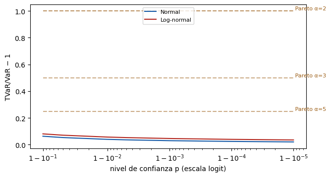
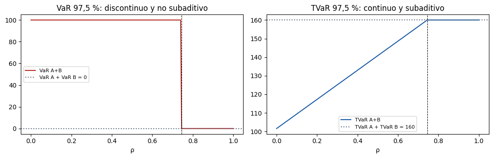
# =====================================================================
# Tema 4 - Gestion de capital y medidas coherentes de riesgo (VaR / TVaR)
# Ejercicio practico en R (PerformanceAnalytics + MASS + ggplot2) - Luiz Luzuriaga
# Master en Ciencias Actuariales y Financieras - Matematica Actuarial de la
# Estabilidad y Solvencia de la Actividad Aseguradora
# (A) Caso 1 Normal, (B) Log-normal y t, (C) bonos correlacionados, (D) simulacion con
# PerformanceAnalytics, (E) Euler, (F) formula estandar frente a copulas, (G) error de estimacion.
# =====================================================================
suppressPackageStartupMessages({ library(PerformanceAnalytics); library(MASS); library(ggplot2) })
# ---- funciones ---------------------------------------------------------
var_tvar_normal <- function(p, mu, sd) { z <- qnorm(p); c(VaR = mu + sd * z, TVaR = mu + sd * dnorm(z) / (1 - p)) }
var_tvar_lognormal <- function(p, E, sd) {
s2 <- log(1 + (sd / E)^2); s <- sqrt(s2); m <- log(E) - s2 / 2; z <- qnorm(p)
c(VaR = exp(m + s * z), TVaR = E * pnorm(s - z) / (1 - p), mu_L = m, sigma_L = s)
}
tvar_num <- function(ppf, p, n = 20000) mean(ppf(p + (1 - p) * (seq_len(n) - .5) / n)) # (1/(1-p)) * integral de VaR_u
# ---- (A) Caso 1: Normal(5e6, 8e5) --------------------------------------
cat("== (A) Caso 1 Normal ==\n")
mu <- 5e6; sd <- 8e5; niveles <- c(.95, .99, .995, .999)
A <- do.call(rbind, lapply(niveles, function(p) {
v <- var_tvar_normal(p, mu, sd)
ru <- optimize(function(tt) tt + integrate(function(x) (x - tt) * dnorm(x, mu, sd), tt, mu + 12 * sd)$value / (1 - p), c(v["VaR"] - 2e5, v["VaR"] + 2e5))$objective
data.frame(p = p, VaR = v["VaR"], TVaR = v["TVaR"], brecha = v["TVaR"] - v["VaR"], TVaR_sobre_VaR = v["TVaR"] / v["VaR"] - 1,
TVaR_integral = tvar_num(function(u) qnorm(u, mu, sd), p), TVaR_RU = ru, capital_VaR = v["VaR"] - mu, capital_TVaR = v["TVaR"] - mu)
}))
A$extra_capital_pct <- 100 * (A$capital_TVaR / A$capital_VaR - 1); rownames(A) <- NULL; print(A, digits = 10)
# ---- (B) Log-normal y t de Student (misma media y sd) --------------------
cat("\n== (B) Log-normal y t4 ==\n")
ln <- var_tvar_lognormal(.995, mu, sd); nn <- var_tvar_normal(.995, mu, sd)
cat(sprintf("Log-normal: sigma_L^2 = %.5f sigma_L = %.5f mu_L = %.5f\n", ln["sigma_L"]^2, ln["sigma_L"], ln["mu_L"]))
cat(sprintf("99,5%%: VaR = %.0f TVaR = %.0f | capital VaR = %.0f capital TVaR = %.0f (+%.1f%%)\n", ln["VaR"], ln["TVaR"], ln["VaR"] - mu, ln["TVaR"] - mu, 100 * ((ln["TVaR"] - mu) / (ln["VaR"] - mu) - 1)))
cat(sprintf("Frente a la Normal: capital VaR +%.1f%% capital TVaR +%.1f%%\n", 100 * ((ln["VaR"] - mu) / (nn["VaR"] - mu) - 1), 100 * ((ln["TVaR"] - mu) / (nn["TVaR"] - mu) - 1)))
nu <- 4; sc <- sd * sqrt((nu - 2) / nu)
tab_B <- do.call(rbind, lapply(c(niveles, .9999), function(p) {
vn <- var_tvar_normal(p, mu, sd); vl <- var_tvar_lognormal(p, mu, sd); tq <- qt(p, nu)
data.frame(p = p, VaR_N = vn["VaR"], TVaR_N = vn["TVaR"], VaR_LN = vl["VaR"], TVaR_LN = vl["TVaR"],
VaR_t4 = mu + sc * tq, TVaR_t4 = mu + sc * dt(tq, nu) / (1 - p) * (nu + tq^2) / (nu - 1))
})); rownames(tab_B) <- NULL; print(round(tab_B), row.names = FALSE)
# ---- (C) Bonos correlacionados ---------------------------------------------
cat("\n== (C) Bonos correlacionados ==\n")
bonos <- function(rho, q = .02, L = 100, p = .975) {
p11 <- q^2 + rho * q * (1 - q); p10 <- q - p11; p00 <- 1 - 2 * q + p11
xs <- c(0, L, 2 * L); pr <- c(p00, 2 * p10, p11); v <- xs[which(cumsum(pr) >= p - 1e-12)[1]]
c(P11 = p11, PS0 = 1 - p00, VaR = v, TVaR = v + sum(pmax(xs - v, 0) * pr) / (1 - p))
}
ind <- c(VaR = 0, TVaR = .02 * 100 / .025)
Cb <- do.call(rbind, lapply(c(0, .25, .5, .75, 1), function(r) { b <- bonos(r); data.frame(rho = r, P_ambos_pct = 100 * b["P11"], P_S_mayor0_pct = 100 * b["PS0"], VaR_AB = b["VaR"], VaR_suma = 0, TVaR_AB = b["TVaR"], TVaR_suma = 160, beneficio = 160 - b["TVaR"]) }))
rownames(Cb) <- NULL; print(Cb, digits = 6)
cat(sprintf("umbral rho* = %.4f ; rango admisible [%.4f, 1]\n", (.015 - .02^2) / (.02 * .98), -.02 / .98))
# Caso 2 de credito (50 M cada una, q = 1,5 %, p = 98 %)
q <- .015; E <- 50; p <- .98; pr <- c((1 - q)^2, 2 * q * (1 - q), q^2); xs <- c(0, E, 2 * E); vAB <- xs[which(cumsum(pr) >= p - 1e-12)[1]]
tAB <- vAB + sum(pmax(xs - vAB, 0) * pr) / (1 - p); tA <- q * E / (1 - p)
cat(sprintf("Credito: VaR 0+0 = 0 < %.0f | TVaR %.1f+%.1f = %.1f >= %.4f (beneficio %.2f)\n", vAB, tA, tA, 2 * tA, tAB, 2 * tA - tAB))
# ---- (D) Demostracion por simulacion con PerformanceAnalytics --------------
cat("\n== (D) Simulacion (PerformanceAnalytics) ==\n")
set.seed(123); n <- 2000
rets <- xts(rt(n, df = 4) * 0.01, order.by = seq(as.Date("2015-01-01"), by = "day", length.out = n)); colnames(rets) <- "Cartera"
cat(sprintf("VaR 97,5%%: historico %.5f | gaussiano %.5f | modificado (Cornish-Fisher) %.5f | ES historico %.5f\n",
VaR(rets, p = .975, method = "historical", invert = FALSE), VaR(rets, p = .975, method = "gaussian", invert = FALSE),
VaR(rets, p = .975, method = "modified", invert = FALSE), ES(rets, p = .975, method = "historical", invert = FALSE)))
set.seed(456); n_sim <- 100000; q <- .015
loss_A <- ifelse(runif(n_sim) < q, -1, rnorm(n_sim, 0, .001)); loss_B <- ifelse(runif(n_sim) < q, -1, rnorm(n_sim, 0, .001)); portfolio <- .5 * loss_A + .5 * loss_B
R2 <- xts(cbind(A = loss_A, B = loss_B, Portfolio = portfolio), order.by = seq(as.Date("2000-01-01"), by = "day", length.out = n_sim))
V98 <- VaR(R2, p = .98, method = "historical", invert = FALSE); E98 <- ES(R2, p = .98, method = "historical", invert = FALSE)
cat(sprintf("0,5*VaR(A)+0,5*VaR(B) = %.4f | VaR(Cartera) = %.4f\n", .5 * V98[1, "A"] + .5 * V98[1, "B"], V98[1, "Portfolio"]))
cat(sprintf("0,5*ES(A)+0,5*ES(B) = %.4f | ES(Cartera) = %.4f\n", .5 * E98[1, "A"] + .5 * E98[1, "B"], E98[1, "Portfolio"]))
# Version en perdidas positivas (misma escala que Python)
Lp <- -portfolio; La <- -loss_A; Lb <- -loss_B; esh <- function(x, p) mean(x[x >= quantile(x, p)])
cat(sprintf("En perdidas positivas: VaR suma ponderada = %.4f | VaR cartera = %.4f | ES suma ponderada = %.4f | ES cartera = %.4f\n",
.5 * quantile(La, .98) + .5 * quantile(Lb, .98), quantile(Lp, .98), .5 * esh(La, .98) + .5 * esh(Lb, .98), esh(Lp, .98)))
# ---- (E) Asignacion de Euler ---------------------------------------------------
cat("\n== (E) Contribuciones de Euler al TVaR ==\n")
mA <- 3; sA <- .5; mB <- 2; sB <- .4; rho <- .3; p <- .995; z <- qnorm(p); k <- dnorm(z) / (1 - p)
sS <- sqrt(sA^2 + sB^2 + 2 * rho * sA * sB); covA <- sA^2 + rho * sA * sB; covB <- sB^2 + rho * sA * sB
CA <- mA + covA / sS * k; CB <- mB + covB / sS * k
set.seed(1); XY <- mvrnorm(4e6, c(mA, mB), matrix(c(sA^2, rho * sA * sB, rho * sA * sB, sB^2), 2)); S <- rowSums(XY); sel <- S > quantile(S, p)
cat(sprintf("sigma_S = %.3f VaR = %.3f TVaR = %.3f k = %.4f\n", sS, mA + mB + sS * z, mA + mB + sS * k, k))
print(data.frame(linea = c("A", "B", "A+B"), TVaR_ind = c(mA + sA * k, mB + sB * k, mA + sA * k + mB + sB * k), C_formula = c(CA, CB, CA + CB),
C_simulacion = c(mean(XY[sel, 1]), mean(XY[sel, 2]), mean(S[sel])), diversificacion = c(mA + sA * k - CA, mB + sB * k - CB, mA + sA * k + mB + sB * k - (mA + mB + sS * k))), digits = 4, row.names = FALSE)
# ---- (F) Formula estandar frente a copulas ---------------------------------------
cat("\n== (F) SCR: formula estandar frente a distribucion conjunta ==\n")
cat("SCR agregado (formula):", sqrt(100^2 + 80^2 + 2 * .25 * 100 * 80), "\n")
scr_sim <- function(sig, rho, n = 1e6, nu = NA, seed = 5) {
set.seed(seed); Zs <- mvrnorm(n, c(0, 0), matrix(c(1, rho, rho, 1), 2))
if (!is.na(nu)) { W <- rchisq(n, nu) / nu; Zs <- qnorm(pt(Zs / sqrt(W), nu)) }
A <- exp(sig * Zs[, 1] - sig^2 / 2) * 100; B <- exp(sig * Zs[, 2] - sig^2 / 2) * 80
sa <- quantile(A, .995) - 100; sb <- quantile(B, .995) - 80; form <- sqrt(sa^2 + sb^2 + 2 * rho * sa * sb); real <- quantile(A + B, .995) - 180
c(SCR_A = sa, SCR_B = sb, formula = form, real = real, pct = 100 * (real / form - 1))
}
Fs <- do.call(rbind, lapply(c(.2, .5, 1), function(s) do.call(rbind, lapply(list(NA, 4, 3), function(nu) data.frame(sigma = s, copula = if (is.na(nu)) "gaussiana" else paste0("t, nu=", nu), t(scr_sim(s, .25, nu = nu)))))))
rownames(Fs) <- NULL; print(Fs, digits = 4)
# ---- (G) Error de estimacion y niveles equivalentes --------------------------------
cat("\n== (G) Error de muestreo: VaR 99,5% y ES 99% de una t4 ==\n")
set.seed(11); nu <- 4; sc <- sqrt((nu - 2) / nu)
v995 <- sc * qt(.995, nu); tq <- qt(.99, nu); es99 <- sc * dt(tq, nu) / .01 * (nu + tq^2) / (nu - 1)
est <- do.call(rbind, lapply(c(250, 2000), function(n) {
X <- matrix(sc * rt(4000 * n, nu), 4000, n); vv <- apply(X, 1, quantile, .995); ee <- apply(X, 1, function(x) mean(x[x >= quantile(x, .99)]))
data.frame(n = n, VaR_medio = mean(vv), error_VaR_pct = 100 * sd(vv) / v995, ES_medio = mean(ee), error_ES_pct = 100 * sd(ee) / es99)
}))
cat(sprintf("Valores verdaderos: VaR 99,5%% = %.4f ES 99%% = %.4f\n", v995, es99)); print(est, digits = 4, row.names = FALSE)
nivel_equiv <- function(ppf) uniroot(function(pp) tvar_num(ppf, pp, 40000) - ppf(.995), c(.9, .9949))$root
dists <- list(Normal = qnorm, "t4 escalada" = function(u) sc * qt(u, 4), "Log-normal s=0,159" = function(u) qlnorm(u, 0, .15899), "Log-normal s=1" = function(u) qlnorm(u, 0, 1),
"Pareto I alfa=3" = function(u) (1 - u)^(-1 / 3), "Pareto I alfa=2" = function(u) (1 - u)^(-1 / 2))
print(data.frame(distribucion = names(dists), p_equiv = sapply(dists, nivel_equiv), ES99_sobre_VaR995 = sapply(dists, function(f) tvar_num(f, .99, 40000) / f(.995))), digits = 4, row.names = FALSE)
# ---- Graficos -----------------------------------------------------------------------
rr <- seq(0, 1, length.out = 201); resb <- t(sapply(rr, bonos)); dfb <- rbind(data.frame(rho = rr, y = resb[, "VaR"], medida = "VaR A+B"), data.frame(rho = rr, y = resb[, "TVaR"], medida = "TVaR A+B"))
ggsave("t4_R_bonos.png", ggplot(dfb, aes(rho, y)) + geom_line(colour = "#1559a6", linewidth = 1) + facet_wrap(~medida, scales = "free_y") +
geom_hline(data = data.frame(medida = c("VaR A+B", "TVaR A+B"), y = c(0, 160)), aes(yintercept = y), linetype = "dotted") + geom_vline(xintercept = .745, linetype = "dashed") +
labs(title = "Bonos correlacionados: VaR 97,5% (suma = 0) y TVaR 97,5% (suma = 160)", x = "rho", y = "") + theme_minimal(base_size = 12), width = 9, height = 3.6, dpi = 130)
ps <- c(.9, .95, .99, .995, .999, .9999, .99999)
dfc <- rbind(data.frame(p = ps, y = sapply(ps, function(p) { v <- var_tvar_normal(p, mu, sd); v["TVaR"] / v["VaR"] - 1 }), d = "Normal"),
data.frame(p = ps, y = sapply(ps, function(p) { v <- var_tvar_lognormal(p, mu, sd); v["TVaR"] / v["VaR"] - 1 }), d = "Log-normal"),
data.frame(p = ps, y = 1 / (3 - 1), d = "Pareto alfa=3"), data.frame(p = ps, y = 1 / (2 - 1), d = "Pareto alfa=2"))
ggsave("t4_R_cola.png", ggplot(dfc, aes(p, y, colour = d)) + geom_line(linewidth = 1) + scale_x_continuous(trans = scales::trans_new("logit", function(x) log(x / (1 - x)), function(x) exp(x) / (1 + exp(x))), breaks = ps) +
labs(title = "TVaR/VaR - 1 segun el nivel de confianza", x = "p (escala logit)", y = "TVaR/VaR - 1", colour = "") + theme_minimal(base_size = 12), width = 8, height = 3.8, dpi = 130)
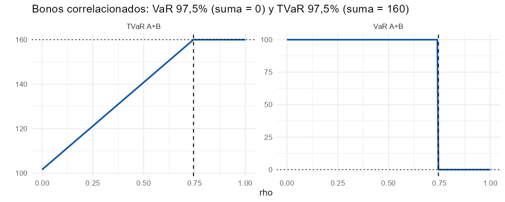
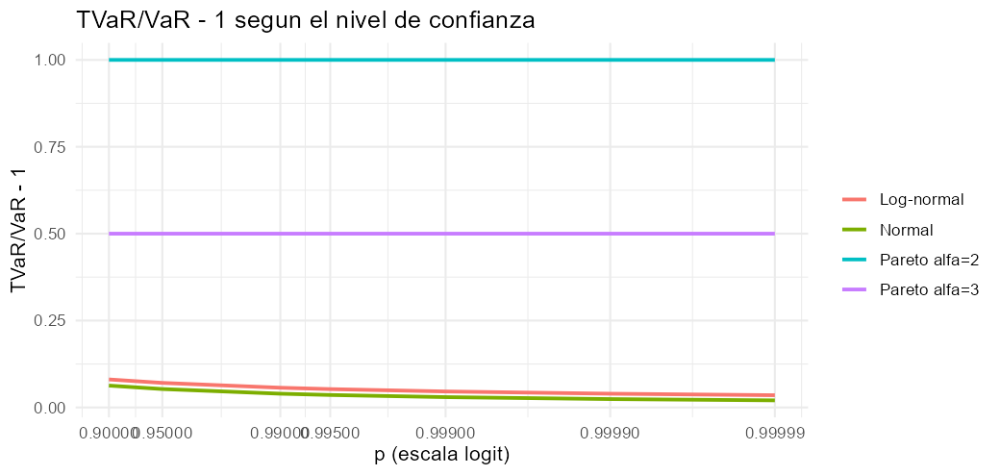
El taller de Excel pide tabular VaR y TVaR del Caso 1 por POT–GPD para \(p=97\%\), 99 %, 99,5 % y 99,9 %; el de R, determinar el umbral y estimar \(\xi,\sigma\) por máxima verosimilitud sobre una muestra Burr simulada. Se resuelve en Excel, Python y R con la misma muestra (2.000 siniestros de rburr(2000, 2, 1.5, 5) con set.seed(123), guardada en t5_siniestros.csv) y se amplía con la simulación del SCR anual, la capa XL, la censura y la no estacionariedad.
optim/scipy.optimize porque evd e ismev no están instalados; equivale a fpot().)| Magnitud | Caso 1 (parámetros dados) | Muestra Burr · MLE (u=10) | Verdad |
|---|---|---|---|
| ξ | 0,35 | 0,26 (EE 0,11) · IC perfil [0,09; 0,50] | 0,333 |
| σ (M€) | 6 | 4,67 | — |
| Nu · λ_u | 80 · 2,0 | 137 · 3,4 | — |
| VaR 99,5 % (M€) | 28,35 | 27,53 · Wald [23,2; 31,9] | 27,85 |
| TVaR 99,5 % (M€) | 47,46 | 40,06 · bootstrap [30,0; 56,2] | 42,67 |
| SCR anual (M€) | 147 (Poisson) · 216 (BN) · 166 (+ incert.) | — | — |
Tabla del taller (Caso 1): \(p=97\%\): 11,82 / 22,02; 99 %: 20,71 / 35,70; 99,5 %: 28,35 / 47,46; 99,9 %: 55,20 / 88,77 (VaR / TVaR, M€). La muestra de R con set.seed(123) no coincide con la de las diapositivas (esta tiene 139 excedencias en u = 10 y un máximo de 88,6 M€; la nuestra, 137 y 63,6 M€), por lo que \(\hat\xi\) y los cuantiles estimados difieren (0,26 frente a 0,41 en la diapositiva); la verdad (\(\xi=1/3\), VaR 27,85, TVaR 42,67) y los resultados paramétricos del Caso 1 sí coinciden. Los cálculos de simulación varían ligeramente entre Python y R (generadores distintos).
Lectura. Con \(\lambda_u=2\), el VaR por evento (28,35 M€) se supera cada 4 años y el 1-en-200 es 4,7 veces mayor. El TVaR crece con \(p\) en valor absoluto, pero su cociente con el VaR decrece hacia \(1/(1-\xi)\). Con la muestra, el VaR es muy robusto al umbral y el TVaR no; el IC del TVaR (30–56) y la dispersión entre estimadores (0,16–0,41) muestran la incertidumbre real de la cola. Severidad ≠ capital: el SCR anual es 5 veces el VaR por evento. Ignorar límites de póliza o tendencias sesga el resultado.
Sin código visible: se descarga el libro con fórmulas vivas.
Seis hojas con fórmulas vivas: Casos (los dos casos: \(\lambda_u\), \(r\), VaR, TVaR, brecha, periodo de retorno y niveles a 100 y 200 años), Taller_p (tabla por nivel de confianza y estabilidad numérica con \(\xi\) negativo, 0, 0,0001 y 0,35, con gráfico), Muestra (los 2.000 siniestros, estadísticos y la tabla del exceso medio con COUNTIF y AVERAGEIF, con gráfico), Ajuste_u10 (excesos ordenados con SMALL, log-verosimilitud, PWM y Hill con SUMPRODUCT; Solver puede maximizar \(\ell\)), Sensibilidad_u (\(\hat\xi\), \(\hat\sigma\), \(\sigma^*\), VaR y TVaR por umbral) y Capa_XL (perfil de excesos y trapecio para \(E[Y^2]\)). Los \(\hat\xi,\hat\sigma\) de MLE vienen de Python/R (en amarillo, editables). Las 4.444 fórmulas se verificaron contra Python (el verificador detectó referencias mal alineadas en la primera versión, corregidas).
# %% [markdown]
# # Tema 5 · Teoría de valores extremos y riesgos catastróficos (POT / GPD) — Ejercicio práctico (Python)
# **Luiz Luzuriaga** · Máster en Ciencias Actuariales y Financieras · Matemática Actuarial de la Estabilidad y Solvencia
#
# Contenido: (A) Casos 1 y 2 y la tabla de Excel (VaR/TVaR por POT-GPD), (B) la muestra Burr de la práctica de R y la elección del umbral,
# (C) ajuste MLE e incertidumbre (Wald, perfil, bootstrap) y métodos alternativos, (D) diagnósticos gráficos, (E) de la severidad al SCR anual,
# (F) capa XL 40 xs 20, (G) datos con límites de póliza (censura) y no estacionariedad.
# **Datos compartidos:** `t5_siniestros.csv` son los 2.000 siniestros de `actuar::rburr(2000, 2, 1.5, 5)` con `set.seed(123)` en R (ver el script `.R`); se usan en Excel, Python y R.
# %%
import numpy as np, pandas as pd, matplotlib.pyplot as plt
from scipy import stats, optimize, special
T_AÑOS, N_TOT = 40, 2000
claims = pd.read_csv("t5_siniestros.csv")["perdida_MEUR"].to_numpy()
def var_gpd(p, u, xi, sig, n, Nu):
r = (n/Nu)*(1 - p)
return u + sig*np.expm1(-xi*np.log(r))/xi if abs(xi) > 1e-8 else u - sig*np.log(r)
def tvar_gpd(p, u, xi, sig, n, Nu):
v = var_gpd(p, u, xi, sig, n, Nu); return (v + sig - xi*u)/(1 - xi)
def nivel_retorno(m, u, xi, sig, lam_u):
x = lam_u*m; return u + sig*np.expm1(xi*np.log(x))/xi if abs(xi) > 1e-8 else u + sig*np.log(x)
# %% [markdown]
# ## (A) Casos 1 y 2 y la tabla del taller de Excel
# $VaR_p=u+\frac\sigma\xi\big[r^{-\xi}-1\big]$, $r=\frac n{N_u}(1-p)$; $TVaR_p=\frac{VaR_p+\sigma-\xi u}{1-\xi}$ ($\xi<1$); $\lambda_u=N_u/T$; nivel de retorno $x_m=u+\frac\sigma\xi[(\lambda_um)^\xi-1]$.
# Para $\xi\to0$ se usa `expm1` (estabilidad numérica) y la rama $u-\sigma\ln r$.
# %%
caso = {"Caso 1 · Terremoto": dict(n=2000, T=40, u=10, Nu=80, xi=.35, sig=6), "Caso 2 · Inundación": dict(n=1500, T=30, u=5, Nu=60, xi=.25, sig=4)}
filas = []
for k, c in caso.items():
lam = c["Nu"]/c["T"]; v = var_gpd(.995, c["u"], c["xi"], c["sig"], c["n"], c["Nu"]); t = tvar_gpd(.995, c["u"], c["xi"], c["sig"], c["n"], c["Nu"])
filas.append([k, c["n"]/c["Nu"], lam, v, t, t - v, t/v - 1, nivel_retorno(100, c["u"], c["xi"], c["sig"], lam), nivel_retorno(200, c["u"], c["xi"], c["sig"], lam)])
cas = pd.DataFrame(filas, columns=["caso", "n/Nu", "λ_u", "VaR 99,5 %", "TVaR 99,5 %", "brecha", "TVaR/VaR−1", "retorno 100 a", "retorno 200 a"]).set_index("caso")
c1 = caso["Caso 1 · Terremoto"]
tabla_excel = pd.DataFrame([[p, var_gpd(p, c1["u"], c1["xi"], c1["sig"], 2000, 80), tvar_gpd(p, c1["u"], c1["xi"], c1["sig"], 2000, 80)] for p in (.97, .99, .995, .999)], columns=["p", "VaR", "TVaR"]).set_index("p")
tabla_excel["TVaR/VaR"] = tabla_excel.TVaR/tabla_excel.VaR; tabla_excel["TVaR−VaR"] = tabla_excel.TVaR - tabla_excel.VaR
print(f"Periodo de retorno del VaR 99,5 % de severidad (Caso 1): {1/(2000/40*.005):.1f} años | evento de 50 M€: {1/(80/40*(1 + .35*(50 - 10)/6)**(-1/.35)):.1f} años")
print("Casos 1 y 2:"); print(cas.round(3).to_string()); print("\nTabla del taller (Caso 1):"); tabla_excel.round(2)
# %% [markdown]
# **Lectura.** El VaR 99,5 % de severidad (28,35 M€) se supera de media **cada 4 años** (λ=2 eventos/año): no es un suceso 1-en-200; el 1-en-200 es 132,4 M€ (4,7 veces mayor). El cociente $TVaR/VaR$ **decrece** con $p$ (1,86 → 1,61, límite $1/(1-\xi)=1{,}54$) pero la brecha absoluta **crece** (10,2 → 33,6 M€).
# Los valores de la diapositiva de Excel se reproducen exactamente (11,82/22,02; 20,71/35,70; 28,35/47,46; 55,20/88,77).
# %% [markdown]
# ## (B) La muestra Burr y la elección del umbral
# Burr(α=2, γ=1,5, θ=5): $\xi=1/(\alpha\gamma)=1/3$ y $VaR_{99,5\%}$ verdadero = 27,85 M€. Se calculan los estadísticos descriptivos, la función de exceso medio y el ajuste por umbral.
# %%
alpha_b, gam_b, th_b = 2.0, 1.5, 5.0
def burr_sf(x): return (1/(1 + (x/th_b)**gam_b))**alpha_b
def burr_ppf(p): return th_b*((1 - p)**(-1/alpha_b) - 1)**(1/gam_b)
var_verd = burr_ppf(.995)
from scipy import integrate
tv_verd = var_verd + integrate.quad(burr_sf, var_verd, np.inf, limit=500)[0]/burr_sf(var_verd) # E[X|X>v] = v + ∫_v^∞ S(x)dx / S(v)
x = np.sort(claims)[::-1]
print(f"n = {len(x)} mediana = {np.median(x):.2f} p95 = {np.quantile(x, .95):.2f} máximo = {x[0]:.2f} siguiente = {x[1]:.2f}")
print(f"Verdad: ξ = {1/(alpha_b*gam_b):.4f} VaR 99,5 % = {var_verd:.2f} TVaR 99,5 % = {tv_verd:.2f}")
def mle_gpd(exc):
f = lambda p: np.inf if p[1] <= 0 else -np.sum(stats.genpareto.logpdf(exc, p[0], 0, p[1]))
ini = [0.2, exc.mean()]; r = optimize.minimize(f, ini, method="Nelder-Mead", options=dict(xatol=1e-9, fatol=1e-10, maxiter=4000))
return r.x, -r.fun
def hessiana(f, x0, h=(1e-4, 1e-3)):
H = np.zeros((2, 2)); x0 = np.array(x0, float)
for i in range(2):
for j in range(2):
ei = np.eye(2)[i]*h[i]; ej = np.eye(2)[j]*h[j]
H[i, j] = (f(x0 + ei + ej) - f(x0 + ei - ej) - f(x0 - ei + ej) + f(x0 - ei - ej))/(4*h[i]*h[j])
return H
def ajuste(u):
exc = claims[claims > u] - u; Nu = len(exc); (xi, sg), ll = mle_gpd(exc)
nll = lambda p: -np.sum(stats.genpareto.logpdf(exc, p[0], 0, p[1])); cov = np.linalg.inv(hessiana(nll, [xi, sg]))
return dict(u=u, Nu=Nu, lam=Nu/T_AÑOS, xi=xi, sig=sg, se_xi=np.sqrt(cov[0, 0]), se_sig=np.sqrt(cov[1, 1]), cov=cov, ll=ll, exc=exc)
us = [5, 7.5, 10, 12.5, 15, 20]; fits = {u: ajuste(u) for u in us}
sens = []
for u in us:
f = fits[u]; sens.append([u, f["Nu"], f["lam"], f["xi"], f["xi"] - 1.96*f["se_xi"], f["xi"] + 1.96*f["se_xi"], f["sig"], f["sig"] - f["xi"]*u,
var_gpd(.995, u, f["xi"], f["sig"], N_TOT, f["Nu"]), tvar_gpd(.995, u, f["xi"], f["sig"], N_TOT, f["Nu"])])
sens = pd.DataFrame(sens, columns=["u", "Nu", "λ_u", "ξ", "ξ inf (95 %)", "ξ sup (95 %)", "σ", "σ* = σ−ξu", "VaR 99,5 %", "TVaR 99,5 %"]).set_index("u")
sens.loc["verdad"] = [np.nan, np.nan, 1/3, np.nan, np.nan, np.nan, np.nan, var_verd, tv_verd]
sens.round(2)
# %%
# Gráficos de diagnóstico del umbral: MRL y estabilidad de parámetros
ug = np.linspace(1, 24, 47); mrl, lo, hi, nn = [], [], [], []
for u in ug:
e = claims[claims > u] - u; nn.append(len(e)); mrl.append(e.mean()); se = e.std(ddof=1)/np.sqrt(len(e)); lo.append(e.mean() - 1.96*se); hi.append(e.mean() + 1.96*se)
fig, ax = plt.subplots(1, 3, figsize=(14, 3.6))
ax[0].plot(ug, mrl, color="#1559a6"); ax[0].fill_between(ug, lo, hi, color="#1559a6", alpha=.15); ax[0].set_title("Exceso medio e(u)"); ax[0].set_xlabel("u (M€)")
ugs = np.arange(3, 22.1, 1.0); XI, SS, LO, HI = [], [], [], []
for u in ugs:
f = ajuste(u); XI.append(f["xi"]); LO.append(f["xi"] - 1.96*f["se_xi"]); HI.append(f["xi"] + 1.96*f["se_xi"]); SS.append(f["sig"] - f["xi"]*u)
ax[1].plot(ugs, XI, color="#9a5b12"); ax[1].fill_between(ugs, LO, HI, color="#9a5b12", alpha=.15); ax[1].axhline(1/3, color="k", ls="--", lw=.8); ax[1].set_title("Estabilidad de ξ̂ (verdad 1/3)"); ax[1].set_xlabel("u (M€)")
ax[2].plot(ugs, SS, color="#57667a"); ax[2].set_title("Escala modificada σ* = σ̂ − ξ̂u"); ax[2].set_xlabel("u (M€)")
plt.tight_layout(); plt.show()
# %% [markdown]
# **Lectura.** Con esta muestra (la de `set.seed(123)` en R; no coincide con la de la diapositiva, que tiene 139 excedencias y un máximo de 88,6 M€) el exceso medio es aproximadamente lineal entre ≈ 5 y 15 M€; $\hat\xi$ es estable (0,25–0,28) entre $u=5$ y $12{,}5$ y se vuelve errático por encima de 15 (menos de 55 excesos, IC enormes). Se elige **u = 10 M€** ($N_u=137$, $\lambda_u=3{,}4$ eventos/año).
# El VaR 99,5 % es muy robusto al umbral (27,1–28,7 M€; verdad 27,85) porque está cerca de los datos; el TVaR depende de $\hat\xi$ y varía más (39–43 M€; verdad ≈ 42,7). $\hat\xi\approx0{,}26$ queda por debajo del verdadero 1/3, pero dentro del intervalo.
# %% [markdown]
# ## (C) Ajuste MLE en u = 10: incertidumbre y métodos alternativos
# Intervalos: Wald (delta), verosimilitud perfil de $\xi$ y bootstrap paramétrico; contrastes con PWM, Hill y Pickands.
# %%
u = 10.0; f10 = fits[10]; exc = f10["exc"]; Nu = f10["Nu"]; xi_h, sg_h = f10["xi"], f10["sig"]
def var_de(xi, sg, Nu_=Nu): return var_gpd(.995, u, xi, sg, N_TOT, Nu_)
def tvar_de(xi, sg, Nu_=Nu): return tvar_gpd(.995, u, xi, sg, N_TOT, Nu_)
# Wald para VaR (método delta numérico)
g = lambda p: var_de(p[0], p[1]); d = np.array([(g([xi_h + 1e-5, sg_h]) - g([xi_h - 1e-5, sg_h]))/2e-5, (g([xi_h, sg_h + 1e-4]) - g([xi_h, sg_h - 1e-4]))/2e-4])
se_var = np.sqrt(d @ f10["cov"] @ d)
# perfil de ξ
xg = np.linspace(.05, .9, 200); prof = []
for xv in xg:
r = optimize.minimize_scalar(lambda s: -np.sum(stats.genpareto.logpdf(exc, xv, 0, s)), bounds=(.1, 30), method="bounded"); prof.append(-r.fun)
prof = np.array(prof); ok = xg[prof >= f10["ll"] - stats.chi2.ppf(.95, 1)/2]
# bootstrap paramétrico (B = 1000)
rng = np.random.default_rng(2024); B = 1000; boot = np.empty((B, 3))
for b in range(B):
yb = stats.genpareto.rvs(xi_h, 0, sg_h, Nu, random_state=rng); (xb, sb), _ = mle_gpd(yb); boot[b] = [xb, var_de(xb, sb), tvar_de(xb, sb)] if xb < .98 else [xb, np.nan, np.nan]
q = lambda a: np.nanquantile(a, [.025, .975])
res = pd.DataFrame({"estimación": [xi_h, var_de(xi_h, sg_h), tvar_de(xi_h, sg_h)],
"Wald": [f"[{xi_h - 1.96*f10['se_xi']:.2f}; {xi_h + 1.96*f10['se_xi']:.2f}]", f"[{var_de(xi_h, sg_h) - 1.96*se_var:.2f}; {var_de(xi_h, sg_h) + 1.96*se_var:.2f}]", "—"],
"Perfil": [f"[{ok.min():.2f}; {ok.max():.2f}]", "—", "—"],
"Bootstrap (B=1000)": [f"[{q(boot[:, 0])[0]:.2f}; {q(boot[:, 0])[1]:.2f}]", f"[{q(boot[:, 1])[0]:.2f}; {q(boot[:, 1])[1]:.2f}]", f"[{q(boot[:, 2])[0]:.2f}; {q(boot[:, 2])[1]:.2f}]"],
"verdadero": [1/3, var_verd, tv_verd]}, index=["ξ", "VaR 99,5 %", "TVaR 99,5 %"])
print(f"u = {u}: Nu = {Nu} (λ_u = {Nu/T_AÑOS:.2f}/año) ξ̂ = {xi_h:.4f} (EE {f10['se_xi']:.4f}) σ̂ = {sg_h:.4f} (EE {f10['se_sig']:.4f}) logL = {f10['ll']:.3f} EE VaR = {se_var:.2f}")
res.round(2)
# %%
# Métodos alternativos: PWM (Hosking–Wallis), Hill y Pickands
y = np.sort(exc); n_e = len(y); F = (np.arange(1, n_e + 1) - .35)/n_e; a0 = y.mean(); a1 = np.mean(y*(1 - F))
xi_pwm = 2 - a0/(a0 - 2*a1); sg_pwm = 2*a0*a1/(a0 - 2*a1)
k = Nu; xi_hill = np.mean(np.log(x[:k]/x[k])); kk = Nu//4
xi_pick = np.log((x[kk - 1] - x[2*kk - 1])/(x[2*kk - 1] - x[4*kk - 1]))/np.log(2) if 4*kk <= len(x) else np.nan
alt = pd.DataFrame({"ξ": [xi_h, xi_pwm, xi_hill, xi_pick, 1/3], "VaR 99,5 %": [var_de(xi_h, sg_h), var_de(xi_pwm, sg_pwm), u + (x[k]*0 + 0) if False else np.nan, np.nan, var_verd]},
index=["GPD-MLE (u=10)", "PWM / L-momentos", f"Hill (k={k})", f"Pickands (k={kk})", "verdad"])
# VaR con Hill (cola de Pareto): x_(k+1)·(k/(n(1−p)))^ξ
alt.loc[f"Hill (k={k})", "VaR 99,5 %"] = x[k]*(k/(N_TOT*.005))**xi_hill
print(f"PWM: ξ = {xi_pwm:.3f}, σ = {sg_pwm:.3f}")
alt.round(2)
# %% [markdown]
# **Lectura.** Los intervalos de Wald son simétricos; el perfil y el bootstrap son asimétricos (el IC del TVaR, [30; 56], es muy ancho). MLE y PWM coinciden (0,26); Hill con $k=N_u$ da 0,41 y Pickands 0,16: la dispersión entre estimadores (0,16–0,41 en torno al 1/3 verdadero) es una medida honesta de la incertidumbre del índice de cola.
# Un cuantil extremo no debe comunicarse sin su intervalo, ni elegirse el método que da el número deseado.
# %% [markdown]
# ## (D) Diagnósticos de bondad de ajuste y niveles de retorno
# PP-plot, QQ-plot, supervivencia log-log y niveles de retorno con la GPD ajustada en $u=10$.
# %%
Gh = lambda yy: stats.genpareto.cdf(yy, xi_h, 0, sg_h)
pe = (np.arange(1, n_e + 1))/(n_e + 1)
fig, ax = plt.subplots(1, 4, figsize=(15, 3.5))
ax[0].plot(pe, Gh(y), ".", ms=3, color="#1559a6"); ax[0].plot([0, 1], [0, 1], "k", lw=.8); ax[0].set_title("PP-plot")
ax[1].plot(stats.genpareto.ppf(pe, xi_h, 0, sg_h), y, ".", ms=3, color="#1559a6"); mm = max(y.max(), 60); ax[1].plot([0, mm], [0, mm], "k", lw=.8); ax[1].set_title("QQ-plot (exceso)")
ax[2].loglog(y + u, 1 - pe, ".", ms=3, color="#1559a6"); xs_ = np.linspace(u, 120, 200); ax[2].loglog(xs_, stats.genpareto.sf(xs_ - u, xi_h, 0, sg_h), color="#b3261e"); ax[2].set_title("Supervivencia log-log de P(X>x | X>u)")
ms = np.logspace(0, np.log10(300), 60); ax[3].semilogx(ms, [nivel_retorno(m, u, xi_h, sg_h, Nu/T_AÑOS) for m in ms], color="#1559a6")
ax[3].semilogx(ms, [nivel_retorno(m, u, 1/3, 5.0*0 + sg_h, Nu/T_AÑOS) for m in ms], color="#57667a", ls=":"); ax[3].set_title("Niveles de retorno (años)")
plt.tight_layout(); plt.show()
# %% [markdown]
# **Lectura.** El PP y el QQ ajustan bien hasta ≈ 45 M€; la supervivencia log-log es casi una recta de pendiente ≈ −1/ξ. El máximo observado (63,6 M€) queda por encima de la banda: es una observación y no invalida el modelo, pero debe revisarse. Con 40 años de datos, el nivel a 200 años es 5 veces el historial.
# %% [markdown]
# ## (E) De la severidad al SCR anual: simulación de la pérdida anual
# Caso 1: $u=10$, $\xi=0{,}35$, $\sigma=6$, 10⁶ años simulados. $S$ = suma de las pérdidas por evento por encima de $u$ (en un año hay $N\sim$ Poisson($\lambda_u=2$)). Se comparan: Poisson, Binomial Negativa ($\mathrm{Var}=2{,}5\,\mathrm{media}$) y Poisson con incertidumbre de $\hat\xi,\hat\sigma$ ($N_u=80$).
# %%
def sim_anual(N, xi, sg, u0=10.0, rng=None):
tot = N.sum(); anio = np.repeat(np.arange(len(N)), N); xs = u0 + stats.genpareto.rvs(xi if np.isscalar(xi) else np.repeat(xi, N), 0, sg if np.isscalar(sg) else np.repeat(sg, N), size=tot, random_state=rng)
S = np.bincount(anio, weights=xs, minlength=len(N)); M = np.zeros(len(N)); np.maximum.at(M, anio, xs); return S, M
rng = np.random.default_rng(321); NY = 1_000_000
xi0, sg0, lam0 = .35, 6.0, 2.0
casos = {}
S, M = sim_anual(rng.poisson(lam0, NY), xi0, sg0, rng=rng); casos["Poisson (λ=2)"] = (S, M)
rr = lam0**2/(2.5*lam0 - lam0); S, M = sim_anual(rng.negative_binomial(rr, rr/(rr + lam0), NY), xi0, sg0, rng=rng); casos["Bin. Negativa (var = 2,5·media)"] = (S, M)
Nu_ = 80 # covarianza asintótica de (ξ̂, σ̂): (1/Nu)·[[(1+ξ)², −σ(1+ξ)], [−σ(1+ξ), 2σ²(1+ξ)]]
cov_p = np.array([[(1 + xi0)**2, -sg0*(1 + xi0)], [-sg0*(1 + xi0), 2*sg0**2*(1 + xi0)]])/Nu_
par = rng.multivariate_normal([xi0, sg0], cov_p, NY); xi_s = np.clip(par[:, 0], -.3, .95); sg_s = np.clip(par[:, 1], 1, None)
S, M = sim_anual(rng.poisson(lam0, NY), xi_s, sg_s, rng=rng); casos["Poisson + incertidumbre de ξ, σ"] = (S, M)
tabE = pd.DataFrame({k: [S.mean(), np.quantile(S, .995), np.quantile(S, .995) - S.mean(), np.quantile(M, 1 - 1/200)] for k, (S, M) in casos.items()}, index=["E(S)", "VaR 99,5 % (S)", "SCR = VaR − E(S)", "OEP 1/200"]).T
print(f"VaR 99,5 % de severidad por evento = {var_gpd(.995, 10, .35, 6, 2000, 80):.2f} M€ ({100*var_gpd(.995, 10, .35, 6, 2000, 80)/tabE.iloc[0, 2]:.0f} % del SCR simulado)")
tabE.round(1)
# %% [markdown]
# **Lectura.** El VaR 99,5 % de severidad (28,4 M€) es solo ≈ 19 % del SCR simulado (≈ 147 M€): *severidad ≠ capital*. El agrupamiento de eventos (BN) eleva el SCR ≈ 46 % sin cambiar la GPD; integrar la incertidumbre de parámetros con $N_u=80$ (cada año simulado con $(\hat\xi,\hat\sigma)$ distintos) añade ≈ 13 % al SCR y desplaza la OEP 1/200 de 132 a 154 M€ (la diapositiva informa +7 %; depende de cómo se propaga la incertidumbre).
# %% [markdown]
# ## (F) Capa de reaseguro XL 40 xs 20
# $E[(X-d)^+|X>u]=\frac{\sigma+\xi(d-u)}{1-\xi}\big[1+\xi(d-u)/\sigma\big]^{-1/\xi}$; $EL=\lambda_u\{E[(X-D)^+]-E[(X-D-L)^+]\}$; prima técnica $=EL+0{,}25\,\sigma_S$ con $\sigma_S^2=\lambda_u E[Y^2]$.
# %%
def esperado_exceso(d, u0, xi, sg): return (sg + xi*(d - u0))/(1 - xi)*(1 + xi*(d - u0)/sg)**(-1/xi)
def capa(D, L, u0, xi, sg, lam):
sfy = lambda y: (1 + xi*(D + y - u0)/sg)**(-1/xi)
EL = lam*(esperado_exceso(D, u0, xi, sg) - esperado_exceso(D + L, u0, xi, sg)); EY2 = integrate.quad(lambda y: 2*y*sfy(y), 0, L)[0]
pc = 1 - np.exp(-lam*sfy(0)); pa = 1 - np.exp(-lam*sfy(L)); sdS = np.sqrt(lam*EY2); prima = EL + .25*sdS
return [esperado_exceso(D, u0, xi, sg) - esperado_exceso(D + L, u0, xi, sg), EL, pc, pa, prima, prima/L]
capa_t = pd.DataFrame([[xi_] + capa(20, 40, 10, xi_, 6, 2) for xi_ in (.25, .35, .45)], columns=["ξ", "pérdida esperada por evento>u", "EL anual (prima pura)", "P(contacto) anual", "P(agotamiento) anual", "prima técnica", "rate on line"]).set_index("ξ")
capa_t["variación prima %"] = 100*(capa_t["prima técnica"]/capa_t.loc[.35, "prima técnica"] - 1)
print(f"Con recargo proporcional del 30 % sobre la prima pura (ξ=0,35): {1.3*capa_t.loc[.35, 'EL anual (prima pura)']:.2f} M€")
capa_t.round(3)
# %% [markdown]
# **Lectura.** Un error de ±0,10 en $\hat\xi$ mueve la prima técnica ≈ ±19 %: la incertidumbre de cola se traslada al precio. La prima pura exige $\lambda_u$, no solo la GPD.
# %% [markdown]
# ## (G) Datos con límites de póliza (censura) y no estacionariedad
# **Censura.** Los siniestros topados en $c=30$ M€ aportan $\ln S(c)$ y no $\ln f(c)$. Ignorarlo sesga $\hat\xi$ a la baja.
# %%
c_lim = 30.0; capped = np.minimum(claims, c_lim); e_c = capped[capped > u] - u; cens = (capped[capped > u] >= c_lim)
f_naive, _ = mle_gpd(e_c)
def nll_cens(p):
if p[1] <= 0: return np.inf
return -(np.sum(stats.genpareto.logpdf(e_c[~cens], p[0], 0, p[1])) + np.sum(stats.genpareto.logsf(e_c[cens], p[0], 0, p[1])))
rc = optimize.minimize(nll_cens, [.2, 4], method="Nelder-Mead", options=dict(xatol=1e-9, fatol=1e-10, maxiter=4000)); f_cens = rc.x
print(f"Sin límite (datos completos): ξ = {xi_h:.3f} σ = {sg_h:.3f} VaR = {var_de(xi_h, sg_h):.2f}")
print(f"Con límite en {c_lim:.0f} M€ ({cens.sum()} siniestros topados): ingenuo ξ = {f_naive[0]:.3f} σ = {f_naive[1]:.3f} VaR = {var_gpd(.995, u, f_naive[0], f_naive[1], N_TOT, len(e_c)):.2f} | censurado ξ = {f_cens[0]:.3f} σ = {f_cens[1]:.3f} VaR = {var_gpd(.995, u, f_cens[0], f_cens[1], N_TOT, len(e_c)):.2f}")
# %%
import statsmodels.api as sm
rng = np.random.default_rng(99); años = np.arange(1985, 2025); lam_t = 2*np.exp(.022*(años - 2004.5)*1.0)
cnt = rng.poisson(lam_t); X1 = sm.add_constant(años - 2004.5)
m1 = sm.GLM(cnt, X1, family=sm.families.Poisson()).fit(); m0 = sm.GLM(cnt, np.ones((len(cnt), 1)), family=sm.families.Poisson()).fit()
LR = 2*(m1.llf - m0.llf); lam_est = np.exp(m1.params[0] + m1.params[1]*(2025 - 2004.5)); lam_stat = cnt.mean()
xi2, sg2, u2 = .25, 4.0, 5.0
print(f"β1 = {m1.params[1]:.4f} (EE {m1.bse[1]:.4f}) LR = {LR:.2f} p = {stats.chi2.sf(LR, 1):.3f} frecuencia +{100*(np.exp(10*m1.params[1]) - 1):.0f} % por década")
print(f"λ_u 2025: con tendencia = {lam_est:.2f} | estacionario = {lam_stat:.2f} ({100*(lam_stat/lam_est - 1):.0f} %)")
print(f"Nivel de retorno 100 años: estacionario {nivel_retorno(100, u2, xi2, sg2, lam_stat):.1f} | con tendencia {nivel_retorno(100, u2, xi2, sg2, lam_est):.1f} 200 años: {nivel_retorno(200, u2, xi2, sg2, lam_stat):.1f} | {nivel_retorno(200, u2, xi2, sg2, lam_est):.1f}")
# %% [markdown]
# **Lectura.** (Simulación propia con semilla 99; no reproduce las cifras exactas de la diapositiva, cuyo conjunto de datos no se facilita.) Un límite de póliza ignorado sesga ξ̂ a la baja y el VaR con él; la verosimilitud censurada lo corrige.
# Con una tendencia del ≈ 25 % por década en la frecuencia, suponer estacionariedad infravalora el λ actual y los niveles de retorno.
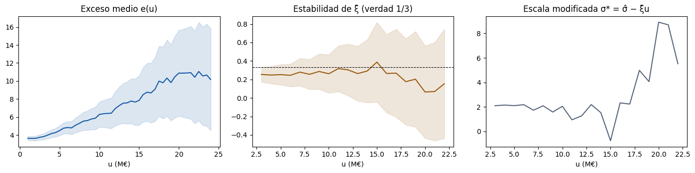
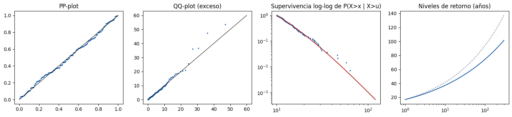
# =====================================================================
# Tema 5 - Teoria de valores extremos y riesgos catastroficos (POT / GPD)
# Ejercicio practico en R (base R + actuar + ggplot2) - Luiz Luzuriaga
# Master en Ciencias Actuariales y Financieras - Matematica Actuarial de la
# Estabilidad y Solvencia de la Actividad Aseguradora
# Nota: evd e ismev no estan instalados en este equipo; el MLE de la GPD se hace con optim()
# (equivalente a evd::fpot) y los graficos de umbral con ggplot2 (equivalentes a mrlplot/tcplot).
# Con evd instalado: fit <- evd::fpot(claims, threshold = 10, model = "gpd") da las mismas estimaciones.
# =====================================================================
suppressPackageStartupMessages({ library(actuar); library(ggplot2) })
T_ANOS <- 40; N_TOT <- 2000
# ---- Datos: la muestra de la practica de la diapositiva (Burr, semilla 123) -------
set.seed(123); claims <- rburr(2000, shape1 = 2, shape2 = 1.5, scale = 5)
write.csv(data.frame(perdida_MEUR = claims), "t5_siniestros.csv", row.names = FALSE) # mismo fichero que usan Excel y Python
x <- sort(claims, decreasing = TRUE)
cat(sprintf("n = %d mediana = %.2f p95 = %.2f maximo = %.2f siguiente = %.2f\n", length(claims), median(claims), quantile(claims, .95), x[1], x[2]))
burr_sf <- function(z) (1 / (1 + (z / 5)^1.5))^2; burr_ppf <- function(p) 5 * ((1 - p)^(-1 / 2) - 1)^(1 / 1.5)
var_verd <- burr_ppf(.995); tv_verd <- var_verd + integrate(burr_sf, var_verd, Inf)$value / burr_sf(var_verd)
cat(sprintf("Verdad: xi = %.4f VaR 99,5%% = %.2f TVaR 99,5%% = %.2f\n", 1 / 3, var_verd, tv_verd))
# ---- Funciones POT-GPD ---------------------------------------------------------------
var_gpd <- function(p, u, xi, sg, n, Nu) { r <- (n / Nu) * (1 - p); if (abs(xi) > 1e-8) u + sg * expm1(-xi * log(r)) / xi else u - sg * log(r) }
tvar_gpd <- function(p, u, xi, sg, n, Nu) (var_gpd(p, u, xi, sg, n, Nu) + sg - xi * u) / (1 - xi)
nivel_retorno <- function(m, u, xi, sg, lam) if (abs(xi) > 1e-8) u + sg * expm1(xi * log(lam * m)) / xi else u + sg * log(lam * m)
dgpd <- function(y, xi, sg, log = FALSE) { z <- 1 + xi * y / sg; l <- ifelse(z > 0, -log(sg) - (1 + 1 / xi) * log(z), -Inf); if (log) l else exp(l) }
pgpd <- function(y, xi, sg) 1 - pmax(1 + xi * y / sg, 0)^(-1 / xi)
mle_gpd <- function(exc) {
nll <- function(p) if (p[2] <= 0) Inf else -sum(dgpd(exc, p[1], p[2], log = TRUE))
o <- optim(c(.2, mean(exc)), nll, method = "Nelder-Mead", control = list(reltol = 1e-12, maxit = 4000), hessian = TRUE)
list(xi = o$par[1], sg = o$par[2], ll = -o$value, cov = solve(o$hessian))
}
ajuste <- function(u) { e <- claims[claims > u] - u; f <- mle_gpd(e); f$u <- u; f$Nu <- length(e); f$exc <- e; f }
# ---- (A) Casos 1 y 2 y la tabla del taller ----------------------------------------------
cat("\n== (A) Casos 1 y 2 ==\n")
caso <- list(Terremoto = c(n = 2000, T = 40, u = 10, Nu = 80, xi = .35, sg = 6), Inundacion = c(n = 1500, T = 30, u = 5, Nu = 60, xi = .25, sg = 4))
for (nm in names(caso)) { c <- caso[[nm]]; v <- var_gpd(.995, c["u"], c["xi"], c["sg"], c["n"], c["Nu"]); t <- tvar_gpd(.995, c["u"], c["xi"], c["sg"], c["n"], c["Nu"]); lam <- c["Nu"] / c["T"]
cat(sprintf("%s: VaR %.3f TVaR %.3f brecha %.3f (+%.1f%%) | retorno 100 a %.2f 200 a %.2f\n", nm, v, t, t - v, 100 * (t / v - 1), nivel_retorno(100, c["u"], c["xi"], c["sg"], lam), nivel_retorno(200, c["u"], c["xi"], c["sg"], lam))) }
tab <- data.frame(p = c(.97, .99, .995, .999)); tab$VaR <- sapply(tab$p, var_gpd, u = 10, xi = .35, sg = 6, n = 2000, Nu = 80); tab$TVaR <- sapply(tab$p, tvar_gpd, u = 10, xi = .35, sg = 6, n = 2000, Nu = 80)
tab$TVaR_VaR <- tab$TVaR / tab$VaR; tab$brecha <- tab$TVaR - tab$VaR; print(tab, digits = 5)
# ---- (B) Umbral: sensibilidad ----------------------------------------------------------------
cat("\n== (B) Sensibilidad al umbral ==\n")
us <- c(5, 7.5, 10, 12.5, 15, 20); fits <- lapply(us, ajuste)
sens <- do.call(rbind, lapply(fits, function(f) data.frame(u = f$u, Nu = f$Nu, lam_u = f$Nu / T_ANOS, xi = f$xi, xi_inf = f$xi - 1.96 * sqrt(f$cov[1, 1]), xi_sup = f$xi + 1.96 * sqrt(f$cov[1, 1]),
sigma = f$sg, sigma_star = f$sg - f$xi * f$u, VaR995 = var_gpd(.995, f$u, f$xi, f$sg, N_TOT, f$Nu), TVaR995 = tvar_gpd(.995, f$u, f$xi, f$sg, N_TOT, f$Nu))))
print(sens, digits = 4, row.names = FALSE)
# ---- (C) Ajuste en u = 10 e incertidumbre ----------------------------------------------------
cat("\n== (C) MLE en u = 10 ==\n")
u <- 10; f10 <- fits[[3]]; exc <- f10$exc; Nu <- f10$Nu
cat(sprintf("Nu = %d lambda_u = %.2f xi = %.4f (EE %.4f) sigma = %.4f (EE %.4f) logL = %.3f\n", Nu, Nu / T_ANOS, f10$xi, sqrt(f10$cov[1, 1]), f10$sg, sqrt(f10$cov[2, 2]), f10$ll))
vf <- function(p) var_gpd(.995, u, p[1], p[2], N_TOT, Nu); gr <- c((vf(c(f10$xi + 1e-5, f10$sg)) - vf(c(f10$xi - 1e-5, f10$sg))) / 2e-5, (vf(c(f10$xi, f10$sg + 1e-4)) - vf(c(f10$xi, f10$sg - 1e-4))) / 2e-4)
se_var <- sqrt(t(gr) %*% f10$cov %*% gr); v10 <- vf(c(f10$xi, f10$sg)); t10 <- tvar_gpd(.995, u, f10$xi, f10$sg, N_TOT, Nu)
cat(sprintf("VaR 99,5%% = %.2f (Wald [%.2f; %.2f]) TVaR 99,5%% = %.2f\n", v10, v10 - 1.96 * se_var, v10 + 1.96 * se_var, t10))
xg <- seq(.05, .9, length.out = 200)
prof <- sapply(xg, function(xv) -optimize(function(s) -sum(dgpd(exc, xv, s, log = TRUE)), c(.1, 30))$objective)
ok <- xg[prof >= f10$ll - qchisq(.95, 1) / 2]; cat(sprintf("Perfil de xi (95%%): [%.2f; %.2f]\n", min(ok), max(ok)))
set.seed(2024); B <- 1000; boot <- t(sapply(1:B, function(b) { yb <- qgpd_r <- NULL; yb <- (f10$sg / f10$xi) * ((1 - runif(Nu))^(-f10$xi) - 1); fb <- mle_gpd(yb); c(fb$xi, var_gpd(.995, u, fb$xi, fb$sg, N_TOT, Nu), tvar_gpd(.995, u, fb$xi, fb$sg, N_TOT, Nu)) }))
boot[boot[, 1] >= .98, 2:3] <- NA
cat("Bootstrap parametrico (B=1000), IC 95%:\n"); print(apply(boot, 2, quantile, probs = c(.025, .975), na.rm = TRUE), digits = 4)
y <- sort(exc); ne <- length(y); Fp <- (seq_len(ne) - .35) / ne; a0 <- mean(y); a1 <- mean(y * (1 - Fp)); xi_pwm <- 2 - a0 / (a0 - 2 * a1); sg_pwm <- 2 * a0 * a1 / (a0 - 2 * a1)
k <- Nu; xi_hill <- mean(log(x[1:k] / x[k + 1])); kk <- Nu %/% 4; xi_pick <- log((x[kk] - x[2 * kk]) / (x[2 * kk] - x[4 * kk])) / log(2)
cat(sprintf("PWM: xi = %.3f sigma = %.3f VaR = %.2f | Hill (k=%d): xi = %.3f VaR = %.2f | Pickands (k=%d): xi = %.3f | verdad: xi = 0.333\n",
xi_pwm, sg_pwm, var_gpd(.995, u, xi_pwm, sg_pwm, N_TOT, Nu), k, xi_hill, x[k + 1] * (k / (N_TOT * .005))^xi_hill, kk, xi_pick))
# ---- (E) De la severidad al SCR anual ----------------------------------------------------------
cat("\n== (E) SCR anual por simulacion ==\n")
sim_anual <- function(N, xi, sg, u0 = 10) {
tot <- sum(N); anio <- rep(seq_along(N), N); xi_v <- if (length(xi) > 1) rep(xi, N) else xi; sg_v <- if (length(sg) > 1) rep(sg, N) else sg
xs <- u0 + (sg_v / xi_v) * ((1 - runif(tot))^(-xi_v) - 1)
S <- numeric(length(N)); sb <- rowsum(xs, anio); S[as.integer(rownames(sb))] <- sb[, 1] # los anios sin eventos suman 0
M <- numeric(length(N)); mb <- tapply(xs, anio, max); M[as.integer(names(mb))] <- as.numeric(mb)
list(S = S, M = M)
}
set.seed(321); NY <- 1e6; xi0 <- .35; sg0 <- 6; lam0 <- 2
res <- function(r) c(E = mean(r$S), VaR = quantile(r$S, .995, names = FALSE), SCR = quantile(r$S, .995, names = FALSE) - mean(r$S), OEP200 = quantile(r$M, 1 - 1 / 200, names = FALSE))
r1 <- sim_anual(rpois(NY, lam0), xi0, sg0)
rr <- lam0^2 / (2.5 * lam0 - lam0); r2 <- sim_anual(rnbinom(NY, size = rr, mu = lam0), xi0, sg0)
Nu_ <- 80; cov_p <- matrix(c((1 + xi0)^2, -sg0 * (1 + xi0), -sg0 * (1 + xi0), 2 * sg0^2 * (1 + xi0)), 2) / Nu_; L <- t(chol(cov_p))
par <- cbind(xi0, sg0) [rep(1, NY), ] + t(L %*% matrix(rnorm(2 * NY), 2)); xi_s <- pmin(pmax(par[, 1], -.3), .95); sg_s <- pmax(par[, 2], 1)
r3 <- sim_anual(rpois(NY, lam0), xi_s, sg_s)
print(round(rbind("Poisson (lambda=2)" = res(r1), "Bin. Negativa (var = 2,5 media)" = res(r2), "Poisson + incertidumbre xi, sigma" = res(r3)), 1))
cat(sprintf("VaR 99,5%% de severidad por evento = %.2f M (%.0f%% del SCR simulado)\n", var_gpd(.995, 10, .35, 6, 2000, 80), 100 * var_gpd(.995, 10, .35, 6, 2000, 80) / res(r1)["SCR"]))
# ---- (F) Capa XL 40 xs 20 -------------------------------------------------------------------------
cat("\n== (F) Capa 40 xs 20 ==\n")
esp_exc <- function(d, u0, xi, sg) (sg + xi * (d - u0)) / (1 - xi) * (1 + xi * (d - u0) / sg)^(-1 / xi)
capa <- function(D, L, u0, xi, sg, lam) {
sfy <- function(y) (1 + xi * (D + y - u0) / sg)^(-1 / xi)
EL <- lam * (esp_exc(D, u0, xi, sg) - esp_exc(D + L, u0, xi, sg)); EY2 <- integrate(function(y) 2 * y * sfy(y), 0, L)$value; prima <- EL + .25 * sqrt(lam * EY2)
c(xi = xi, perdida_evento = esp_exc(D, u0, xi, sg) - esp_exc(D + L, u0, xi, sg), EL_anual = EL, P_contacto = 1 - exp(-lam * sfy(0)), P_agot = 1 - exp(-lam * sfy(L)), prima_tecnica = prima, ROL = prima / L)
}
print(do.call(rbind, lapply(c(.25, .35, .45), function(xi) capa(20, 40, 10, xi, 6, 2))), digits = 4)
# ---- (G) Censura por limites de poliza -------------------------------------------------------------
cat("\n== (G) Censura ==\n")
c_lim <- 30; capped <- pmin(claims, c_lim); e_c <- capped[capped > u] - u; cens <- capped[capped > u] >= c_lim
f_naive <- mle_gpd(e_c)
nll_c <- function(p) if (p[2] <= 0) Inf else -(sum(dgpd(e_c[!cens], p[1], p[2], log = TRUE)) + sum(log(pmax(1 - pgpd(e_c[cens], p[1], p[2]), 1e-300))))
oc <- optim(c(.2, 4), nll_c, method = "Nelder-Mead", control = list(reltol = 1e-12, maxit = 4000))
cat(sprintf("Datos completos: xi = %.3f VaR = %.2f | topados (%d en 30): ingenuo xi = %.3f VaR = %.2f | censurado xi = %.3f VaR = %.2f\n", f10$xi, v10, sum(cens),
f_naive$xi, var_gpd(.995, u, f_naive$xi, f_naive$sg, N_TOT, length(e_c)), oc$par[1], var_gpd(.995, u, oc$par[1], oc$par[2], N_TOT, length(e_c))))
# ---- Graficos -----------------------------------------------------------------------------------------
ug <- seq(1, 24, length.out = 47)
mrl <- do.call(rbind, lapply(ug, function(uu) { e <- claims[claims > uu] - uu; data.frame(u = uu, m = mean(e), lo = mean(e) - 1.96 * sd(e) / sqrt(length(e)), hi = mean(e) + 1.96 * sd(e) / sqrt(length(e))) }))
ggsave("t5_R_mrl.png", ggplot(mrl, aes(u, m)) + geom_ribbon(aes(ymin = lo, ymax = hi), alpha = .15, fill = "#1559a6") + geom_line(colour = "#1559a6") + labs(title = "Exceso medio e(u)", x = "u (M EUR)", y = "e(u)") + theme_minimal(base_size = 12), width = 6, height = 3.6, dpi = 130)
ugs <- seq(3, 22, by = 1); est <- do.call(rbind, lapply(ugs, function(uu) { f <- ajuste(uu); data.frame(u = uu, xi = f$xi, lo = f$xi - 1.96 * sqrt(f$cov[1, 1]), hi = f$xi + 1.96 * sqrt(f$cov[1, 1]), sigma_star = f$sg - f$xi * uu) }))
ggsave("t5_R_estabilidad.png", ggplot(est, aes(u, xi)) + geom_ribbon(aes(ymin = lo, ymax = hi), alpha = .15, fill = "#9a5b12") + geom_line(colour = "#9a5b12") + geom_hline(yintercept = 1 / 3, linetype = "dashed") +
labs(title = "Estabilidad de xi (verdad 1/3)", x = "u (M EUR)", y = "xi") + theme_minimal(base_size = 12), width = 6, height = 3.6, dpi = 130)
pe <- seq_len(ne) / (ne + 1); dq <- data.frame(teo = (f10$sg / f10$xi) * ((1 - pe)^(-f10$xi) - 1), emp = y)
ggsave("t5_R_qq.png", ggplot(dq, aes(teo, emp)) + geom_point(size = .8, colour = "#1559a6") + geom_abline() + labs(title = "QQ-plot de los excesos (GPD)", x = "cuantil teorico", y = "exceso observado") + theme_minimal(base_size = 12), width = 5, height = 3.8, dpi = 130)
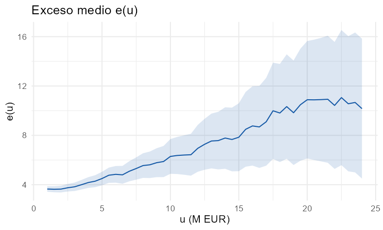
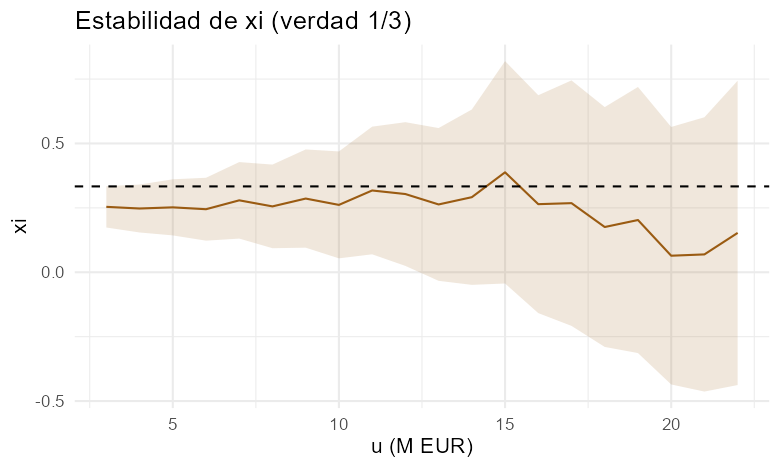
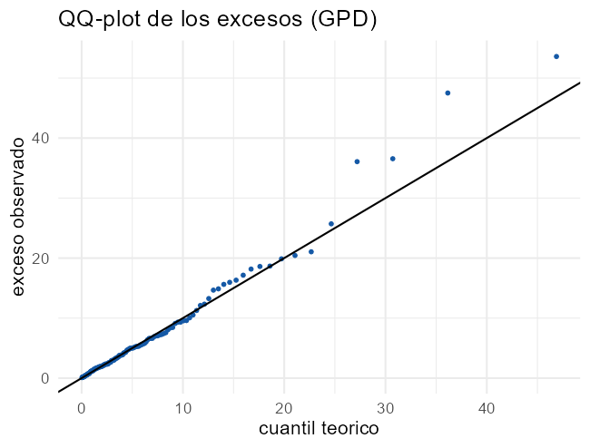